00 Java 性能优化，是进阶高级架构师的炼金石
你好，我是李国。作为《Java 性能优化与面试 21 讲》这个课程的作者，我先来简单介绍下自己。
我曾任京东金融、陌陌科技高级架构师，工作期间，我接触的都是比较底层的中间件和操作系统，涉及大量高并发场景下的调优工作，比如缓存优化、多线程优化、JVM 调优等。因此，我在高并发下的性能优化方面积累了丰富的实践经验，同时积累了一套自己独有的优化思路和优化技巧。我曾经优化过一个运行缓慢的复杂业务，单机 QPS 由原来的 2k/s 提升到了 2w/s，整个集群 QPS 达到近 100w/s。
随着互联网的发展，高可靠、高并发以及降本增效，已成为各大公司面临的现实挑战，性能优化需求愈发迫切，大到分布式系统，小到代码块的算法优化，都已经成为你日常工作中必须要面对的事情。对于开发者而言，性能优化也从加分项变为一个热门技能，缺乏相关知识将很难在面试或工作中脱颖而出。
性能优化有哪些困扰
但是作为过来人，我发现很多学习者和实践者在 Java 性能优化上面临着很多的困扰，比如：
- 工作场景中遇到“性能优化”难题，往往只能靠盲猜和感觉，用临时性的补救措施去掩盖，看似解决了问题，但下次同样的问题又会发作，原因则是缺乏方法论、思路的指引，以及工具支持；
- 能力修炼中，由于常年接触 CRUD，缺乏高并发这一实践环境，对“性能优化”只能通过理论知识进行想象，无法认识其在工作实战中的真实面目和实操过程；
- 职场晋升中，只管功能开发，不了解组件设计原理，缺少深入地思考与总结，无法完成高并发、高性能系统设计这类高阶工作，难以在工作中大展拳脚，而有挑战的工作往往留给有准备的人。
总之，一旦遇到“性能优化”问题，很少人能够由点及面逆向分析，最终找到瓶颈点和优化方法，而性能优化是软件工程的深水区，也是衡量一个程序员能力高低的标准。
进行 Java 性能优化的关键
俗话说，知己知彼百战百胜，想要克服“性能优化”这一难题，先要了解性能优化的特点，并抓住其关键和本质。
作为面试必考内容，很多应聘者反映说面试官的一些问题会让其陷入模棱两可的境地，不知如何作答，比如很多人就搞不懂缓冲与缓存的区别。这种问题的答案，只能靠体系化的整理，依靠零零散散的知识是行不通的。你需要具备触类旁通的能力，才能对面试的散点知识既有深度又有广度地做进一步升华，才会让面试官眼前一亮。
性能优化是个系统性工程，对工程师的技术广度和深度都有要求。它不仅需要你精通编程语言，还需要深刻理解操作系统、JVM 以及框架原理的相互作用关系，需要你多维度、全方面地去分析排查。
此外，很多人能够遇到问题解决问题，但救火式治理只能临时补救表面问题，无法真正找出病灶，这次的解决只是为下次发作埋下了伏笔。事实上，很多性能问题往往隐藏的很深，比如，spring-aop 所引起的性能问题就比较难以排查。
再比如，有人细致到会关注 switch 语句速度快还是 if 语句快，但并不能真正解决性能问题。原因是什么呢？他虽然做了“性能优化”这个动作，但思路方向却错了。这种极细微级别的优化对性能提升的影响面是很小的；而且，细节上极度地追求性能，反而会把代码写得晦涩难懂，难以维护，导致最后舍本逐末。其实，性能优化更多要求我们关注整体效果，兼顾可靠性、扩展性，以及极端的异常场景，这样才能体现性能优化的价值。
实践比理论重要。性能优化并不是对固定、单一场景的优化，场景不同，方法也会不同。比如，如果你的业务是串行的，耗时很长，就不能简单地通过增加 CPU 资源进行性能提升；如果你的业务是并行的，也不能钻牛角尖地优化每一行代码，要照顾各个资源的协调，对短板着重进行优化，以便达到最优效果。
在过去你面临以上情况时，可能会仅凭感觉入手，或者先动手才思考，无法发现抓住本质，但在本课程中，我会向你讲解正确的思路，让你进行性能优化时有理可依。
课程设计
在这个课程中，我汇总了 Java 性能优化的经典案例，结合大量代码示例，尽力为你还原真实的业务场景。
课程分为 5 个模块，共 21 篇，我将从理论分析、工具支持、案例与面试点，以及 JVM 优化四大方面展开系统讲解：
- 模块一：理论分析，针对平常对性能优化的盲猜问题，我们会首先讲解大量的衡量指标，然后以此为依据，盘点一下常用的优化方法，包括业务优化、复用优化、计算优化、结果集优化、资源冲突优化、算法优化、高效实现等方面。学完后，你将会了解如何描述性能，并对性能优化有个整体的印象。
- 模块二：工具支持，工欲善其事，必先利其器。此部分将介绍一些评估操作系统设备性能的工具，包含大量实用的命令行解析；还会介绍 Java 中最有效的基准测试工具 JMH，以及一些监测 JVM 性能的应用。本模块的目的，是为大家提供一些测量性能的工具，为实践环节做准备。
- 模块三：实战案例与高频面试点，该模块为课程的主要内容，结合之前模块的理论分析和工具支持，通过海量实战案例，深入专项性能场景，并将每个场景下的高频面试点逐一击破，点拨调优思路，目标是能够做到举一反三，在遇到相似的性能问题时，能够快速想到合适的切入点进行优化。
- 模块四：JVM 优化，该模块对系统的性能提升是巨大的。本部分主要介绍垃圾回收的一些基本知识，看一下 JIT 在性能提升上所做的文章；最后列举了一些常见的优化参数，以及对编码方面的要求。学完本模块，你将掌握和 JVM 相关的常见优化措施。
- 模块五：特别放送，最后，针对工作中最常用的服务和框架，我想和你介绍一个 SpringBoot 服务的优化案例，涵盖 Tomcat、Undertow、JVM、网络等场景，同时再进行优化方法和求职面经总结，希望以一个全局的案例，帮助你掌握从系统层到应用层的整个优化技巧。
你将收获
建立完整的性能优化知识体系。你可以系统地学习相关知识，而不是碎片化获取，基础理论实用性强，直入主题，让你在工作实战时有理可依，有据可循。
能够对线上应用输出优化思路。掌握各种实战排查工具，并灵活应用，定位至应用中的症结瓶颈点，并输出优化思路方案。正确的方法比努力更重要，有了正确的思路方法，才能在实际工作中避免跑偏，避免把大力气花在一些细枝末节上。我还会分享大量的操作系统方面的知识，让你对应用性能有更好的评测。
收获海量实战经验分享。作为这门课最硬核内容，我将从流行的中间件介绍到常用的工具类，再到 JDK 中的知识点，用实战分析和经验分享高度还原真实的业务场景，带你了解性能优化的全过程。
获得面试 Offer 收割利器。本课程的大多数案例，都是 Java 面试题的重灾区，我将直接指出高频考点，让你既能在整体上对性能优化提供建议，也能深入细节进行针对性优化。
讲师寄语
最后，性能优化既是工程师们进阶的“拦路虎”，也可以是你能力的炼金石。希望这个专栏可以让 这个非常难啃的老大难问题，变得“平易近人”“通俗易懂”“一点就通”，希望可以让你体会到“哦，原来如此简单！”的感觉，体会到久违的学习的快乐，并能学有所用。
另外，我去年就与拉勾教育平台合作了[《深入浅出 Java 虚拟机》（已完结）]课程，用户口碑还不错，Java 虚拟机这门课可作为 Java 性能优化课程的一个补充，我也推荐你去学习了解。
Java 性能优化对知识广度和知识深度都有比较高的要求，让我们掌握性能调优的思路，多多实践，使自己的编码水平更上层楼。
01 理论分析：性能优化，有哪些衡量指标？需要注意什么？
本课时主要从理论分析入手来介绍性能优化的衡量指标，及其理论方法和注意点。
指标是我们衡量很多事物，以及做出行为决策的重要参考。例如在生活中，当你打算买汽车时，会关注很多指标，比如动力性、燃油经济性、制动性、操纵稳定性、平顺性、通过性、排放与噪声等，而这些指标也都有相关的测试和参数，同时也会对这些指标进行一一参考。
这个道理大家都懂，但一旦到了性能优化上，却往往因为缺乏理论依据而选择了错误的优化方向，陷入了盲猜的窘境。在衡量一项优化是否能达到目的之时，不能仅靠感觉，它同样有一系列的指标来衡量你的改进。如果在改动之后，性能不升反降，那就不能叫性能优化了。
所谓性能，就是使用有限的资源在有限的时间内完成工作。最主要的衡量因素就是时间，所以很多衡量指标，都可以把时间作为横轴。
加载缓慢的网站，会受到搜索排名算法的惩罚，从而导致网站排名下降。 因此加载的快慢是性能优化是否合理的一个非常直观的判断因素，但性能指标不仅仅包括单次请求的速度，它还包含更多因素。
接下来看一下，都有哪些衡量指标能够帮我们进行决策。
衡量指标有哪些？

1. 吞吐量和响应速度
分布式的高并发应用并不能把单次请求作为判断依据，它往往是一个统计结果。其中最常用的衡量指标就是吞吐量和响应速度，而这两者也是考虑性能时非常重要的概念。要理解这两个指标的意义，我们可以类比为交通环境中的十字路口。
在交通非常繁忙的情况下，十字路口是典型的瓶颈点，当红绿灯放行时间非常长时，后面往往会排起长队。
从我们开车开始排队，到车经过红绿灯，这个过程所花费的时间，就是响应时间。
当然，我们可以适当地调低红绿灯的间隔时间，这样对于某些车辆来说，通过时间可能会短一些。但是，如果信号灯频繁切换，反而会导致单位时间内通过的车辆减少，换一个角度，我们也可以认为这个十字路口的车辆吞吐量减少了。
像我们平常开发中经常提到的，QPS 代表每秒查询的数量，TPS 代表每秒事务的数量，HPS 代表每秒的 HTTP 请求数量等，这都是常用的与吞吐量相关的量化指标。
在性能优化的时候，我们要搞清楚优化的目标，到底是吞吐量还是响应速度。 有些时候，虽然响应速度比较慢，但整个吞吐量却非常高，比如一些数据库的批量操作、一些缓冲区的合并等。虽然信息的延迟增加了，但如果我们的目标就是吞吐量，那么这显然也可以算是比较大的性能提升。
一般情况下，我们认为：
- 响应速度是串行执行的优化，通过优化执行步骤解决问题；
- 吞吐量是并行执行的优化，通过合理利用计算资源达到目标。
我们平常的优化主要侧重于响应速度，因为一旦响应速度提升了，那么整个吞吐量自然也会跟着提升。
但对于高并发的互联网应用来说，响应速度和吞吐量两者都需要。这些应用都会标榜为高吞吐、高并发的场景，用户对系统的延迟忍耐度很差，我们需要使用有限的硬件资源，从中找到一个平衡点。
2. 响应时间衡量
既然响应时间这么重要，我们就着重看一下响应时间的衡量方法。
（1）平均响应时间
我们最常用的指标，即平均响应时间(AVG)，该指标能够体现服务接口的平均处理能力。它的本质是把所有的请求耗时加起来，然后除以请求的次数。举个最简单的例子，有 10 个请求，其中有 2 个 1ms、3 个 5ms、5 个 10ms，那么它的平均耗时就是(21+35+5*10)/10=6.7ms。
除非服务在一段时间内出现了严重的问题，否则平均响应时间都会比较平缓。因为高并发应用请求量都特别大，所以长尾请求的影响会被很快平均，导致很多用户的请求变慢，但这不能体现在平均耗时指标中。
为了解决这个问题，另外一个比较常用的指标，就是百分位数(Percentile)。
（2）百分位数
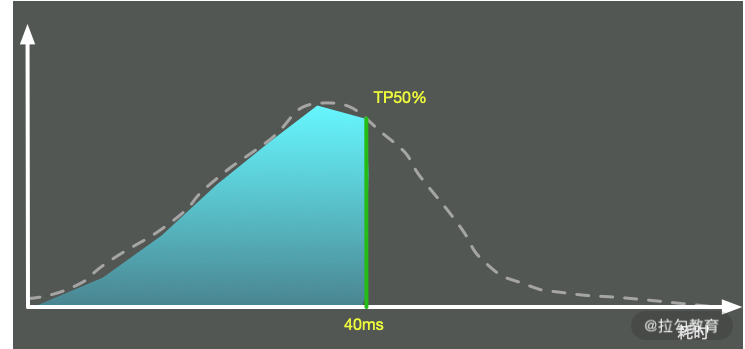
这个也比较好理解。我们圈定一个时间范围，把每次请求的耗时加入一个列表中，然后按照从小到大的顺序将这些时间进行排序。这样，我们取出特定百分位的耗时，这个数字就是 TP 值。可以看到，TP 值(Top Percentile)和中位数、平均数等是类似的，都是一个统计学里的术语。
它的意义是，超过 N% 的请求都在 X 时间内返回。比如 TP90 = 50ms，意思是超过 90th 的请求，都在 50ms 内返回。
这个指标也是非常重要的，它能够反映出应用接口的整体响应情况。比如，某段时间若发生了长时间的 GC，那它的某个时间段之上的指标就会产生严重的抖动，但一些低百分位的数值却很少有变化。
我们一般分为 TP50、TP90、TP95、TP99、TP99.9 等多个段，对高百分位的值要求越高，对系统响应能力的稳定性要求越高。
在这些高稳定性系统中，目标就是要干掉严重影响系统的长尾请求。这部分接口性能数据的收集，我们会采用更加详细的日志记录方式，而不仅仅靠指标。比如，我们将某个接口，耗时超过 1s 的入参及执行步骤，详细地输出在日志系统中。
3. 并发量
并发量是指系统同时能处理的请求数量，这个指标反映了系统的负载能力。
在高并发应用中，仅仅高吞吐是不够的，它还必须同时能为多个用户提供服务。并发高时，会导致很严重的共享资源争用问题，我们需要减少资源冲突，以及长时间占用资源的行为。
针对响应时间进行设计，一般来说是万能的。因为响应时间减少，同一时间能够处理的请求必然会增加。值得注意的是，即使是一个秒杀系统，经过层层过滤处理，最终到达某个节点的并发数，大概也就五六十左右。我们在平常的设计中，除非并发量特别低，否则都不需要太过度关注这个指标。
4. 秒开率
在移动互联网时代，尤其对于 App 中的页面，秒开是一种极佳的用户体验。如果能在 1 秒内加载完成页面，那用户可以获得流畅的体验，并且不会产生更多的焦虑感。
通常而言，可以根据业务情况设定不同的页面打开标准，比如低于 1 秒内的数据占比是秒开率。业界优秀的公司，比如手淘，其页面的秒开率基本可达到 80% 以上。
5. 正确性
说一个比较有意思的事情。我们有个技术团队，在进行测试的时候，发现接口响应非常流畅，把并发数增加到 20 以后，应用接口响应依旧非常迅速。
但等应用真正上线时，却发生了重大事故，这是因为接口返回的都是无法使用的数据。
其问题原因也比较好定位，就是项目中使用了熔断。在压测的时候，接口直接超出服务能力，触发熔断了，但是压测并没有对接口响应的正确性做判断，造成了非常低级的错误。
所以在进行性能评估的时候，不要忘记正确性这一关键要素。
有哪些理论方法？
性能优化有很多理论方法，比如木桶理论、基础测试、Amdahl 定律等。下面我们简单地讲解一下最常用的两个理论。
1. 木桶理论
一只木桶若想要装最多的水，则需要每块木板都一样长而且没有破损才行。如果有一块木板不满足条件，那么这只桶就无法装最多的水。
能够装多少水，取决于最短的那块木板，而不是最长的那一块。
木桶效应在解释系统性能上，也非常适合。组成系统的组件，在速度上是良莠不齐的。系统的整体性能，就取决于系统中最慢的组件。
比如，在数据库应用中，制约性能最严重的是落盘的 I/O 问题，也就是说，硬盘是这个场景下的短板，我们首要的任务就是补齐这个短板。
2. 基准测试、预热
基准测试(Benchmark)并不是简单的性能测试，是用来测试某个程序的最佳性能。
应用接口往往在刚启动后都有短暂的超时。在测试之前，我们需要对应用进行预热，消除 JIT 编译器等因素的影响。而在 Java 里就有一个组件，即 JMH，就可以消除这些差异。
注意点

1. 依据数字而不是猜想
有些同学对编程有很好的感觉，能够靠猜测列出系统的瓶颈点，这种情况固然存在，但却非常不可取。复杂的系统往往有多个影响因素，我们应将性能分析放在第一位，把性能优化放在次要位置，直觉只是我们的辅助，但不能作为下结论的工具。
进行性能优化时，我们一般会把分析后的结果排一个优先级（根据难度和影响程度），从大处着手，首先击破影响最大的点，然后将其他影响因素逐一击破。
有些优化会引入新的性能问题，有时候这些新问题会引起更严重的性能下降，你需要评估这个连锁反应，确保这种优化确实需要，同时需要使用数字去衡量这个过程，而不是靠感觉猜想。
2. 个体数据不足信
你是否有这样的经历：某个知名网站的访问速度真慢，光加载就花费了 x 秒。其实，仅凭一个人的一次请求，就下了“慢”这个结论，是不合适的，而在我们进行性能评估的时候，也往往会陷入这样的误区。
这是因为个体请求的小批量数据，可参考价值并不是非常大。响应时间可能因用户的数据而异，也可能取决于设备和网络条件。
合理的做法，是从统计数据中找到一些规律，比如上面所提到的平均响应时间、TP 值等，甚至是响应时间分布的直方图，这些都能够帮我们评估性能质量。
3. 不要过早优化和过度优化
虽然性能优化有这么多好处，但并不代表我们要把每个地方都做到极致，性能优化也是要有限度的。程序要运行地正确，要比程序运行得更快还要困难。
计算机科学的鼻祖"Donald Knuth" 曾说：“过早的优化是万恶之源”，就是这个道理。
如果一项改进并不能产生明显的价值，那我们为什么还要花大力气耗在上面呢？比如，某个应用已经满足了用户的吞吐量需求和响应需求，但有的同学热衷于 JVM 的调优，依然花很大力气在参数测试上，这种优化就属于过度优化。
时间要花在刀刃上，我们需要找到最迫切需要解决的性能点，然后将其击破。比如，一个系统主要是慢在了数据库查询上，结果你却花了很大的精力去优化 Java 编码规范，这就是偏离目标的典型情况。
一般地，性能优化后的代码，由于太过于追求执行速度，读起来都比较晦涩，在结构上也会有很多让步。很显然，过早优化会让这种难以维护的特性过早介入到你的项目中，等代码重构的时候，就会花更大的力气去解决它。
正确的做法是，项目开发和性能优化，应该作为两个独立的步骤进行，要做性能优化，要等到整个项目的架构和功能大体进入稳定状态时再进行。
4. 保持良好的编码习惯
我们上面提到，不要过早地优化和过度优化，但并不代表大家在编码时就不考虑这些问题。
比如，保持好的编码规范，就可以非常方便地进行代码重构；使用合适的设计模式，合理的划分模块，就可以针对性能问题和结构问题进行聚焦、优化。
在追求高性能、高质量编码的过程中，一些好的习惯都会积累下来，形成人生道路上优秀的修养和品质，这对我们是大有裨益的。
小结
在本课时，我们简单地了解了衡量性能的一些指标，比如常见的吞吐量和响应速度，还探讨了一些其他的影响因素，比如并发量、秒开率、容错率等。
同时，我们也谈到了木桶理论和基准测试等两种过程方法，并对性能测试中的一些误区和注意点进行了介绍，现在你应该对如何描述性能有了更好的理解。像一些专业的性能测试软件，如 JMeter、LoadRunner 等，就是在这些基础性能指标上进行的扩展。我们在平常的工作中，也应该尽量使用专业术语，这样才能对系统性能进行正确评估。
了解了优化指标后，有了行动导向，那接下来该从哪些方面入手呢？ Java 性能优化是否有可以遵循的规律呢？
下一课时，我们将从整体上，来介绍一下性能优化都有哪些考量点。
02 理论分析：性能优化有章可循，谈谈常用的切入点
本课时主要讲解 Java 性能优化有哪些可以遵循的规律。
在上一课时，我们详细地了解了对于性能的定义，这样在做性能优化的时候，就有了具体的优化目标和衡量方法，优化效果也不会仅仅停留在直观感觉上。
了解了优化目标后，那接下来应该从哪些方面入手呢？本课时主要侧重于理论分析，我们从整体上看一下 Java 性能优化都有哪些可以遵循的规律。本课主讲理论，关于实践，后面的课时会用较多的案例来细化本课时的知识点，适合反复思考和归纳。
性能优化的 7 类技术手段
性能优化根据优化的类别，分为业务优化和技术优化。业务优化产生的效果也是非常大的，但它属于产品和管理的范畴。同作为程序员，在平常工作中，我们面对的优化方式，主要是通过一系列的技术手段，来完成对既定的优化目标。这一系列的技术手段，我大体归纳为如图以下 7 类：
可以看到，优化方式集中在对计算资源和存储资源的规划上。优化方法中有多种用空间换时间的方式，但只照顾计算速度，而不考虑复杂性和空间问题，也是不可取的。我们要做的，就是在照顾性能的前提下，达到资源利用的最优状态。
接下来，我简要介绍一下这 7 种优化方式。如果你感觉比较枯燥，那也没关系，我们本课时的目的，就是让你的脑海里有一个总分的概念，以及对理论基础有一个整体的认识。
1. 复用优化
在写代码的时候，你会发现有很多重复的代码可以提取出来，做成公共的方法。这样，在下次用的时候，就不用再费劲写一遍了。
这种思想就是复用。上面的描述是编码逻辑上的优化，对于数据存取来说，有同样的复用情况。无论是在生活中还是编码中，重复的事情一直在发生，如果没有复用，工作和生活就会比较累。
在软件系统中，谈到数据复用，我们首先想到的就是缓冲和缓存。注意这两个词的区别，它们的意义是完全不同的，很多同学很容易搞混，在这里简单地介绍一下（后续 06 和 07 课时会再详细讲解）。
- 缓冲（Buffer），常见于对数据的暂存，然后批量传输或者写入。多使用顺序方式，用来缓解不同设备之间频繁地、缓慢地随机写，缓冲主要针对的是写操作。
- 缓存（Cache），常见于对已读取数据的复用，通过将它们缓存在相对高速的区域，缓存主要针对的是读操作。
与之类似的，是对于对象的池化操作，比如数据库连接池、线程池等，在 Java 中使用得非常频繁。由于这些对象的创建和销毁成本都比较大，我们在使用之后，也会将这部分对象暂时存储，下次用的时候，就不用再走一遍耗时的初始化操作了。

2. 计算优化
（1）并行执行
现在的 CPU 发展速度很快，绝大多数硬件，都是多核。要想加快某个任务的执行，最快最优的解决方式，就是让它并行执行。并行执行有以下三种模式。
第一种模式是多机，采用负载均衡的方式，将流量或者大的计算拆分成多个部分，同时进行处理。比如，Hadoop 通过 MapReduce 的方式，把任务打散，多机同时进行计算。
第二种模式是采用多进程。比如 Nginx，采用 NIO 编程模型，Master 统一管理 Worker 进程，然后由 Worker 进程进行真正的请求代理，这也能很好地利用硬件的多个 CPU。
第三种模式是使用多线程，这也是 Java 程序员接触最多的。比如 Netty，采用 Reactor 编程模型，同样使用 NIO，但它是基于线程的。Boss 线程用来接收请求，然后调度给相应的 Worker 线程进行真正的业务计算。
像 Golang 这样的语言，有更加轻量级的协程（Coroutine），协程是一种比线程更加轻量级的存在，但目前在 Java 中还不太成熟，就不做过多介绍了，但本质上，它也是对于多核的应用，使得任务并行执行。
（2）变同步为异步
再一种对于计算的优化，就是变同步为异步，这通常涉及编程模型的改变。同步方式，请求会一直阻塞，直到有成功，或者失败结果的返回。虽然它的编程模型简单，但应对突发的、时间段倾斜的流量，问题就特别大，请求很容易失败。
异步操作可以方便地支持横向扩容，也可以缓解瞬时压力，使请求变得平滑。同步请求，就像拳头打在钢板上；异步请求，就像拳头打在海绵上。你可以想象一下这个过程，后者肯定是富有弹性的，体验更加友好。
（3）惰性加载
最后一种，就是使用一些常见的设计模式来优化业务，提高体验，比如单例模式、代理模式等。举个例子，在绘制 Swing 窗口的时候，如果要显示比较多的图片，就可以先加载一个占位符，然后通过后台线程慢慢加载所需要的资源，这就可以避免窗口的僵死。
3. 结果集优化
接下来介绍一下对结果集的优化。举个比较直观的例子，我们都知道 XML 的表现形式是非常好的，那为什么还有 JSON 呢？除了书写要简单一些，一个重要的原因就是它的体积变小了，传输效率和解析效率变高了，像 Google 的 Protobuf，体积就更小了一些。虽然可读性降低，但在一些高并发场景下（如 RPC），能够显著提高效率，这是典型的对结果集的优化。
这是由于我们目前的 Web 服务，都是 C/S 模式。数据从服务器传输到客户端，需要分发多份，这个数据量是急剧膨胀的，每减少一小部分存储，都会有比较大的传输性能和成本提升。
像 Nginx，一般都会开启 GZIP 压缩，使得传输的内容保持紧凑。客户端只需要一小部分计算能力，就可以方便解压。由于这个操作是分散的，所以性能损失是固定的。
了解了这个道理，我们就能看到对于结果集优化的一般思路，你要尽量保持返回数据的精简。一些客户端不需要的字段，那就在代码中，或者直接在 SQL 查询中，就把它去掉。
对于一些对时效性要求不高，但对处理能力有高要求的业务。我们要吸取缓冲区的经验，尽量减少网络连接的交互，采用批量处理的方式，增加处理速度。
结果集合很可能会有二次使用，你可能会把它加入缓存中，但依然在速度上有所欠缺。这个时候，就需要对数据集合进行处理优化，采用索引或者 Bitmap 位图等方式，加快数据访问速度。

4. 资源冲突优化
我们在平常的开发中，会涉及很多共享资源。这些共享资源，有的是单机的，比如一个 HashMap；有的是外部存储，比如一个数据库行；有的是单个资源，比如 Redis 某个 key 的Setnx；有的是多个资源的协调，比如事务、分布式事务等。
现实中的性能问题，和锁相关的问题是非常多的。大多数我们会想到数据库的行锁、表锁、Java 中的各种锁等。在更底层，比如 CPU 命令级别的锁、JVM 指令级别的锁、操作系统内部锁等，可以说无处不在。
只有并发，才能产生资源冲突。也就是在同一时刻，只能有一个处理请求能够获取到共享资源。解决资源冲突的方式，就是加锁。再比如事务，在本质上也是一种锁。
按照锁级别，锁可分为乐观锁和悲观锁，乐观锁在效率上肯定是更高一些；按照锁类型，锁又分为公平锁和非公平锁，在对任务的调度上，有一些细微的差别。
对资源的争用，会造成严重的性能问题，所以会有一些针对无锁队列之类的研究，对性能的提升也是巨大的。

5. 算法优化
算法能够显著提高复杂业务的性能，但在实际的业务中，往往都是变种。由于存储越来越便宜，在一些 CPU 非常紧张的业务中，往往采用空间换取时间的方式，来加快处理速度。
算法属于代码调优，代码调优涉及很多编码技巧，需要使用者对所使用语言的 API 也非常熟悉。有时候，对算法、数据结构的灵活使用，也是代码优化的一个重要内容。比如，常用的降低时间复杂度的方式，就有递归、二分、排序、动态规划等。
一个优秀的实现，比一个拙劣的实现，对系统的影响是非常大的。比如，作为 List 的实现，LinkedList 和 ArrayList 在随机访问的性能上，差了好几个数量级；又比如，CopyOnWriteList 采用写时复制的方式，可以显著降低读多写少场景下的锁冲突。而什么时候使用同步，什么时候是线程安全的，也对我们的编码能力有较高的要求。
这部分的知识，就需要我们在平常的工作中注意积累，后面的课时中，也会挑比较重要的知识点穿插讲解。
6. 高效实现
在平时的编程中，尽量使用一些设计理念良好、性能优越的组件。比如，有了 Netty，就不用再选择比较老的 Mina 组件。而在设计系统时，从性能因素考虑，就不要选 SOAP 这样比较耗时的协议。再比如，一个好的语法分析器（比如使用 JavaCC），其效率会比正则表达式高很多。
总之，如果通过测试分析，找到了系统的瓶颈点，就要把关键的组件，使用更加高效的组件进行替换。在这种情况下，适配器模式是非常重要的。这也是为什么很多公司喜欢在现有的组件之上，再抽象一层自己的；而当在底层组件进行切换的时候，上层的应用并无感知。
7. JVM 优化
因为 Java 是运行在 JVM 虚拟机之上，它的诸多特性，就要受到 JVM 的制约。对 JVM 虚拟机进行优化，也能在一定程度上能够提升 JAVA 程序的性能。如果参数配置不当，甚至会造成 OOM 等比较严重的后果。
目前被广泛使用的垃圾回收器是 G1，通过很少的参数配置，内存即可高效回收。CMS 垃圾回收器已经在 Java 14 中被移除，由于它的 GC 时间不可控，有条件应该尽量避免使用。
JVM 性能调优涉及方方面面的取舍，往往是牵一发而动全身，需要全盘考虑各方面的影响。所以了解 JVM 内部的一些运行原理，还是特别重要的，它有益于我们加深对代码更深层次的理解，帮助我们书写出更高效的代码。
小结
以上就是代码优化的 7 个大方向，我们通过简要的介绍，让大家对性能优化的内容有了大体的了解。这 7 大方向是代码优化的最主要方向，当然，性能优化还包含数据库优化、操作系统优化、架构优化等其他一些内容，这些不是我们的重点，在后面的课时中，我们也只做简要的介绍。
接下来，我们会了解一些性能评估工具，了解操作系统的一些资源限制，然后针对这 7 个优化点，进行展开讨论。本课时适合案例分析后回读，更加能够加深你对 Java 性能优化的理解。
03 深入剖析：哪些资源，容易成为瓶颈？
在第 02 课时，我们简单介绍了解决性能问题常用的一些切入点。本课时我将从计算机资源层面向你讲解，哪些系统组件容易出现性能瓶颈？以及如何判断该系统组件是否达到了瓶颈？
计算机各个组件之间的速度往往很不均衡，比如 CPU 和硬盘，比兔子和乌龟的速度差还大，那么按照我们前面介绍的木桶理论，可以说这个系统是存在着短板的。
当系统存在短板时，就会对性能造成较大的负面影响，比如当 CPU 的负载特别高时，任务就会排队，不能及时执行。而其中，CPU、内存、I/O 这三个系统组件，又往往容易成为瓶颈，所以接下来我会对这三方面分别进行讲解。
CPU
首先介绍计算机中最重要的计算组件中央处理器 CPU，围绕 CPU 一般我们可以：
- 通过 top 命令，来观测 CPU 的性能；
- 通过负载，评估 CPU 任务执行的排队情况；
- 通过 vmstat，看 CPU 的繁忙程度。
具体情况如下。
1.top 命令 —— CPU 性能
如下图，当进入 top 命令后，按 1 键即可看到每核 CPU 的运行指标和详细性能。

CPU 的使用有多个维度的指标，下面分别说明：
- us 用户态所占用的 CPU 百分比，即引用程序所耗费的 CPU；
- sy 内核态所占用的 CPU 百分比，需要配合 vmstat 命令，查看上下文切换是否频繁；
- ni 高优先级应用所占用的 CPU 百分比；
- wa 等待 I/O 设备所占用的 CPU 百分比，经常使用它来判断 I/O 问题，过高输入输出设备可能存在非常明显的瓶颈；
- hi 硬中断所占用的 CPU 百分比；
- si 软中断所占用的 CPU 百分比；
- st 在平常的服务器上这个值很少发生变动，因为它测量的是宿主机对虚拟机的影响，即虚拟机等待宿主机 CPU 的时间占比，这在一些超卖的云服务器上，经常发生；
- id 空闲 CPU 百分比。
一般地，我们比较关注空闲 CPU 的百分比，它可以从整体上体现 CPU 的利用情况。
2.负载 —— CPU 任务排队情况
如果我们评估 CPU 任务执行的排队情况，那么需要通过负载（load）来完成。除了 top 命令，使用 uptime 命令也能够查看负载情况，load 的效果是一样的，分别显示了最近 1min、5min、15min 的数值。

如上图所示，以单核操作系统为例，将 CPU 资源抽象成一条单向行驶的马路，则会发生以下三种情况：
- 马路上的车只有 4 辆，车辆畅通无阻，load 大约是 0.5；
- 马路上的车有 8 辆，正好能首尾相接安全通过，此时 load 大约为 1；
- 马路上的车有 12 辆，除了在马路上的 8 辆车，还有 4 辆等在马路外面，需要排队，此时 load 大约为 1.5。
那 load 为 1 代表的是啥？针对这个问题，误解还是比较多的。
很多人看到 load 的值达到 1，就认为系统负载已经到了极限。这在单核的硬件上没有问题，但在多核硬件上，这种描述就不完全正确，它还与 CPU 的个数有关。例如：
- 单核的负载达到 1，总 load 的值约为 1；
- 双核的每核负载都达到 1，总 load 约为 2；
- 四核的每核负载都达到 1，总 load 约为 4。
所以，对于一个 load 到了 10，却是 16 核的机器，你的系统还远没有达到负载极限。
3.vmstat —— CPU 繁忙程度
要看 CPU 的繁忙程度，可以通过 vmstat 命令，下图是 vmstat 命令的一些输出信息。

比较关注的有下面几列：
- b 如果系统有负载问题，就可以看一下 b 列（Uninterruptible Sleep），它的意思是等待 I/O，可能是读盘或者写盘动作比较多；
- si/so 显示了交换分区的一些使用情况，交换分区对性能的影响比较大，需要格外关注；
- cs 每秒钟上下文切换（Context Switch）的数量，如果上下文切换过于频繁，就需要考虑是否是进程或者线程数开的过多。
每个进程上下文切换的具体数量，可以通过查看内存映射文件获取，如下代码所示：
[root@localhost ~]# cat /proc/2788/status
...
voluntary_ctxt_switches: 93950
nonvoluntary_ctxt_switches: 171204
内存
要想了解内存对性能的影响，则需要从操作系统层面来看一下内存的分布。
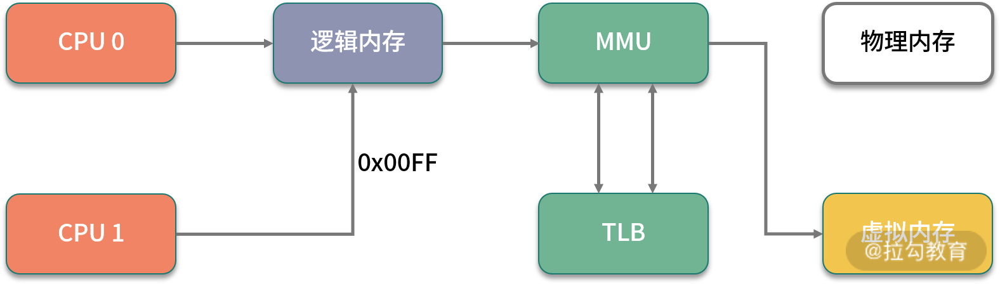
我们在平常写完代码后，比如写了一个 C++ 程序，去查看它的汇编，如果看到其中的内存地址，并不是实际的物理内存地址，那么应用程序所使用的，就是逻辑内存。学过计算机组成结构的同学应该都有了解。
逻辑地址可以映射到两个内存段上：物理内存和虚拟内存，那么整个系统可用的内存就是两者之和。比如你的物理内存是 4GB，分配了 8GB 的 SWAP 分区，那么应用可用的总内存就是 12GB。
1. top 命令

如上图所示，我们看一下内存的几个参数，从 top 命令可以看到几列数据，注意方块框起来的三个区域，解释如下：
- VIRT 这里是指虚拟内存，一般比较大，不用做过多关注；
- RES 我们平常关注的是这一列的数值，它代表了进程实际占用的内存，平常在做监控时，主要监控的也是这个数值；
- SHR 指的是共享内存，比如可以复用的一些 so 文件等。
2. CPU 缓存
由于 CPU 和内存之间的速度差异非常大，解决方式就是加入高速缓存。实际上，这些高速缓存往往会有多层，如下图所示。

Java 有大部分知识点是围绕多线程的，那是因为，如果一个线程的时间片跨越了多个 CPU，那么就会存在同步问题。
在 Java 中，和 CPU 缓存相关的最典型的知识点，就是在并发编程中，针对 Cache line 的伪共享（False Sharing）问题。
伪共享指的是在这些高速缓存中，以缓存行为单位进行存储，哪怕你修改了缓存行中一个很小很小的数据，它都会整个刷新。所以，当多线程修改一些变量的值时，如果这些变量都在同一个缓存行里，就会造成频繁刷新，无意中影响彼此的性能。
CPU 的每个核，基本是相同的，我们拿 CPU0 来说，可以通过以下的命令查看它的缓存行大小，这个值一般是 64。
cat /sys/devices/system/cpu/cpu0/cache/index0/coherency_line_size
cat /sys/devices/system/cpu/cpu0/cache/index1/coherency_line_size
cat /sys/devices/system/cpu/cpu0/cache/index2/coherency_line_size
cat /sys/devices/system/cpu/cpu0/cache/index3/coherency_line_size
当然，通过 cpuinfo 也能得到一样的结果：
# cat /proc/cpuinfo | grep cache
cache size : 20480 KB
cache_alignment : 64
cache size : 20480 KB
cache_alignment : 64
cache size : 20480 KB
cache_alignment : 64
cache size : 20480 KB
cache_alignment : 64
在 JDK8 以上的版本，通过开启参数 -XX:-RestrictContended，就可以使用注解 @sun.misc.Contended 进行补齐，来避免伪共享的问题。具体情况，在 12 课时并行优化中，我们再详细讲解。
3. HugePage

我们再回顾一下上文提到的这张图，上面有一个 TLB 组件，它的速度很快，但容量有限，在普通的 PC 机上没有什么瓶颈。但如果机器配置比较高，物理内存比较大，那就会产生非常多的映射表，CPU 的检索效率也会随之降低。
传统的页大小是 4KB，在大内存时代这个值偏小了，解决的办法就是增加页的尺寸，比如将其增加到 2MB，这样，就可以使用较少的映射表来管理大内存。而这种将页增大的技术，就是 Huge Page。

同时，HugePage 也伴随着一些副作用，比如竞争加剧，但在一些大内存的机器上，开启后在一定程度上会增加性能。
4. 预先加载
另外，一些程序的默认行为也会对性能有所影响，比如 JVM 的 -XX:+AlwaysPreTouch 参数。
默认情况下，JVM 虽然配置了 Xmx、Xms 等参数，指定堆的初始化大小和最大大小，但它的内存在真正用到时，才会分配；但如果加上 AlwaysPreTouch 这个参数，JVM 会在启动的时候，就把所有的内存预先分配。
这样，启动时虽然慢了些，但运行时的性能会增加。
I/O
I/O 设备可能是计算机里速度最慢的组件了，它指的不仅仅是硬盘，还包括外围的所有设备。那硬盘有多慢呢？我们不去探究不同设备的实现细节，直接看它的写入速度（数据未经过严格测试，仅作参考）。

如上图所示，可以看到普通磁盘的随机写与顺序写相差非常大，但顺序写与 CPU 内存依旧不在一个数量级上。
缓冲区依然是解决速度差异的唯一工具，但在极端情况下，比如断电时，就产生了太多的不确定性，这时这些缓冲区，都容易丢。由于这部分内容的篇幅比较大，我将在第 06 课时专门讲解。
1. iostat
最能体现 I/O 繁忙程度的，就是 top 命令和 vmstat 命令中的 wa%。如果你的应用写了大量的日志，I/O wait 就可能非常高。

很多同学反馈到，不知道有哪些便捷好用的查看磁盘 I/O 的工具，其实 iostat 就是。你可以通过 sysstat 包进行安装。

上图中的指标详细介绍如下所示。
- %util：我们非常关注这个数值，通常情况下，这个数字超过 80%，就证明 I/O 的负荷已经非常严重了。
- Device：表示是哪块硬盘，如果你有多块磁盘，则会显示多行。
- avgqu-sz：平均请求队列的长度，这和十字路口排队的汽车也非常类似。显然，这个值越小越好。
- awai：响应时间包含了队列时间和服务时间，它有一个经验值。通常情况下应该是小于 5ms 的，如果这个值超过了 10ms，则证明等待的时间过长了。
- svctm：表示操作 I/O 的平均服务时间。你可以回忆一下第 01 课时的内容，在这里就是 AVG 的意思。svctm 和 await 是强相关的，如果它们比较接近，则表示 I/O 几乎没有等待，设备的性能很好；但如果 await 比 svctm 的值高出很多，则证明 I/O 的队列等待时间太长，进而系统上运行的应用程序将变慢。
2. 零拷贝
硬盘上的数据，在发往网络之前，需要经过多次缓冲区的拷贝，以及用户空间和内核空间的多次切换。如果能减少一些拷贝的过程，效率就能提升，所以零拷贝应运而生。
零拷贝是一种非常重要的性能优化手段，比如常见的 Kafka、Nginx 等，就使用了这种技术。我们来看一下有无零拷贝之间的区别。
（1）没有采取零拷贝手段
如下图所示，传统方式中要想将一个文件的内容通过 Socket 发送出去，则需要经过以下步骤：
- 将文件内容拷贝到内核空间；
- 将内核空间内存的内容，拷贝到用户空间内存，比如 Java 应用读取 zip 文件；
- 用户空间将内容写入到内核空间的缓存中；
- Socket 读取内核缓存中的内容，发送出去。
没有采取零拷贝手段的图
（2）采取了零拷贝手段
零拷贝有多种模式，我们用 sendfile 来举例。如下图所示，在内核的支持下，零拷贝少了一个步骤，那就是内核缓存向用户空间的拷贝，这样既节省了内存，也节省了 CPU 的调度时间，让效率更高。
 采取了零拷贝手段的图
采取了零拷贝手段的图
小结
本课时我们学习了计算机中对性能影响最大的三个组件：CPU、内存、I/O，并深入了解了观测它们性能的一些命令，这些方式可以帮我们大体猜测性能问题发生的地方。
但它们对性能问题，只能起到辅助作用，不能帮助我们精准地定位至真正的性能瓶颈，还需要做更多深入的排查工作，收集更多信息。
最后留一个思考题：磁盘的速度这么慢，为什么 Kafka 操作磁盘，吞吐量还能那么高？你可以先在留言区讨论，下一课时我会讲解。
不知你在实际的工作中是否还有其他的疑惑，欢迎留言讨论，我会一一解答~
在接下来的第 04 课时，我将介绍一系列更深入的工具，帮你获取性能数据，离“病灶”更近一步。
04 工具实践：如何获取代码性能数据？
首先解答一下上一课时的问题。磁盘的速度这么慢，为什么 Kafka 操作磁盘，吞吐量还能那么高？
这是因为，磁盘之所以慢，主要就是慢在寻道的操作上面。Kafka 官方测试表明，这个寻道时间长达 10ms。磁盘的顺序写和随机写的速度比，可以达到 6 千倍，Kafka 就是采用的顺序写的方式。
经过上一课时我们了解到，想要进行深入排查，需要收集较详细的性能数据，包括操作系统性能数据、JVM 的性能数据、应用的性能数据等。
那么，我们应该如何获取这些数据呢？本课时我将介绍一系列常用的性能测试工具。
nmon —— 获取系统性能数据
除了在上一课时中介绍的 top、free 等命令，还有一些将资源整合在一起的监控工具，
nmon 便是一个老牌的 Linux 性能监控工具，它不仅有漂亮的监控界面（如下图所示），还能产出细致的监控报表。

我在对应用做性能评估时，通常会加上 nmon 的报告，这会让测试结果更加有说服力。你在平时工作中也可如此尝试。
上一课时介绍的一些操作系统性能指标，都可从 nmon 中获取。它的监控范围很广，包括 CPU、内存、网络、磁盘、文件系统、NFS、系统资源等信息。
nmon 在 sourceforge 发布，我已经下载下来并上传到了仓库中。比如我的是 CentOS 7 系统，选择对应的版本即可执行。
./nmon_x86_64_centos7
按 C 键可加入 CPU 面板；按 M 键可加入内存面板；按 N 键可加入网络；按 D 键可加入磁盘等。
通过下面的命令，表示每 5 秒采集一次数据，共采集 12 次，它会把这一段时间之内的数据记录下来。比如本次生成了 localhost_200623_1633.nmon 这个文件，我们把它从服务器上下载下来。
./nmon_x86_64_centos7 -f -s 5 -c 12 -m -m .
注意：执行命令之后，可以通过 ps 命令找到这个进程。
[root@localhost nmon16m_helpsystems]# ps -ef| grep nmon
root 2228 1 0 16:33 pts/0 00:00:00 ./nmon_x86_64_centos7 -f -s 5 -c 12 -m .
使用 nmonchart 工具（见仓库），即可生成 html 文件。下面是生成文件的截图。
 nmonchart 报表
nmonchart 报表
jvisualvm —— 获取 JVM 性能数据
jvisualvm 原是随着 JDK 发布的一个工具，Java 9 之后开始单独发布。通过它，可以了解应用在运行中的内部情况。我们可以连接本地或者远程的服务器，监控大量的性能数据。
通过插件功能，jvisualvm 能获得更强大的扩展。如下图所示，建议把所有的插件下载下来进行体验。
jvisualvm 插件安装
要想监控远程的应用，还需要在被监控的 App 上加入 jmx 参数。
-Dcom.sun.management.jmxremote.port=14000
-Dcom.sun.management.jmxremote.authenticate=false
-Dcom.sun.management.jmxremote.ssl=false
上述配置的意义是开启 JMX 连接端口 14000，同时配置不需要 SSL 安全认证方式连接。
对于性能优化来说，我们主要用到它的采样器。注意，由于抽样分析过程对程序运行性能有较大的影响，一般我们只在测试环境中使用此功能。

jvisualvm CPU 性能采样图
对于一个 Java 应用来说，除了要关注它的 CPU 指标，垃圾回收方面也是不容忽视的性能点，我们主要关注以下三点。
- CPU 分析：统计方法的执行次数和执行耗时，这些数据可用于分析哪个方法执行时间过长，成为热点等。
- 内存分析：可以通过内存监视和内存快照等方式进行分析，进而检测内存泄漏问题，优化内存使用情况。
- 线程分析：可以查看线程的状态变化，以及一些死锁情况。
JMC —— 获取 Java 应用详细性能数据
对于我们常用的 HotSpot 来说，有更强大的工具，那就是 JMC。 JMC 集成了一个非常好用的功能：JFR（Java Flight Recorder）。
Flight Recorder 源自飞机的黑盒子，是用来录制信息然后事后分析的。在 Java11 中，它可以通过 jcmd 命令进行录制，主要包括 configure、check、start、dump、stop 这五个命令，其执行顺序为，start — dump — stop，例如：
jcmd <pid> JFR.start
jcmd <pid> JFR.dump filename=recording.jfr
jcmd <pid> JFR.stop
JFR 功能是建在 JVM 内部的，不需要额外依赖，可以直接使用，它能够监测大量数据。比如，我们提到的锁竞争、延迟、阻塞等；甚至在 JVM 内部，比如 SafePoint、JIT 编译等，也能去分析。
JMC 集成了 JFR 的功能，下面介绍一下 JMC 的使用。
1.录制
下图是录制了一个 Tomcat 一分钟之后的结果，从左边的菜单栏即可进入相应的性能界面。

JMC 录制结果主界面
通过录制数据，可以清晰了解到某一分钟内，操作系统资源，以及 JVM 内部的性能数据情况。
2.线程
选择相应的线程，即可了解线程的执行情况，比如 Wait、Idle 、Block 等状态和时序。
以 C2 编译器线程为例，可以看到详细的热点类，以及方法内联后的代码大小。如下图所示，C2 此时正在疯狂运转。

JMC 录制结果 线程界面
3.内存
通过内存界面，可以看到每个时间段内内存的申请情况。在排查内存溢出、内存泄漏等情况时，这个功能非常有用。

JMC 录制结果 内存界面
4.锁
一些竞争非常严重的锁信息，以及一些死锁信息，都可以在锁信息界面中找到。
可以看到，一些锁的具体 ID，以及关联的线程信息，都可以进行联动分析。
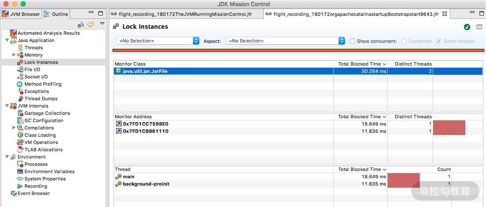
JMC 录制结果 锁信息界面
5.文件和 Socket
文件和 Socket 界面能够监控对 I/O 的读写，界面一目了然。如果你的应用 I/O 操作比较繁重，比如日志打印比较多、网络读写频繁，就可以在这里监控到相应的信息，并能够和执行栈关联起来。

JMC 录制结果 文件和 Socket 界面
6.方法调用
这个和 jvisualvm 的功能类似，展示的是方法调用信息和排行。从这里可以看到一些高耗时方法和热点方法。

JMC 录制结果 方法调用
7.垃圾回收
如果垃圾回收过于频繁，就会影响应用的性能。JFR 对垃圾回收进行了详细的记录，比如什么时候发生了垃圾回收，用的什么垃圾回收器，每次垃圾回收的耗时，甚至是什么原因引起的等问题，都可以在这里看到。

JMC 录制结果 垃圾回收
8.JIT
JIT 编译后的代码，执行速度会特别快，但它需要一个编译过程。编译界面显示了详细的 JIT 编译过程信息，包括生成后的 CodeCache 大小、方法内联信息等。

JMC 录制结果 JIT 信息
9.TLAB
JVM 默认给每个线程开辟一个 buffer 区域，用来加速对象分配，这就是 TLAB（Thread Local Allocation Buffer）的概念。这个 buffer，就放在 Eden 区。
原理和 Java 语言中的 ThreadLocal 类似，能够避免对公共区的操作，可以减少一些锁竞争。如下图所示的界面，详细地显示了这个分配过程。

JMC 录制结果 TLAB 信息
在后面的课时中，我们会有多个使用此工具的分析案例。
Arthas —— 获取单个请求的调用链耗时
Arthas 是一个 Java 诊断工具，可以排查内存溢出、CPU 飙升、负载高等内容，可以说是一个 jstack、jmap 等命令的大集合。

Arthas 启动界面
Arthas 支持很多命令，我们以 trace 命令为例。
有时候，我们统计到某个接口的耗时非常高，但又无法找到具体原因时，就可以使用这个 trace 命令。该命令会从方法执行开始记录整个链路上的执行情况，然后统计每个节点的性能开销，最终以树状打印，很多性能问题一眼就能看出来。
下面就是一个执行结果示例。
$ trace demo.MathGame run
Press Q or Ctrl+C to abort.
Affect(class-cnt:1 , method-cnt:1) cost in 28 ms.
`---ts=2019-12-04 00:45:08;thread_name=main;id=1;is_daemon=false;priority=5;TCCL=sun.misc.Launcher$AppClassLoader@3d4eac69
`---[0.617465ms] demo.MathGame:run()
`---[0.078946ms] demo.MathGame:primeFactors() #24 [throws Exception]
`---ts=2019-12-04 00:45:09;thread_name=main;id=1;is_daemon=false;priority=5;TCCL=sun.misc.Launcher$AppClassLoader@3d4eac69
`---[1.276874ms] demo.MathGame:run()
`---[0.03752ms] demo.MathGame:primeFactors() #24 [throws Exception]
我们在后面的课时中，也会有实例来演示如何找到问题发生的具体原因。
wrk —— 获取 Web 接口的性能数据
wrk（点击进入 GitHub 网站查看）是一款 HTTP 压测工具，和 ab 命令类似，它也是一个命令行工具。
我们先来看一下它的执行结果。
Running 30s test @ http://127.0.0.1:8080/index.html
12 threads and 400 connections
Thread Stats Avg Stdev Max +/- Stdev
Latency 635.91us 0.89ms 12.92ms 93.69%
Req/Sec 56.20k 8.07k 62.00k 86.54%
22464657 requests in 30.00s, 17.76GB read
Requests/sec: 748868.53
Transfer/sec: 606.33MB
可以看到，wrk 统计了常见的性能指标，对 Web 服务性能测试非常有用。同时，wrk 支持 Lua 脚本，用来控制 setup、init、delay、request、response 等函数，可以更好地模拟用户请求。
小结
为了获取更多性能数据，我们在本课时介绍了以下 5 款工具。
- nmon 获取系统性能数据；
- jvisualvm 获取 JVM 性能数据；
- jmc 获取 Java 应用详细性能数据；
- arthas 获取单个请求的调用链耗时；
- wrk 获取 Web 接口的性能数据。
可以看出，这些工具有偏低层的、有偏应用的、有偏统计的、有偏细节的，在定位性能问题时，你需要灵活地使用这些工具，既从全貌上掌握应用的属性，也从细节上找到性能的瓶颈，对应用性能进行全方位的掌控。
这些工具能够很好地帮助我们找到系统的瓶颈点，那么对代码进行优化时，如何分析优化效果呢？又如何对代码片段进行快速、专业的测试呢？下一课时，我将介绍“基准测试 JMH”，来解答以上问题。
05 工具实践：基准测试 JMH，精确测量方法性能
上一课时，我们了解到一些外部工具可以获取系统的性能数据。
但有时候，我们想要测量某段具体代码的性能情况，这时经常会写一些统计执行时间的代码，这些代码穿插在我们的逻辑中，进行一些简单的计时运算。比如下面这几行：
long start = System.currentTimeMillis();
//logic
long cost = System.currentTimeMillis() - start;
System.out.println("Logic cost : " + cost);
可惜的是，这段代码的统计结果，并不一定准确。举个例子来说，JVM 在执行时，会对一些代码块，或者一些频繁执行的逻辑，进行 JIT 编译和内联优化，在得到一个稳定的测试结果之前，需要先循环上万次进行预热。预热前和预热后的性能差别非常大。
另外，从 01 课时我们就知道，评估性能，有很多的指标，如果这些指标数据，每次都要手工去算的话，那肯定是枯燥乏味且低效的。
JMH—基准测试工具
JMH（the Java Microbenchmark Harness）就是这样一个能做基准测试的工具。如果你通过 04 课时介绍的一系列外部工具，定位到了热点代码，要测试它的性能数据，评估改善情况，就可以交给 JMH。它的测量精度非常高，可达纳秒级别。
JMH 已经在 JDK 12中被包含，其他版本的需要自行引入 maven，坐标如下：
<dependencies>
<dependency>
<groupId>org.openjdk.jmh</groupId>
<artifactId>jmh-core</artifactId>
<version>1.23</version>
</dependency>
<dependency>
<groupId>org.openjdk.jmh</groupId>
<artifactId>jmh-generator-annprocess</artifactId>
<version>1.23</version>
<scope>provided</scope>
</dependency>
</dependencies>
下面，我们介绍一下这个工具的使用。
JMH 是一个 jar 包，它和单元测试框架 JUnit 非常像，可以通过注解进行一些基础配置。这部分配置有很多是可以通过 main 方法的 OptionsBuilder 进行设置的。

上图是一个典型的 JMH 程序执行的内容。通过开启多个进程，多个线程，先执行预热，然后执行迭代，最后汇总所有的测试数据进行分析。在执行前后，还可以根据粒度处理一些前置和后置操作。
一段简单的 JMH 代码如下所示：
@BenchmarkMode(Mode.Throughput)
@OutputTimeUnit(TimeUnit.MILLISECONDS)
@State(Scope.Thread)
@Warmup(iterations = 3, time = 1, timeUnit = TimeUnit.SECONDS)
@Measurement(iterations = 5, time = 1, timeUnit = TimeUnit.SECONDS)
@Fork(1)
@Threads(2)
public class BenchmarkTest {
@Benchmark
public long shift() {
long t = 455565655225562L;
long a = 0;
for (int i = 0; i < 1000; i++) {
a = t >> 30;
}
return a;
}
@Benchmark
public long div() {
long t = 455565655225562L;
long a = 0;
for (int i = 0; i < 1000; i++) {
a = t / 1024 / 1024 / 1024;
}
return a;
}
public static void main(String[] args) throws Exception {
Options opts = new OptionsBuilder()
.include(BenchmarkTest.class.getSimpleName())
.resultFormat(ResultFormatType.JSON)
.build();
new Runner(opts).run();
}
}
下面，我们逐一介绍一下比较关键的注解和参数。
关键注解
1. @Warmup
样例如下：
@Warmup(
iterations = 5,
time = 1,
timeUnit = TimeUnit.SECONDS)
我们不止一次提到预热 warmup 这个注解，可以用在类或者方法上，进行预热配置。可以看到，它有几个配置参数：
- timeUnit：时间的单位，默认的单位是秒；
- iterations：预热阶段的迭代数；
- time：每次预热的时间；
- batchSize：批处理大小，指定了每次操作调用几次方法。
上面的注解，意思是对代码预热总计 5 秒（迭代 5 次，每次一秒）。预热过程的测试数据，是不记录测量结果的。
我们可以看一下它执行的效果：
# Warmup: 3 iterations, 1 s each
# Warmup Iteration 1: 0.281 ops/ns
# Warmup Iteration 2: 0.376 ops/ns
# Warmup Iteration 3: 0.483 ops/ns
一般来说，基准测试都是针对比较小的、执行速度相对较快的代码块，这些代码有很大的可能性被 JIT 编译、内联，所以在编码时保持方法的精简，是一个好的习惯。具体优化过程，我们将在 18 课时介绍。
说到预热，就不得不提一下在分布式环境下的服务预热。在对服务节点进行发布的时候，通常也会有预热过程，逐步放量到相应的服务节点，直到服务达到最优状态。如下图所示，负载均衡负责这个放量过程，一般是根据百分比进行放量。

2. @Measurement
样例如下：
@Measurement(
iterations = 5,
time = 1,
timeUnit = TimeUnit.SECONDS)
Measurement 和 Warmup 的参数是一样的，不同于预热，它指的是真正的迭代次数。
我们能够从日志中看到这个执行过程：
# Measurement: 5 iterations, 1 s each
Iteration 1: 1646.000 ns/op
Iteration 2: 1243.000 ns/op
Iteration 3: 1273.000 ns/op
Iteration 4: 1395.000 ns/op
Iteration 5: 1423.000 ns/op
虽然经过预热之后，代码都能表现出它的最优状态，但一般和实际应用场景还是有些出入。如果你的测试机器性能很高，或者你的测试机资源利用已经达到了极限，都会影响测试结果的数值。
所以，通常情况下，我都会在测试时，给机器充足的资源，保持一个稳定的环境。在分析结果时，也会更加关注不同代码实现方式下的性能差异 ，而不是测试数据本身。
3. @BenchmarkMode
此注解用来指定基准测试类型，对应 Mode 选项，用来修饰类和方法都可以。这里的 value，是一个数组，可以配置多个统计维度。比如：
@BenchmarkMode({Throughput,Mode.AverageTime})，统计的就是吞吐量和平均执行时间两个指标。
所谓的模式，其实就是我们第 01 课时里说的一些指标，在 JMH 中，可以分为以下几种：
- Throughput： 整体吞吐量，比如 QPS，单位时间内的调用量等；
- AverageTime： 平均耗时，指的是每次执行的平均时间。如果这个值很小不好辨认，可以把统计的单位时间调小一点；
- SampleTime： 随机取样，这和我们在第一课时里聊到的 TP 值是一个概念；
- SingleShotTime： 如果你想要测试仅仅一次的性能，比如第一次初始化花了多长时间，就可以使用这个参数，其实和传统的 main 方法没有什么区别；
- All： 所有的指标，都算一遍，你可以设置成这个参数看下效果。
我们拿平均时间，看一下一个大体的执行结果：
Result "com.github.xjjdog.tuning.BenchmarkTest.shift":
2.068 ±(99.9%) 0.038 ns/op [Average]
(min, avg, max) = (2.059, 2.068, 2.083), stdev = 0.010
CI (99.9%): [2.030, 2.106] (assumes normal distribution)
由于我们声明的时间单位是纳秒，本次 shift 方法的平均响应时间就是 2.068 纳秒。
我们也可以看下最终的耗时时间：
Benchmark Mode Cnt Score Error Units
BenchmarkTest.div avgt 5 2.072 ± 0.053 ns/op
BenchmarkTest.shift avgt 5 2.068 ± 0.038 ns/op
由于是平均数，这里的 Error 值的是误差（或者波动）的意思。
可以看到，在衡量这些指标的时候，都有一个时间维度，它就是通过 @OutputTimeUnit 注解进行配置的。
这个就比较简单了，它指明了基准测试结果的时间类型。可用于类或者方法上，一般选择秒、毫秒、微秒，纳秒那是针对的速度非常快的方法。
举个例子，@BenchmarkMode(Mode.Throughput) 和 @OutputTimeUnit(TimeUnit.MILLISECONDS) 进行组合，代表的就是每毫秒的吞吐量。
如下面的关于吞吐量的结果，就是以毫秒计算的：
Benchmark Mode Cnt Score Error Units
BenchmarkTest.div thrpt 5 482999.685 ± 6415.832 ops/ms
BenchmarkTest.shift thrpt 5 480599.263 ± 20752.609 ops/ms
OutputTimeUnit 注解同样可以修饰类或者方法，通过更改时间级别，可以获取更加易读的结果。
4. @Fork
fork 的值一般设置成 1，表示只使用一个进程进行测试；如果这个数字大于 1，表示会启用新的进程进行测试；但如果设置成 0，程序依然会运行，不过是这样是在用户的 JVM 进程上运行的，可以看下下面的提示，但不推荐这么做。
# Fork: N/A, test runs in the host VM
# *** WARNING: Non-forked runs may silently omit JVM options, mess up profilers, disable compiler hints, etc. ***
# *** WARNING: Use non-forked runs only for debugging purposes, not for actual performance runs. ***
那么 fork 到底是在进程还是线程环境里运行呢？
我们追踪一下 JMH 的源码，发现每个 fork 进程是单独运行在 Proccess 进程里的，这样就可以做完全的环境隔离，避免交叉影响。
它的输入输出流，通过 Socket 连接的模式，发送到我们的执行终端。

在这里分享一个小技巧。其实 fork 注解有一个参数叫作 jvmArgsAppend，我们可以通过它传递一些 JVM 的参数。
@Fork(value = 3, jvmArgsAppend = {"-Xmx2048m", "-server", "-XX:+AggressiveOpts"})
在平常的测试中，也可以适当增加 fork 数，来减少测试的误差。
5. @Threads
fork 是面向进程的，而 Threads 是面向线程的。指定了这个注解以后，将会开启并行测试。如果配置了 Threads.MAX，则使用和处理机器核数相同的线程数。
这个和我们平常编码中的习惯也是相同的，并不是说开的线程越多越好。线程多了，操作系统就需要耗费更多的时间在上下文切换上，造成了整体性能的下降。
6. @Group
@Group 注解只能加在方法上，用来把测试方法进行归类。如果你单个测试文件中方法比较多，或者需要将其归类，则可以使用这个注解。
与之关联的 @GroupThreads 注解，会在这个归类的基础上，再进行一些线程方面的设置。这两个注解都很少使用，除非是非常大的性能测试案例。
7. @State
@State 指定了在类中变量的作用范围，用于声明某个类是一个“状态”，可以用 Scope 参数用来表示该状态的共享范围。这个注解必须加在类上，否则提示无法运行。
Scope 有如下三种值。
- Benchmark ：表示变量的作用范围是某个基准测试类。
- Thread ：每个线程一份副本，如果配置了 Threads 注解，则每个 Thread 都拥有一份变量，它们互不影响。
- Group ：联系上面的 @Group 注解，在同一个 Group 里，将会共享同一个变量实例。
在 JMHSample04DefaultState 测试文件中，演示了变量 x 的默认作用范围是 Thread，关键代码如下：
@State(Scope.Thread)
public class JMHSample_04_DefaultState {
double x = Math.PI;
@Benchmark
public void measure() {
x++;
}
}
8. @Setup 和 @TearDown
和单元测试框架 JUnit 类似，@Setup 用于基准测试前的初始化动作，@TearDown 用于基准测试后的动作，来做一些全局的配置。
这两个注解，同样有一个 Level 值，标明了方法运行的时机，它有三个取值。
- Trial ：默认的级别，也就是 Benchmark 级别。
- Iteration ：每次迭代都会运行。
- Invocation ：每次方法调用都会运行，这个是粒度最细的。
如果你的初始化操作，是和方法相关的，那最好使用 Invocation 级别。但大多数场景是一些全局的资源，比如一个 Spring 的 DAO，那么就使用默认的 Trial，只初始化一次就可以。
9. @Param
@Param 注解只能修饰字段，用来测试不同的参数，对程序性能的影响。配合 @State注解，可以同时制定这些参数的执行范围。
代码样例如下：
@BenchmarkMode(Mode.AverageTime)
@OutputTimeUnit(TimeUnit.NANOSECONDS)
@Warmup(iterations = 5, time = 1, timeUnit = TimeUnit.SECONDS)
@Measurement(iterations = 5, time = 1, timeUnit = TimeUnit.SECONDS)
@Fork(1)
@State(Scope.Benchmark)
public class JMHSample_27_Params {
@Param({"1", "31", "65", "101", "103"})
public int arg;
@Param({"0", "1", "2", "4", "8", "16", "32"})
public int certainty;
@Benchmark
public boolean bench() {
return BigInteger.valueOf(arg).isProbablePrime(certainty);
}
public static void main(String[] args) throws RunnerException {
Options opt = new OptionsBuilder()
.include(JMHSample_27_Params.class.getSimpleName())
// .param("arg", "41", "42") // Use this to selectively constrain/override parameters
.build();
new Runner(opt).run();
}
}
值得注意的是，如果你设置了非常多的参数，这些参数将执行多次，通常会运行很长时间。比如参数 1 M 个，参数 2 N 个，那么总共要执行 M*N 次。
下面是一个执行结果的截图：
10. @CompilerControl
这可以说是一个非常有用的功能了。
Java 中方法调用的开销是比较大的，尤其是在调用量非常大的情况下。拿简单的getter/setter 方法来说，这种方法在 Java 代码中大量存在。我们在访问的时候，就需要创建相应的栈帧，访问到需要的字段后，再弹出栈帧，恢复原程序的执行。
如果能够把这些对象的访问和操作，纳入目标方法的调用范围之内，就少了一次方法调用，速度就能得到提升，这就是方法内联的概念。如下图所示，代码经过 JIT 编译之后，效率会有大的提升。
这个注解可以用在类或者方法上，能够控制方法的编译行为，常用的有 3 种模式：
强制使用内联（INLINE），禁止使用内联（DONT_INLINE），甚至是禁止方法编译（EXCLUDE）等。
将结果图形化
使用 JMH 测试的结果，可以二次加工，进行图形化展示。结合图表数据，更加直观。通过运行时，指定输出的格式文件，即可获得相应格式的性能测试结果。
比如下面这行代码，就是指定输出 JSON 格式的数据：
Options opt = new OptionsBuilder()
.resultFormat(ResultFormatType.JSON)
.build();
1. JMH 支持 5 种格式结果
- TEXT 导出文本文件。
- CSV 导出 csv 格式文件。
- SCSV 导出 scsv 等格式的文件。
- JSON 导出成 json 文件。
- LATEX 导出到 latex，一种基于 ΤΕΧ 的排版系统。
一般来说，我们导出成 CSV 文件，直接在 Excel 中操作，生成如下相应的图形就可以了。

2. 结果图形化制图工具
JMH Visualizer
这里有一个开源的项目，通过导出 json 文件，上传至 JMH Visualizer（点击链接跳转），可得到简单的统计结果。由于很多操作需要鼠标悬浮在上面进行操作，所以个人认为它的展示方式并不是很好。
JMH Visual Chart
相比较而言， JMH Visual Chart（点击链接跳转）这个工具，就相对直观一些。

meta-chart
一个通用的 在线图表生成器（点击链接跳转），导出 CSV 文件后，做适当处理，即可导出精美图像。

像 Jenkins 等一些持续集成工具，也提供了相应的插件，用来直接显示这些测试结果。
小结
本课时主要介绍了 基准测试工具— JMH，官方的 JMH 有非常丰富的示例，比如伪共享（FalseSharing）的影响等高级话题。我已经把它放在了 Gitee（点击链接跳转）上，你可以将其导入至 Idea 编辑器进行测试。
JMH 这个工具非常好用，它可以使用确切的测试数据，来支持我们的分析结果。一般情况下，如果定位到热点代码，就需要使用基准测试工具进行专项优化，直到性能有了显著的提升。
接下来的课程，将涉及对一些性能问题细节的验证，也会使用 JMH 进行进一步的分析。
06 案例分析：缓冲区如何让代码加速
本课时将详细介绍“缓冲”这个优化手段，之前在 02 课时的复用优化中便提到过“缓冲”，你可以回看复习一下。
深入理解缓冲的本质
缓冲（Buffer）通过对数据进行暂存，然后批量进行传输或者操作，多采用顺序方式，来缓解不同设备之间次数频繁但速度缓慢的随机读写。
你可以把缓冲区，想象成一个蓄水池。放水的水龙头一直开着，如果池子里有水，它就以恒定的速度流淌，不需要暂停；供水的水龙头速度却不确定，有时候会快一些，有时候会特别慢。它通过判断水池里水的状态，就可以自由控制进水的速度。
或者再想象一下包饺子的过程，包馅的需要等着擀皮的。如果擀皮的每擀一个就交给包馅的，速度就会很慢；但如果中间放一个盆子，擀皮的只管往里扔，包馅的只管从盆里取，这个过程就快得多。许多工厂流水线也经常使用这种方法，可见“缓冲”这个理念的普及性和实用性。
从宏观上来说，JVM 的堆就是一个大的缓冲区，代码不停地在堆空间中生产对象，而垃圾回收器进程则在背后默默地进行垃圾回收。
通过上述比喻和释意，你可以发现缓冲区的好处：
- 缓冲双方能各自保持自己的操作节奏，操作处理顺序也不会打乱，可以 one by one 顺序进行；
- 以批量的方式处理，减少网络交互和繁重的 I/O 操作，从而减少性能损耗；
- 优化用户体验，比如常见的音频/视频缓冲加载，通过提前缓冲数据，达到流畅的播放效果。
缓冲在 Java 语言中被广泛应用，在 IDEA 中搜索 Buffer，可以看到长长的类列表，其中最典型的就是文件读取和写入字符流。

文件读写流
接下来，我会以文件读取和写入字符流为例进行讲解。
Java 的 I/O 流设计，采用的是装饰器模式，当需要给类添加新的功能时，就可以将被装饰者通过参数传递到装饰者，封装成新的功能方法。下图是装饰器模式的典型示意图，就增加功能来说，装饰模式比生成子类更为灵活。

在读取和写入流的 API 中，BufferedInputStream 和 BufferedReader 可以加快读取字符的速度，BufferedOutputStream 和 BufferedWriter 可以加快写入的速度。
下面是直接读取文件的代码实现：
int result = 0;
try (Reader reader = new FileReader(FILE_PATH)) {
int value;
while ((value = reader.read()) != -1) {
result += value;
}
}
return result;
要使用缓冲方式读取，只需要将 FileReader 装饰一下即可：
int result = 0;
try (Reader reader = new BufferedReader(new FileReader(FILE_PATH))) {
int value;
while ((value = reader.read()) != -1) {
result += value;
}
}
return result;
我们先看一下与之类似的，BufferedInputStream 类的具体实现方法：
//代码来自JDK
public synchronized int read() throws IOException {
if (pos >= count) {
fill();
if (pos >= count)
return -1;
}
return getBufIfOpen()[pos++] & 0xff;
}
当缓冲区的内容读取完毕，将尝试使用 fill 函数把输入流读入缓冲区：
//代码来自JDK
private void fill() throws IOException {
byte[] buffer = getBufIfOpen();
if (markpos < 0)
pos = 0; /* no mark: throw away the buffer */
else if (pos >= buffer.length) /* no room left in buffer */
if (markpos > 0) { /* can throw away early part of the buffer */
int sz = pos - markpos;
System.arraycopy(buffer, markpos, buffer, 0, sz);
pos = sz;
markpos = 0;
} else if (buffer.length >= marklimit) {
markpos = -1; /* buffer got too big, invalidate mark */
pos = 0; /* drop buffer contents */
} else if (buffer.length >= MAX_BUFFER_SIZE) {
throw new OutOfMemoryError("Required array size too large");
} else { /* grow buffer */
int nsz = (pos <= MAX_BUFFER_SIZE - pos) ?
pos * 2 : MAX_BUFFER_SIZE;
if (nsz > marklimit)
nsz = marklimit;
byte nbuf[] = new byte[nsz];
System.arraycopy(buffer, 0, nbuf, 0, pos);
if (!bufUpdater.compareAndSet(this, buffer, nbuf)) {
// Can't replace buf if there was an async close.
// Note: This would need to be changed if fill()
// is ever made accessible to multiple threads.
// But for now, the only way CAS can fail is via close.
// assert buf == null;
throw new IOException("Stream closed");
}
buffer = nbuf;
}
count = pos;
int n = getInIfOpen().read(buffer, pos, buffer.length - pos);
if (n > 0)
count = n + pos;
}
程序会调整一些读取的位置，并对缓冲区进行位置更新，然后使用被装饰的 InputStream 进行数据读取：
int n = getInIfOpen().read(buffer, pos, buffer.length - pos);
那么为什么要这么做呢？直接读写不行吗？
这是因为：字符流操作的对象，一般是文件或者 Socket，要从这些缓慢的设备中，通过频繁的交互获取数据，效率非常慢；而缓冲区的数据是保存在内存中的，能够显著地提升读写速度。
既然好处那么多，为什么不把所有的数据全部读到缓冲区呢？
这就是一个权衡的问题，缓冲区开得太大，会增加单次读写的时间，同时内存价格很高，不能无限制使用，缓冲流的默认缓冲区大小是 8192 字节，也就是 8KB，算是一个比较折中的值。
这好比搬砖，如果一块一块搬，时间便都耗费在往返路上了；但若给你一个小推车，往返的次数便会大大降低，效率自然会有所提升。
下图是使用 FileReader 和 BufferedReader 读取文件的 JMH 对比（相关代码见仓库），可以看到，使用了缓冲，读取效率有了很大的提升（暂未考虑系统文件缓存）。

日志缓冲
日志是程序员们最常打交道的地方。在高并发应用中，即使对日志进行了采样，日志数量依旧惊人，所以选择高速的日志组件至关重要。
SLF4J 是 Java 里标准的日志记录库，它是一个允许你使用任何 Java 日志记录库的抽象适配层，最常用的实现是 Logback，支持修改后自动 reload，它比 Java 自带的 JUL 还要流行。
Logback 性能也很高，其中一个原因就是异步日志，它在记录日志时，使用了一个缓冲队列，当缓冲的内容达到一定的阈值时，才会把缓冲区的内容写到文件里。使用异步日志有两个考虑：
- 同步日志的写入，会阻塞业务，导致服务接口的耗时增加；
- 日志写入磁盘的代价是昂贵的，如果每产生一条日志就写入一次，CPU 会花很多时间在磁盘 I/O 上。
Logback 的异步日志也比较好配置，我们需要在正常配置的基础上，包装一层异步输出的逻辑（详见仓库）。
<appender name ="ASYNC" class= "ch.qos.logback.classic.AsyncAppender">
<discardingThreshold >0</discardingThreshold>
<queueSize>512</queueSize>
<!--这里指定了一个已有的Appender-->
<appender-ref ref ="FILE"/>
</appender>

如上图，异步日志输出之后，日志信息将暂存在 ArrayBlockingQueue 列表中，后台会有一个 Worker 线程不断地获取缓冲区内容，然后写入磁盘中。
上图中有三个关键参数：
- queueSize，代表了队列的大小，默认是256。如果这个值设置的太大，大日志量下突然断电，会丢掉缓冲区的内容；
- maxFlushTime，关闭日志上下文后，继续执行写任务的时间，这是通过调用 Thread 类的 join 方法来实现的（worker.join(maxFlushTime)）；
- discardingThreshold，当 queueSize 快达到上限时，可以通过配置，丢弃一些级别比较低的日志，这个值默认是队列长度的 80%；但若你担心可能会丢失业务日志，则可以将这个值设置成 0，表示所有的日志都要打印。
缓冲区优化思路
毫无疑问缓冲区是可以提高性能的，但它通常会引入一个异步的问题，使得编程模型变复杂。
通过文件读写流和 Logback 两个例子，我们来看一下对于缓冲区设计的一些常规操作。
如下图所示，资源 A 读取或写入一些操作到资源 B，这本是一个正常的操作流程，但由于中间插入了一个额外的存储层，所以这个流程被生生截断了，这时就需要你手动处理被截断两方的资源协调问题。

根据资源的不同，对正常业务进行截断后的操作，分为同步操作和异步操作。
1.同步操作
同步操作的编程模型相对简单，在一个线程中就可完成，你只需要控制缓冲区的大小，并把握处理的时机。比如，缓冲区大小达到阈值，或者缓冲区的元素在缓冲区的停留时间超时，这时就会触发批量操作。
由于所有的操作又都在单线程，或者同步方法块中完成，再加上资源 B 的处理能力有限，那么很多操作就会阻塞并等待在调用线程上。比如写文件时，需要等待前面的数据写入完毕，才能处理后面的请求。

2.异步操作
异步操作就复杂很多。
缓冲区的生产者一般是同步调用，但也可以采用异步方式进行填充，一旦采用异步操作，就涉及缓冲区满了以后，生产者的一些响应策略。
此时，应该将这些策略抽象出来，根据业务的属性选择，比如直接抛弃、抛出异常，或者直接在用户的线程进行等待。你会发现它与线程池的饱和策略是类似的，这部分的详细概念将在 12 课时讲解。
许多应用系统还会有更复杂的策略，比如在用户线程等待，设置一个超时时间，以及成功进入缓冲区之后的回调函数等。
对缓冲区的消费，一般采用开启线程的方式，如果有多个线程消费缓冲区，还会存在信息同步和顺序问题。

3.Kafka缓冲区示例
这里以一个常见的面试题来讲解上面的知识点：Kafka 的生产者，有可能会丢数据吗？

如图，要想解答这个问题，需要先了解 Kafka 对生产者的一些封装，其中有一个对性能影响非常大的点，就是缓冲。
生产者会把发送到同一个 partition 的多条消息，封装在一个 batch（缓冲区）中。当 batch 满了（参数 batch.size），或者消息达到了超时时间（参数 linger.ms），缓冲区中的消息就会被发送到 broker 上。
这个缓冲区默认是 16KB，如果生产者的业务突然断电，这 16KB 数据是没有机会发送出去的。此时，就造成了消息丢失。
解决的办法有两种：
- 把缓冲区设置得非常小，此时消息会退化成单条发送，这会严重影响性能；
- 消息发送前记录一条日志，消息发送成功后，通过回调再记录一条日志，通过扫描生成的日志，就可以判断哪些消息丢失了。
另外一个面试的问题是：Kafka 生产者会影响业务的高可用吗？
这同样和生产者的缓冲区有关。缓冲区大小毕竟是有限制的，如果消息产生得过快，或者生产者与 broker 节点之间有网络问题，缓冲区就会一直处于 full 的状态。此时，有新的消息到达，会如何处理呢？
通过配置生产者的超时参数和重试次数，可以让新的消息一直阻塞在业务方。一般来说，这个超时值设置成 1 秒就已经够大了，有的应用在线上把超时参数配置得非常大，比如 1 分钟，就造成了用户的线程迅速占满，整个业务不能再接受新的请求。
4.其他做法
使用缓冲区来提升性能的做法非常多，下面再举几个例子：
- StringBuilder 和 StringBuffer，通过将要处理的字符串缓冲起来，最后完成拼接，提高字符串拼接的性能；
- 操作系统在写入磁盘，或者网络 I/O 时，会开启特定的缓冲区，来提升信息流转的效率。通常可使用 flush 函数强制刷新数据，比如通过调整 Socket 的参数 SO_SNDBUF 和 SO_RCVBUF 提高网络传输性能；
- MySQL 的 InnoDB 引擎，通过配置合理的 innodb_buffer_pool_size，减少换页，增加数据库的性能；
- 在一些比较底层的工具中，也会变相地用到缓冲。比如常见的 ID 生成器，使用方通过缓冲一部分 ID 段，就可以避免频繁、耗时的交互。
5.注意事项
虽然缓冲区可以帮我们大大地提高应用程序的性能，但同时它也有不少问题，在我们设计时，要注意这些异常情况。
其中，比较严重就是缓冲区内容的丢失。即使你使用 addShutdownHook 做了优雅关闭，有些情形依旧难以防范避免，比如机器突然间断电，应用程序进程突然死亡等。这时，缓冲区内未处理完的信息便会丢失，尤其金融信息，电商订单信息的丢失都是比较严重的。
所以，内容写入缓冲区之前，需要先预写日志，故障后重启时，就会根据这些日志进行数据恢复。在数据库领域，文件缓冲的场景非常多，一般都是采用 WAL 日志（Write-Ahead Logging）解决。对数据完整性比较严格的系统，甚至会通过电池或者 UPS 来保证缓冲区的落地。这就是性能优化带来的新问题，必须要解决。
小结
可以看到，缓冲区优化是对正常的业务流程进行截断，然后加入缓冲组件的一个操作，它分为同步和异步方式，其中异步方式的实现难度相对更高。
大多数组件，从操作系统到数据库，从 Java 的 API 到一些中间件，都可以通过设置一些参数，来控制缓冲区大小，从而取得较大的性能提升。但需要注意的是，某些极端场景（断电、异常退出、kill -9等）可能会造成数据丢失，若你的业务对此容忍度较低，那么你需要花更多精力来应对这些异常。
在我们面试的时候，除了考察大家对知识细节的掌握程度，还会考察总结能力，以及遇到相似问题的分析能力。大家在平常的工作中，也要多多总结，多多思考，窥一斑而知全貌。如此回答，必会让面试官眼前一亮。
07 案例分析：无处不在的缓存，高并发系统的法宝
在上一课时，我们介绍了“缓冲”，这一课时我将介绍“缓冲”的孪生兄弟“缓存”。
和缓冲类似，缓存可能是软件中使用最多的优化技术了，比如：在最核心的 CPU 中，就存在着多级缓存；为了消除内存和存储之间的差异，各种类似 Redis 的缓存框架更是层出不穷。
缓存的优化效果是非常好的，它既可以让原本载入非常缓慢的页面，瞬间秒开，也能让本是压力山大的数据库，瞬间清闲下来。
缓存，本质上是为了协调两个速度差异非常大的组件，如下图所示，通过加入一个中间层，将常用的数据存放在相对高速的设备中。
在我们平常的应用开发中，根据缓存所处的物理位置，一般分为进程内缓存和进程外缓存。
本课时我们主要聚焦在进程内缓存上，在 Java 中，进程内缓存，就是我们常说的堆内缓存。Spring 的默认实现里，就包含 Ehcache、JCache、Caffeine、Guava Cache 等。
Guava 的 LoadingCache
Guava 是一个常用的工具包，其中的 LoadingCache（下面简称 LC），是非常好用的堆内缓存工具。通过学习 LC 的结构，即可了解堆内缓存设计的一般思路。
缓存一般是比较昂贵的组件，容量是有限制的，设置得过小，或者过大，都会影响缓存性能：
- 缓存空间过小，就会造成高命中率的元素被频繁移出，失去了缓存的意义；
- 缓存空间过大，不仅浪费宝贵的缓存资源，还会对垃圾回收产生一定的压力。
通过 Maven，即可引入 guava 的 jar 包：
<dependency>
<groupId>com.google.guava</groupId>
<artifactId>guava</artifactId>
<version>29.0-jre</version>
</dependency>
下面介绍一下 LC 的常用操作：

1.缓存初始化
首先，我们可以通过下面的参数设置一下 LC 的大小。一般，我们只需给缓存提供一个上限。
- maximumSize 这个参数用来设置缓存池的最大容量，达到此容量将会清理其他元素；
- initialCapacity 默认值是 16，表示初始化大小；
- concurrencyLevel 默认值是 4，和初始化大小配合使用，表示会将缓存的内存划分成 4 个 segment，用来支持高并发的存取。
2.缓存操作
那么缓存数据是怎么放进去的呢？有两种模式：
- 使用 put 方法手动处理，比如，我从数据库里查询出一个 User 对象，然后手动调用代码进去；
- 主动触发（ 这也是 Loading 这个词的由来），通过提供一个 CacheLoader 的实现，就可以在用到这个对象的时候，进行延迟加载。
public static void main(String[] args) {
LoadingCache<String, String> lc = CacheBuilder
.newBuilder()
.build(new CacheLoader<String, String>() {
@Override
public String load(String key) throws Exception {
return slowMethod(key);
}
});
}
static String slowMethod(String key) throws Exception {
Thread.sleep(1000);
return key + ".result";
}
上面是主动触发的示例代码，你可以使用 get 方法获取缓存的值。比如，当我们执行 lc.get("a") 时，第一次会比较缓慢，因为它需要到数据源进行获取；第二次就瞬间返回了，也就是缓存命中了。具体时序可以参见下面这张图。
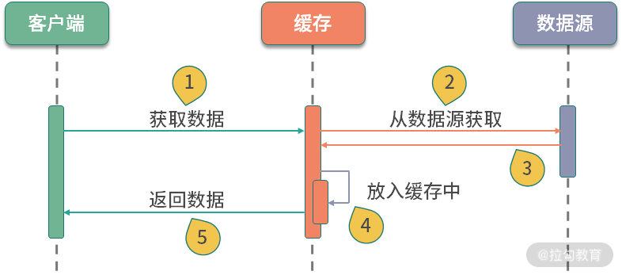
除了靠 LC 自带的回收策略，我们也可以手动删除某一个元素，这就是 invalidate 方法。当然，数据的这些删除操作，也是可以监听到的，只需要设置一个监听器就可以了，代码如下：
.removalListener(notification -> System.out.println(notification))
3.回收策略
缓存的大小是有限的，满了以后怎么办？这就需要回收策略进行处理，接下来我会向你介绍三种回收策略。
（1）第一种回收策略基于容量
这个比较好理解，也就是说如果缓存满了，就会按照 LRU 算法来移除其他元素。
（2）第二种回收策略基于时间
- 一种方式是，通过 expireAfterWrite 方法设置数据写入以后在某个时间失效；
- 另一种是，通过 expireAfterAccess 方法设置最早访问的元素，并优先将其删除。
（3）第三种回收策略基于 JVM 的垃圾回收
我们都知道对象的引用有强、软、弱、虚等四个级别，通过 weakKeys 等函数即可设置相应的引用级别。当 JVM 垃圾回收的时候，会主动清理这些数据。
关于第三种回收策略，有一个高频面试题：如果你同时设置了 weakKeys 和 weakValues函数，LC 会有什么反应？
答案：如果同时设置了这两个函数，它代表的意思是，当没有任何强引用，与 key 或者 value 有关系时，就删掉整个缓存项。这两个函数经常被误解。
4.缓存造成内存故障
LC 可以通过 recordStats 函数，对缓存加载和命中率等情况进行监控。
值得注意的是：LC 是基于数据条数而不是基于缓存物理大小的，所以如果你缓存的对象特别大，就会造成不可预料的内存占用。
围绕这点，我分享一个由于不正确使用缓存导致的常见内存故障。
大多数堆内缓存，都会将对象的引用设置成弱引用或软引用，这样内存不足时，可以优先释放缓存占用的空间，给其他对象腾出地方。这种做法的初衷是好的，但容易出现问题。
当你的缓存使用非常频繁，数据量又比较大的情况下，缓存会占用大量内存，如果此时发生了垃圾回收（GC），缓存空间会被释放掉，但又被迅速占满，从而会再次触发垃圾回收。如此往返，GC 线程会耗费大量的 CPU 资源，缓存也就失去了它的意义。
所以在这种情况下，把缓存设置的小一些，减轻 JVM 的负担，是一个很好的方法。
缓存算法
1.算法介绍
堆内缓存最常用的有 FIFO、LRU、LFU 这三种算法。
- FIFO
这是一种先进先出的模式。如果缓存容量满了，将会移除最先加入的元素。这种缓存实现方式简单，但符合先进先出的队列模式场景的功能不多，应用场景较少。
- LRU
LRU 是最近最少使用的意思，当缓存容量达到上限，它会优先移除那些最久未被使用的数据，LRU是目前最常用的缓存算法，稍后我们会使用 Java 的 API 简单实现一个。
- LFU
LFU 是最近最不常用的意思。相对于 LRU 的时间维度，LFU 增加了访问次数的维度。如果缓存满的时候，将优先移除访问次数最少的元素；而当有多个访问次数相同的元素时，则优先移除最久未被使用的元素。
2.实现一个 LRU 算法
Java 里面实现 LRU 算法可以有多种方式，其中最常用的就是 LinkedHashMap，这也是一个需要你注意的面试高频考点。
首先，我们来看一下 LinkedHashMap 的构造方法：
public LinkedHashMap(int initialCapacity,
float loadFactor,
boolean accessOrder)
accessOrder 参数是实现 LRU 的关键。当 accessOrder 的值为 true 时，将按照对象的访问顺序排序；当 accessOrder 的值为 false 时，将按照对象的插入顺序排序。我们上面提到过，按照访问顺序排序，其实就是 LRU。
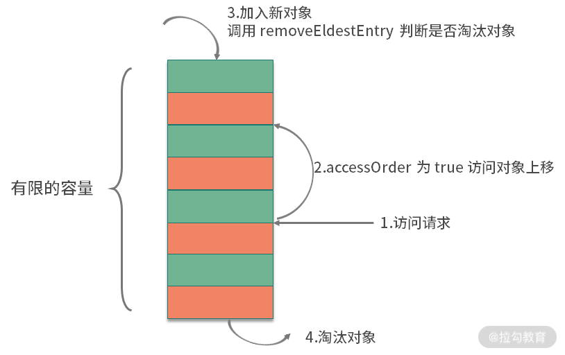
如上图，按照缓存的一般设计方式，和 LC 类似，当你向 LinkedHashMap 中添加新对象的时候，就会调用 removeEldestEntry 方法。这个方法默认返回 false，表示永不过期。我们只需要覆盖这个方法，当超出容量的时候返回 true，触发移除动作就可以了。关键代码如下：
public class LRU extends LinkedHashMap {
int capacity;
public LRU(int capacity) {
super(16, 0.75f, true);
this.capacity = capacity;
}
@Override
protected boolean removeEldestEntry(Map.Entry eldest) {
return size() > capacity;
}
}
相比较 LC，这段代码实现的功能是比较简陋的，它甚至不是线程安全的，但它体现了缓存设计的一般思路，是 Java 中最简单的 LRU 实现方式。
进一步加速
在 Linux 系统中，通过 free 命令，能够看到系统内存的使用状态。其中，有一块叫作 cached 的区域，占用了大量的内存空间。

如图所示，这个区域，其实就是存放了操作系统的文件缓存，当应用再次用到它的时候，就不用再到磁盘里走一圈，能够从内存里快速载入。
在文件读取的缓存方面，操作系统做得更多。由于磁盘擅长顺序读写，在随机读写的时候，效率很低，所以，操作系统使用了智能的预读算法（readahead），将数据从硬盘中加载到缓存中。
预读算法有三个关键点：
- 预测性，能够根据应用的使用数据，提前预测应用后续的操作目标；
- 提前，能够将这些数据提前加载到缓存中，保证命中率；
- 批量，将小块的、频繁的读取操作，合并成顺序的批量读取，提高性能。
预读技术一般都是比较智能的，能够覆盖大多数后续的读取操作。举个极端的例子，如果我们的数据集合比较小，访问频率又非常高，就可以使用完全载入的方式，来替换懒加载的方式。在系统启动的时候，将数据加载到缓存中。
缓存优化的一般思路
一般，缓存针对的主要是读操作。当你的功能遇到下面的场景时，就可以选择使用缓存组件进行性能优化：
- 存在数据热点，缓存的数据能够被频繁使用；
- 读操作明显比写操作要多；
- 下游功能存在着比较悬殊的性能差异，下游服务能力有限；
- 加入缓存以后，不会影响程序的正确性，或者引入不可预料的复杂性。
缓存组件和缓冲类似，也是在两个组件速度严重不匹配的时候，引入的一个中间层，但它们服务的目标是不同的：
- 缓冲，数据一般只使用一次，等待缓冲区满了，就执行 flush 操作；
- 缓存，数据被载入之后，可以多次使用，数据将会共享多次。
缓存最重要的指标就是命中率，有以下几个因素会影响命中率。
（1）缓存容量
缓存的容量总是有限制的，所以就存在一些冷数据的逐出问题。但缓存也不是越大越好，它不能明显挤占业务的内存。
（2）数据集类型
如果缓存的数据是非热点数据，或者是操作几次就不再使用的冷数据，那命中率肯定会低，缓存也会失去了它的作用。
（3）缓存失效策略
缓存算法也会影响命中率和性能，目前效率最高的算法是 Caffeine 使用的 W-TinyLFU 算法，它的命中率非常高，内存占用也更小。新版本的 spring-cache，已经默认支持 Caffeine。
下图展示了这个算法的性能，从官网的 github 仓库就可以找到 JMH 的测试代码。

推荐使用 Guava Cache 或者 Caffeine 作为堆内缓存解决方案，然后通过它们提供的一系列监控指标，来调整缓存的大小和内容，一般来说：
- 缓存命中率达到 50% 以上，作用就开始变得显著；
- 缓存命中率低于 10%，那就需要考虑缓存组件的必要性了。
引入缓存组件，能够显著提升系统性能，但也会引入新的问题。其中，最典型的也是面试高频问题：如何保证缓存与源数据的同步？关于这点，我们会在下一课时进行讲解。
小结
最后，我来总结一下本课时的知识要点。
我们先以 Guava 的 LoadingCache 为例，讲解了堆内缓存设计的一些思路；同时，介绍了一个因为缓存不合理利用所造成的内存故障，这些都是面试中的高频问题；然后又讲解了，三个常用的缓存算法 LRU、LFU、FIFO，并以 LinkedHashMap 为基础，实现了一个最简单的 LRU 缓存。
本课时还提到了使用预读或者提前载入等方式，来进一步加速应用的方法，readahead技术，在操作系统、数据库中使用非常多，性能提升也比较显著。
最后，我们提到可以通过利用缓存框架的一些监控数据，来调整缓存的命中率，要达到50% 的命中率才算有较好的效果。
接下来，我再简单举两个缓存应用的例子。
- 第一个是 HTTP 304 状态码，它是 Not Modified 的意思。 浏览器客户端会发送一个条件性的请求，服务端可以通过 If-Modified-Since 头信息判断缓冲的文件是否是最新的。如果是，那么客户端就直接使用缓存，不用进行再读取了。
- 另一个是关于 CDN，这是一种变相的缓存。 用户会从离它最近最快的节点，读取文件内容。如果这个节点没有缓存这个文件，那么 CDN 节点就会从源站拉取一份，下次有相同的读取请求时，就可以快速返回。
缓存的应用非常广泛，大家在平常的工作中，也可以尝试进行总结、类比。
08 案例分析：Redis 如何助力秒杀业务
在上一课时，我们以 Guava 的 LoadingCache 为例，介绍了堆内缓存的特点以及一些注意事项。同时，还了解了缓存使用的场景，这对分布式缓存来说，同样适用。
那什么叫分布式缓存呢？它其实是一种集中管理的思想。如果我们的服务有多个节点，堆内缓存在每个节点上都会有一份；而分布式缓存，所有的节点，共用一份缓存，既节约了空间，又减少了管理成本。
在分布式缓存领域，使用最多的就是 Redis。Redis 支持非常丰富的数据类型，包括字符串（string）、列表（list）、集合（set）、有序集合（zset）、哈希表（hash）等常用的数据结构。当然，它也支持一些其他的比如位图（bitmap）一类的数据结构。
说到 Redis，就不得不提一下另外一个分布式缓存 Memcached（以下简称 MC）。MC 现在已经很少用了，但面试的时候经常会问到它们之间的区别，这里简单罗列一下：
Redis 在互联网中，几乎是标配。我们接下来，先简单看一下 Redis 在 Spring 中是如何使用的，然后，再介绍一下在秒杀业务中，Redis是如何帮助我们承接瞬时流量的。
SpringBoot 如何使用 Redis
使用 SpringBoot 可以很容易地对 Redis 进行操作（完整代码见仓库）。Java 的 Redis的客户端，常用的有三个：jedis、redisson 和 lettuce，Spring 默认使用的是 lettuce。
lettuce 是使用 netty 开发的，操作是异步的，性能比常用的 jedis 要高；redisson 也是异步的，但它对常用的业务操作进行了封装，适合书写有业务含义的代码。
通过加入下面的 jar 包即可方便地使用 Redis。
<dependency>
<groupId>org.springframework.boot</groupId>
<artifactId>spring-boot-starter-data-redis</artifactId>
</dependency>
上面这种方式，我们主要是使用 RedisTemplate 这个类。它针对不同的数据类型，抽象了相应的方法组。
另外一种方式，就是使用 Spring 抽象的缓存包 spring-cache。它使用注解，采用 AOP的方式，对 Cache 层进行了抽象，可以在各种堆内缓存框架和分布式框架之间进行切换。这是它的 maven 坐标：
<dependency>
<groupId>org.springframework.boot</groupId>
<artifactId>spring-boot-starter-cache</artifactId>
</dependency>
与 spring-cache 类似的，还有阿里的 jetcache，都是比较好用的。
使用 spring-cache 有三个步骤：
- 在启动类上加入 @EnableCaching 注解；
- 使用 CacheManager 初始化要使用的缓存框架，使用 @CacheConfig 注解注入要使用的资源；
- 使用 @Cacheable 等注解对资源进行缓存。
我们这里使用的是 RedisCacheManager，由于现在只有这一个初始化实例，第二个步骤是可以省略的。
针对缓存操作的注解，有三个：
- @Cacheable 表示如果缓存系统里没有这个数值，就将方法的返回值缓存起来；
- @CachePut 表示每次执行该方法，都把返回值缓存起来；
- @CacheEvict 表示执行方法的时候，清除某些缓存值。
对于秒杀系统来说，仅仅使用这三个注解是有局限性的，需要使用更加底层的 API，比如 RedisTemplate，来完成逻辑开发，下面就来介绍一些比较重要的功能。
秒杀业务介绍
秒杀，是对正常业务流程的考验。因为它会产生突发流量，平常一天的请求，可能就集中在几秒内就要完成。比如，京东的某些抢购，可能库存就几百个，但是瞬时进入的流量可能是几十上百万。
如果参与秒杀的人，等待很长时间，体验就非常差，想象一下拥堵的高速公路收费站，就能理解秒杀者的心情。同时，被秒杀的资源会成为热点，发生并发争抢的后果。比如 12306 的抢票，如果单纯使用数据库来接受这些请求，就会产生严重的锁冲突，这也是秒杀业务难的地方。
大家可以回忆一下上一课时的内容，此时，秒杀前端需求与数据库之间的速度是严重不匹配的，而且秒杀的资源是热点资源。这种场景下，采用缓存是非常合适的。
处理秒杀业务有三个绝招：
- 第一，选择速度最快的内存作为数据写入；
- 第二，使用异步处理代替同步请求；
- 第三，使用分布式横向扩展。
下面，我们就来看一下 Redis 是如何助力秒杀的。
Lua 脚本完成秒杀
一个秒杀系统是非常复杂的，一般来说，秒杀可以分为一下三个阶段：
- 准备阶段，会提前载入一些必需的数据到缓存中，并提前预热业务数据，用户会不断刷新页面，来查看秒杀是否开始；
- 抢购阶段，就是我们通常说的秒杀，会产生瞬时的高并发流量，对资源进行集中操作；
- 结束清算，主要完成数据的一致性，处理一些异常情况和回仓操作。
下面，我将介绍一下最重要的秒杀阶段。
我们可以设计一个 Hash 数据结构，来支持库存的扣减。
seckill:goods:${goodsId}{
total: 100,
start: 0,
alloc:0
}
在这个 Hash 数据结构中，有以下三个重要部分：
- total 是一个静态值，表示要秒杀商品的数量，在秒杀开始前，会将这个数值载入到缓存中。
- start 是一个布尔值。秒杀开始前的值为 0；通过后台或者定时，将这个值改为 1，则表示秒杀开始。
- 此时，alloc 将会记录已经被秒杀的商品数量，直到它的值达到 total 的上限。
static final String goodsId = "seckill:goods:%s";
String getKey(String id) {
return String.format(goodsId, id);
}
public void prepare(String id, int total) {
String key = getKey(id);
Map<String, Integer> goods = new HashMap<>();
goods.put("total", total);
goods.put("start", 0);
goods.put("alloc", 0);
redisTemplate.opsForHash().putAll(key, goods);
}
秒杀的时候，首先需要判断库存，才能够对库存进行锁定。这两步动作并不是原子的，在分布式环境下，多台机器同时对 Redis 进行操作，就会发生同步问题。
为了解决同步问题，一种方式就是使用 Lua 脚本，把这些操作封装起来，这样就能保证原子性；另外一种方式就是使用分布式锁，分布式锁我们将在 13、14 课时介绍。
下面是一个调试好的 Lua 脚本，可以看到一些关键的比较动作，和 HINCRBY 命令，能够成为一个原子操作。
local falseRet = "0"
local n = tonumber(ARGV[1])
local key = KEYS[1]
local goodsInfo = redis.call("HMGET",key,"total","alloc")
local total = tonumber(goodsInfo[1])
local alloc = tonumber(goodsInfo[2])
if not total then
return falseRet
end
if total >= alloc + n then
local ret = redis.call("HINCRBY",key,"alloc",n)
return tostring(ret)
end
return falseRet
对应的秒杀代码如下，由于我们使用的是 String 的序列化方式，所以会把库存的扣减数量先转化为字符串，然后再调用 Lua 脚本。
public int secKill(String id, int number) {
String key = getKey(id);
Object alloc = redisTemplate.execute(script, Arrays.asList(key), String.valueOf(number));
return Integer.valueOf(alloc.toString());
}
执行仓库里的 testSeckill 方法。启动 1000 个线程对 100 个资源进行模拟秒杀，可以看到生成了 100 条记录，同时其他的线程返回的是 0，表示没有秒杀到。
缓存穿透、击穿和雪崩
抛开秒杀场景，我们再来看一下分布式缓存系统会存在的三大问题： 缓存穿透、缓存击穿和缓存雪崩 。
1.缓存穿透
第一个比较大的问题就是缓存穿透。这个概念比较好理解，和我们上一课时提到的命中率有关。如果命中率很低，那么压力就会集中在数据库持久层。
假如能找到相关数据，我们就可以把它缓存起来。但问题是，本次请求，在缓存和持久层都没有命中，这种情况就叫缓存的穿透。
举个例子，如上图，在一个登录系统中，有外部攻击，一直尝试使用不存在的用户进行登录，这些用户都是虚拟的，不能有效地被缓存起来，每次都会到数据库中查询一次，最后就会造成服务的性能故障。
解决这个问题有多种方案，我们来简单介绍一下。
第一种就是把空对象缓存起来。不是持久层查不到数据吗？那么我们就可以把本次请求的结果设置为 null，然后放入到缓存中。通过设置合理的过期时间，就可以保证后端数据库的安全。
缓存空对象会占用额外的缓存空间，还会有数据不一致的时间窗口，所以第二种方法就是针对大数据量的、有规律的键值，使用布隆过滤器进行处理。
一条记录存在与不存在，是一个 Bool 值，只需要使用 1 比特就可存储。布隆过滤器就可以把这种是、否操作，压缩到一个数据结构中。比如手机号，用户性别这种数据，就非常适合使用布隆过滤器。
2.缓存击穿
缓存击穿，指的也是用户请求落在数据库上的情况，大多数情况，是由于缓存时间批量过期引起的。
我们一般会对缓存中的数据，设置一个过期时间。如果在某个时刻从数据库获取了大量数据，并设置了同样的过期时间，它们将会在同一时刻失效，造成和缓存的击穿。
对于比较热点的数据，我们就可以设置它不过期；或者在访问的时候，更新它的过期时间；批量入库的缓存项，也尽量分配一个比较平均的过期时间，避免同一时间失效。
3.缓存雪崩
雪崩这个词看着可怕，实际情况也确实比较严重。缓存是用来对系统加速的，后端的数据库只是数据的备份，而不是作为高可用的备选方案。
当缓存系统出现故障，流量会瞬间转移到后端的数据库。过不了多久，数据库将会被大流量压垮挂掉，这种级联式的服务故障，可以形象地称为雪崩。
缓存的高可用建设是非常重要的。Redis 提供了主从和 Cluster 的模式，其中 Cluster 模式使用简单，每个分片也能单独做主从，可以保证极高的可用性。
另外，我们对数据库的性能瓶颈有一个大体的评估。如果缓存系统当掉，那么流向数据库的请求，就可以使用限流组件，将请求拦截在外面。
缓存一致性
引入缓存组件后，另外一个老大难的问题，就是缓存的一致性。
我们首先来看问题是怎么发生的。对于一个缓存项来说，常用的操作有四个：写入、更新、读取、删除。
- 写入：缓存和数据库是两个不同的组件，只要涉及双写，就存在只有一个写成功的可能性，造成数据不一致。
- 更新：更新的情况类似，需要更新两个不同的组件。
- 读取：读取要保证从缓存中读到的信息是最新的，是和数据库中的是一致的。
- 删除：当删除数据库记录的时候，如何把缓存中的数据也删掉？
由于业务逻辑大多数情况下，是比较复杂的。其中的更新操作，就非常昂贵，比如一个用户的余额，就是通过计算一系列的资产算出来的一个数。如果这些关联的资产，每个地方改动的时候，都去刷新缓存，那代码结构就会非常混乱，以至于无法维护。
我推荐使用触发式的缓存一致性方式，使用懒加载的方式，可以让缓存的同步变得非常简单：
- 当读取缓存的时候，如果缓存里没有相关数据，则执行相关的业务逻辑，构造缓存数据存入到缓存系统；
- 当与缓存项相关的资源有变动，则先删除相应的缓存项，然后再对资源进行更新，这个时候，即使是资源更新失败，也是没有问题的。
这种操作，除了编程模型简单，有一个明显的好处。我只有在用到这个缓存的时候，才把它加载到缓存系统中。如果每次修改 都创建、更新资源，那缓存系统中就会存在非常多的冷数据。
但这样还是有问题。接下来介绍的场景，也是面试中经常提及的问题。
我们上面提到的缓存删除动作，和数据库的更新动作，明显是不在一个事务里的。如果一个请求删除了缓存，同时有另外一个请求到来，此时发现没有相关的缓存项，就从数据库里加载了一份到缓存系统。接下来，数据库的更新操作也完成了，此时数据库的内容和缓存里的内容，就产生了不一致。
下面这张图，直观地解释了这种不一致的情况，此时，缓存读取 B 操作以及之后的读取操作，都会读到错误的缓存值。

在面试中，只要你把这个问题给点出来，面试官都会跷起大拇指。
可以使用分布式锁来解决这个问题，将缓存操作和数据库删除操作，与其他的缓存读操作，使用锁进行资源隔离即可。一般来说，读操作是不需要加锁的，它会在遇到锁的时候，重试等待，直到超时。
小结
本课时的内容有点多，但是非常重要，如果你参加过大型互联网公司的面试，会发现本课时有很多高频面试点，值得你反复揣摩。
本课时和上一课时，都是围绕着缓存展开的，它们之间有很多知识点也比较相似。对于分布式缓存来说，Redis 是现在使用最广泛的。我们先简单介绍了一下它和 Memcached 的一些区别，介绍了 SpringBoot 项目中 Redis 的使用方式，然后以秒杀场景为主，学习了库存扣减这一个核心功能的 Lua 代码。这段代码主要是把条件判断和扣减命令做成了原子性操作。
Redis 的 API 使用非常简单，速度也很快，但同时它也引入了很多问题。如果不能解决这些异常场景，那么 Redis 的价值就大打折扣，所以我们主要谈到了缓存的穿透、击穿以及雪崩的场景，并着重介绍了一下缓存的一致性和解决的思路。
下一小节，我将介绍一个与缓存非常类似的优化方法——对象的池化，用复用来增加运行效率，我们下节课见。
09 案例分析：池化对象的应用场景
在我们平常的编码中，通常会将一些对象保存起来，这主要考虑的是对象的创建成本。比如像线程资源、数据库连接资源或者 TCP 连接等，这类对象的初始化通常要花费比较长的时间，如果频繁地申请和销毁，就会耗费大量的系统资源，造成不必要的性能损失。
并且这些对象都有一个显著的特征，就是通过轻量级的重置工作，可以循环、重复地使用。这个时候，我们就可以使用一个虚拟的池子，将这些资源保存起来，当使用的时候，我们就从池子里快速获取一个即可。
在 Java 中，池化技术应用非常广泛，常见的就有数据库连接池、线程池等，本节课主讲连接池，线程池我们将在 12 课时进行介绍。
公用池化包 Commons Pool 2.0
我们首先来看一下 Java 中公用的池化包 Commons Pool 2.0，来了解一下对象池的一般结构。根据我们的业务需求，使用这套 API 能够很容易实现对象的池化管理。
GenericObjectPool 是对象池的核心类，通过传入一个对象池的配置和一个对象的工厂，即可快速创建对象池。
public GenericObjectPool(
final PooledObjectFactory<T> factory,
final GenericObjectPoolConfig<T> config)
Redis 的常用客户端 Jedis，就是使用 Commons Pool 管理连接池的，可以说是一个最佳实践。下图是 Jedis 使用工厂创建对象的主要代码块。对象工厂类最主要的方法就是makeObject，它的返回值是 PooledObject 类型，可以将对象使用 new DefaultPooledObject<>(obj) 进行简单包装返回。
我们再来介绍一下对象的生成过程，如下图，对象在进行获取时，将首先尝试从对象池里拿出一个，如果对象池中没有空闲的对象，就使用工厂类提供的方法，生成一个新的。

那对象是存在什么地方的呢？这个存储的职责，就是由一个叫作 LinkedBlockingDeque的结构来承担的，它是一个双向的队列。
接下来看一下 GenericObjectPoolConfig 的主要属性：
private int maxTotal = DEFAULT_MAX_TOTAL;
private int maxIdle = DEFAULT_MAX_IDLE;
private int minIdle = DEFAULT_MIN_IDLE;
private boolean lifo = DEFAULT_LIFO;
private boolean fairness = DEFAULT_FAIRNESS;
private long maxWaitMillis = DEFAULT_MAX_WAIT_MILLIS;
private long minEvictableIdleTimeMillis = DEFAULT_MIN_EVICTABLE_IDLE_TIME_MILLIS;
private long evictorShutdownTimeoutMillis = DEFAULT_EVICTOR_SHUTDOWN_TIMEOUT_MILLIS;
private long softMinEvictableIdleTimeMillis = DEFAULT_SOFT_MIN_EVICTABLE_IDLE_TIME_MILLIS;
private int numTestsPerEvictionRun = DEFAULT_NUM_TESTS_PER_EVICTION_RUN;
private EvictionPolicy<T> evictionPolicy = null; // Only 2.6.0 applications set this
private String evictionPolicyClassName = DEFAULT_EVICTION_POLICY_CLASS_NAME;
private boolean testOnCreate = DEFAULT_TEST_ON_CREATE;
private boolean testOnBorrow = DEFAULT_TEST_ON_BORROW;
private boolean testOnReturn = DEFAULT_TEST_ON_RETURN;
private boolean testWhileIdle = DEFAULT_TEST_WHILE_IDLE;
private long timeBetweenEvictionRunsMillis = DEFAULT_TIME_BETWEEN_EVICTION_RUNS_MILLIS;
private boolean blockWhenExhausted = DEFAULT_BLOCK_WHEN_EXHAUSTED;
参数很多，要想了解参数的意义，我们首先来看一下一个池化对象在整个池子中的生命周期。如下图所示，池子的操作主要有两个：一个是业务线程，一个是检测线程。

对象池在进行初始化时，要指定三个主要的参数：
- maxTotal 对象池中管理的对象上限
- maxIdle 最大空闲数
- minIdle 最小空闲数
其中 maxTotal 和业务线程有关，当业务线程想要获取对象时，会首先检测是否有空闲的对象。如果有，则返回一个；否则进入创建逻辑。此时，如果池中个数已经达到了最大值，就会创建失败，返回空对象。
对象在获取的时候，有一个非常重要的参数，那就是最大等待时间（maxWaitMillis），这个参数对应用方的性能影响是比较大的。该参数默认为 -1，表示永不超时，直到有对象空闲。
如下图，如果对象创建非常缓慢或者使用非常繁忙，业务线程会持续阻塞 （blockWhenExhausted 默认为 true），进而导致正常服务也不能运行。
一般面试官会问：你会把超时参数设置成多大呢？
我一般都会把最大等待时间，设置成接口可以忍受的最大延迟。比如，一个正常服务响应时间 10ms 左右，达到 1 秒钟就会感觉到卡顿，那么这个参数设置成 500~1000ms 都是可以的。超时之后，会抛出 NoSuchElementException 异常，请求会快速失败，不会影响其他业务线程，这种 Fail Fast 的思想，在互联网应用非常广泛。
带有evcit 字样的参数，主要是处理对象逐出的。池化对象除了初始化和销毁的时候比较昂贵，在运行时也会占用系统资源。比如，连接池会占用多条连接，线程池会增加调度开销等。业务在突发流量下，会申请到超出正常情况的对象资源，放在池子中。等这些对象不再被使用，我们就需要把它清理掉。
超出 minEvictableIdleTimeMillis 参数指定值的对象，就会被强制回收掉，这个值默认是 30 分钟；softMinEvictableIdleTimeMillis 参数类似，但它只有在当前对象数量大于 minIdle 的时候才会执行移除，所以前者的动作要更暴力一些。
还有 4 个 test 参数：testOnCreate、testOnBorrow、testOnReturn、testWhileIdle，分别指定了在创建、获取、归还、空闲检测的时候，是否对池化对象进行有效性检测。
开启这些检测，能保证资源的有效性，但它会耗费性能，所以默认为 false。生产环境上，建议只将 testWhileIdle 设置为 true，并通过调整空闲检测时间间隔（timeBetweenEvictionRunsMillis），比如 1 分钟，来保证资源的可用性，同时也保证效率。
Jedis JMH 测试
使用连接池和不使用连接池，它们之间的性能差距到底有多大呢？下面是一个简单的 JMH 测试例子（见仓库），进行一个简单的 set 操作，为 redis 的 key 设置一个随机值。
@Fork(2)
@State(Scope.Benchmark)
@Warmup(iterations = 5, time = 1)
@Measurement(iterations = 5, time = 1)
@BenchmarkMode(Mode.Throughput)
public class JedisPoolVSJedisBenchmark {
JedisPool pool = new JedisPool("localhost", 6379);
@Benchmark
public void testPool() {
Jedis jedis = pool.getResource();
jedis.set("a", UUID.randomUUID().toString());
jedis.close();
}
@Benchmark
public void testJedis() {
Jedis jedis = new Jedis("localhost", 6379);
jedis.set("a", UUID.randomUUID().toString());
jedis.close();
}
...
将测试结果使用 meta-chart 作图，展示结果如下图所示，可以看到使用了连接池的方式，它的吞吐量是未使用连接池方式的 5 倍！
数据库连接池 HikariCP
HikariCP 源于日语“光”的意思（和光速一样快），它是 SpringBoot 中默认的数据库连接池。数据库是我们工作中经常使用到的组件，针对数据库设计的客户端连接池是非常多的，它的设计原理与我们在本课时开头提到的基本一致，可以有效地减少数据库连接创建、销毁的资源消耗。
同是连接池，它们的性能也是有差别的，下图是 HikariCP 官方的一张测试图，可以看到它优异的性能，官方的 JMH 测试代码见 Github，我也已经拷贝了一份到仓库中。
一般面试题是这么问的： HikariCP 为什么快呢？主要有三个方面：
- 它使用 FastList 替代 ArrayList，通过初始化的默认值，减少了越界检查的操作；
- 优化并精简了字节码，通过使用 Javassist，减少了动态代理的性能损耗，比如使用 invokestatic 指令代替 invokevirtual 指令；
- 实现了无锁的 ConcurrentBag，减少了并发场景下的锁竞争。
HikariCP 对性能的一些优化操作，是非常值得我们借鉴的，在之后的 16 课时，我们将详细分析几个优化场景。
数据库连接池同样面临一个最大值（maximumPoolSize）和最小值（minimumIdle）的问题。这里同样有一个非常高频的面试题：你平常会把连接池设置成多大呢？
很多同学认为，连接池的大小设置得越大越好，有的同学甚至把这个值设置成 1000 以上，这是一种误解。根据经验，数据库连接，只需要 20~50 个就够用了。具体的大小，要根据业务属性进行调整，但大得离谱肯定是不合适的。
HikariCP 官方是不推荐设置 minimumIdle 这个值的，它将被默认设置成和 maximumPoolSize 一样的大小。如果你的数据库Server端连接资源空闲较大，不妨也可以去掉连接池的动态调整功能。
另外，根据数据库查询和事务类型，一个应用中是可以配置多个数据库连接池的，这个优化技巧很少有人知道，在此简要描述一下。
业务类型通常有两种：一种需要快速的响应时间，把数据尽快返回给用户；另外一种是可以在后台慢慢执行，耗时比较长，对时效性要求不高。如果这两种业务类型，共用一个数据库连接池，就容易发生资源争抢，进而影响接口响应速度。虽然微服务能够解决这种情况，但大多数服务是没有这种条件的，这时就可以对连接池进行拆分。
如图，在同一个业务中，根据业务的属性，我们分了两个连接池，就是来处理这种情况的。
HikariCP 还提到了另外一个知识点，在 JDBC4 的协议中，通过 Connection.isValid() 就可以检测连接的有效性。这样，我们就不用设置一大堆的 test 参数了，HikariCP 也没有提供这样的参数。
结果缓存池
到了这里你可能会发现池（Pool）与缓存（Cache）有许多相似之处。
它们之间的一个共同点，就是将对象加工后，存储在相对高速的区域。我习惯性将缓存看作是数据对象，而把池中的对象看作是执行对象。缓存中的数据有一个命中率问题，而池中的对象一般都是对等的。
考虑下面一个场景，jsp 提供了网页的动态功能，它可以在执行后，编译成 class 文件，加快执行速度；再或者，一些媒体平台，会将热门文章，定时转化成静态的 html 页面，仅靠 nginx 的负载均衡即可应对高并发请求（动静分离）。
这些时候，你很难说清楚，这是针对缓存的优化，还是针对对象进行了池化，它们在本质上只是保存了某个执行步骤的结果，使得下次访问时不需要从头再来。我通常把这种技术叫作结果缓存池（Result Cache Pool），属于多种优化手段的综合。
小结
下面我来简单总结一下该课时的内容重点：
我们从 Java 中最通用的公用池化包 Commons Pool 2.0 说起，介绍了它的一些实现细节，并对一些重要参数的应用做了讲解；Jedis 就是在 Commons Pool 2.0 的基础上封装的，通过 JMH 测试，我们发现对象池化之后，有了接近 5 倍的性能提升；接下来介绍了数据库连接池中速度速快的 HikariCP ，它在池化技术之上，又通过编码技巧进行了进一步的性能提升，HikariCP 是我重点研究的类库之一，我也建议你加入自己的任务清单中。
总体来说，当你遇到下面的场景，就可以考虑使用池化来增加系统性能：
- 对象的创建或者销毁，需要耗费较多的系统资源；
- 对象的创建或者销毁，耗时长，需要繁杂的操作和较长时间的等待；
- 对象创建后，通过一些状态重置，可被反复使用。
将对象池化之后，只是开启了第一步优化。要想达到最优性能，就不得不调整池的一些关键参数，合理的池大小加上合理的超时时间，就可以让池发挥更大的价值。和缓存的命中率类似，对池的监控也是非常重要的。
如下图，可以看到数据库连接池连接数长时间保持在高位不释放，同时等待的线程数急剧增加，这就能帮我们快速定位到数据库的事务问题。
平常的编码中，有很多类似的场景。比如 Http 连接池，Okhttp 和 Httpclient 就都提供了连接池的概念，你可以类比着去分析一下，关注点也是在连接大小和超时时间上；在底层的中间件，比如 RPC，也通常使用连接池技术加速资源获取，比如 Dubbo 连接池、 Feign 切换成 httppclient 的实现等技术。
你会发现，在不同资源层面的池化设计也是类似的。比如线程池，通过队列对任务进行了二层缓冲，提供了多样的拒绝策略等，线程池我们将在 12 课时进行介绍。线程池的这些特性，你同样可以借鉴到连接池技术中，用来缓解请求溢出，创建一些溢出策略。现实情况中，我们也会这么做。那么具体怎么做？有哪些做法？这部分内容就留给大家思考了，欢迎你在下方留言，与大家一起分享讨论，我也会针对你的思考进行一一点评。
但无论以何种方式处理对象，让对象保持精简，提高它的复用度，都是我们的目标，所以下一课时，我将系统讲解大对象的复用和注意点。
10 案例分析：大对象复用的目标和注意点
本课时我们将讲解一下对于“大对象”的优化。这里的“大对象”，是一个泛化概念，它可能存放在 JVM 中，也可能正在网络上传输，也可能存在于数据库中。那么为什么大对象会影响我们的应用性能呢？
- 第一，大对象占用的资源多，垃圾回收器要花一部分精力去对它进行回收；
- 第二，大对象在不同的设备之间交换，会耗费网络流量，以及昂贵的 I/O；
- 第三，对大对象的解析和处理操作是耗时的，对象职责不聚焦，就会承担额外的性能开销。
结合我们前面提到的缓存，以及对象的池化操作，加上对一些中间结果的保存，我们能够对大对象进行初步的提速。
但这还远远不够，我们仅仅减少了对象的创建频率，但并没有改变对象“大”这个事实。本课时，将从 JDK 的一些知识点讲起，先来看几个面试频率比较高的对象复用问题；接下来，从数据的结构纬度和时间维度出发，分别逐步看一下一些把对象变小，把操作聚焦的策略。
String 的 substring 方法
我们都知道，String 在 Java 中是不可变的，如果你改动了其中的内容，它就会生成一个新的字符串。
如果我们想要用到字符串中的一部分数据，就可以使用 substring 方法。

如上图所示，当我们需要一个子字符串的时候，substring 生成了一个新的字符串，这个字符串通过构造函数的 Arrays.copyOfRange 函数进行构造。
这个函数在 JDK7 之后是没有问题的，但在 JDK6 中，却有着内存泄漏的风险，我们可以学习一下这个案例，来看一下大对象复用可能会产生的问题。

上图是我从 JDK 官方的一张截图。可以看到，它在创建子字符串的时候，并不只拷贝所需要的对象，而是把整个 value 引用了起来。如果原字符串比较大，即使不再使用，内存也不会释放。
比如，一篇文章内容可能有几兆，我们仅仅是需要其中的摘要信息，也不得不维持整个的大对象。
String content = dao.getArticle(id);
String summary=content.substring(0,100);
articles.put(id,summary);
有一些工作年限比较长的面试官，对 substring 还停留在 JDK6 的印象，但其实，Java 已经将这个 bug 给修改了。
这对我们的借鉴意义是：如果你创建了比较大的对象，并基于这个对象生成了一些其他的信息，这个时候，一定要记得去掉和这个大对象的引用关系。
集合大对象扩容
对象扩容，在 Java 中是司空见惯的现象，比如 StringBuilder、StringBuffer、HashMap，ArrayList 等。概括来讲，Java 的集合，包括 List、Set、Queue、Map 等，其中的数据都不可控。在容量不足的时候，都会有扩容操作，扩容操作需要重新组织数据，所以都不是线程安全的。
我们先来看下 StringBuilder 的扩容代码：
void expandCapacity(int minimumCapacity) {
int newCapacity = value.length * 2 + 2;
if (newCapacity - minimumCapacity < 0)
newCapacity = minimumCapacity;
if (newCapacity < 0) {
if (minimumCapacity < 0) // overflow
throw new OutOfMemoryError();
newCapacity = Integer.MAX_VALUE;
}
value = Arrays.copyOf(value, newCapacity);
}
容量不够的时候，会将内存翻倍，并使用 Arrays.copyOf 复制源数据。
下面是 HashMap 的扩容代码，扩容后大小也是翻倍。它的扩容动作就复杂得多，除了有负载因子的影响，它还需要把原来的数据重新进行散列，由于无法使用 native 的 Arrays.copy 方法，速度就会很慢。
void addEntry(int hash, K key, V value, int bucketIndex) {
if ((size >= threshold) && (null != table[bucketIndex])) {
resize(2 * table.length);
hash = (null != key) ? hash(key) : 0;
bucketIndex = indexFor(hash, table.length);
}
createEntry(hash, key, value, bucketIndex);
} void resize(int newCapacity) {
Entry[] oldTable = table;
int oldCapacity = oldTable.length;
if (oldCapacity == MAXIMUM_CAPACITY) {
threshold = Integer.MAX_VALUE;
return;
}
Entry[] newTable = new Entry[newCapacity];
transfer(newTable, initHashSeedAsNeeded(newCapacity));
table = newTable;
threshold = (int)Math.min(newCapacity * loadFactor, MAXIMUM_CAPACITY + 1);
}
List 的代码大家可自行查看，也是阻塞性的，扩容策略是原长度的 1.5 倍。
由于集合在代码中使用的频率非常高，如果你知道具体的数据项上限，那么不妨设置一个合理的初始化大小。比如，HashMap 需要 1024 个元素，需要 7 次扩容，会影响应用的性能。面试中会频繁出现这个问题，你需要了解这些扩容操作对性能的影响。
但是要注意，像 HashMap 这种有负载因子的集合（0.75），初始化大小 = 需要的个数/负载因子+1，如果你不是很清楚底层的结构，那就不妨保持默认。
接下来，我将从数据的结构纬度和时间维度出发，讲解一下应用层面的优化。
保持合适的对象粒度
给你分享一个实际案例：我们有一个并发量非常高的业务系统，需要频繁使用到用户的基本数据。
如下图所示，由于用户的基本信息，都是存放在另外一个服务中，所以每次用到用户的基本信息，都需要有一次网络交互。更加让人无法接受的是，即使是只需要用户的性别属性，也需要把所有的用户信息查询，拉取一遍。

为了加快数据的查询速度，根据我们之前 [《08 | 案例分析：Redis 如何助力秒杀业务》]的描述，对数据进行了初步的缓存，放入到了 Redis 中，查询性能有了大的改善，但每次还是要查询很多冗余数据。
原始的 redis key 是这样设计的：
type: string
key: user_${userid}
value: json
这样的设计有两个问题：
- 查询其中某个字段的值，需要把所有 json 数据查询出来，并自行解析；
- 更新其中某个字段的值，需要更新整个 json 串，代价较高。
针对这种大粒度 json 信息，就可以采用打散的方式进行优化，使得每次更新和查询，都有聚焦的目标。
接下来对 Redis 中的数据进行了以下设计，采用 hash 结构而不是 json 结构：
type: hash
key: user_${userid}
value: {sex:f, id:1223, age:23}
这样，我们使用 hget 命令，或者 hmget 命令，就可以获取到想要的数据，加快信息流转的速度。
Bitmap 把对象变小
除了以上操作，还能再进一步优化吗？比如，我们系统中就频繁用到了用户的性别数据，用来发放一些礼品，推荐一些异性的好友，定时循环用户做一些清理动作等；或者，存放一些用户的状态信息，比如是否在线，是否签到，最近是否发送信息等，从而统计一下活跃用户等。那么对是、否这两个值的操作，就可以使用 Bitmap 这个结构进行压缩。
这里还有个高频面试问题，那就是 Java 的 Boolean 占用的是多少位？
在 Java 虚拟机规范里，描述是：将 Boolean 类型映射成的是 1 和 0 两个数字，它占用的空间是和 int 相同的 32 位。即使有的虚拟机实现把 Boolean 映射到了 byte 类型上，它所占用的空间，对于大量的、有规律的 Boolean 值来说，也是太大了。
如代码所示，通过判断 int 中的每一位，它可以保存 32 个 Boolean 值！
int a= 0b0001_0001_1111_1101_1001_0001_1111_1101;
Bitmap 就是使用 Bit 进行记录的数据结构，里面存放的数据不是 0 就是 1。还记得我们在之前 [《08 | 案例分析：Redis 如何助力秒杀业务》]中提到的缓存穿透吗？就可以使用Bitmap 避免，Java 中的相关结构类，就是 java.util.BitSet，BitSet 底层是使用 long 数组实现的，所以它的最小容量是 64。
100 亿的 Boolean 值，只需要 128MB 的内存，下面既是一个占用了 256MB 的用户性别的判断逻辑，可以涵盖长度为 100 亿的 ID。
static BitSet missSet = new BitSet(010_000_000_000);
static BitSet sexSet = new BitSet(010_000_000_000);
String getSex(int userId) {
boolean notMiss = missSet.get(userId);
if (!notMiss) {
//lazy fetch
String lazySex = dao.getSex(userId);
missSet.set(userId, true);
sexSet.set(userId, "female".equals(lazySex));
}
return sexSet.get(userId) ? "female" : "male";
}
这些数据，放在堆内内存中，还是过大了。幸运的是，Redis 也支持 Bitmap 结构，如果内存有压力，我们可以把这个结构放到 Redis 中，判断逻辑也是类似的。
再插一道面试算法题：给出一个 1GB 内存的机器，提供 60亿 int 数据，如何快速判断有哪些数据是重复的？
大家可以类比思考一下。Bitmap 是一个比较底层的结构，在它之上还有一个叫作布隆过滤器的结构（Bloom Filter），布隆过滤器可以判断一个值不存在，或者可能存在。

如图，它相比较 Bitmap，它多了一层 hash 算法。既然是 hash 算法，就会有冲突，所以有可能有多个值落在同一个 bit 上。它不像 HashMap一样，使用链表或者红黑树来处理冲突，而是直接将这个hash槽重复使用。从这个特性我们能够看出，布隆过滤器能够明确表示一个值不在集合中，但无法判断一个值确切的在集合中。
Guava 中有一个 BloomFilter 的类，可以方便地实现相关功能。
上面这种优化方式，本质上也是把大对象变成小对象的方式，在软件设计中有很多类似的思路。比如像一篇新发布的文章，频繁用到的是摘要数据，就不需要把整个文章内容都查询出来；用户的 feed 信息，也只需要保证可见信息的速度，而把完整信息存放在速度较慢的大型存储里。
数据的冷热分离
数据除了横向的结构纬度，还有一个纵向的时间维度，对时间维度的优化，最有效的方式就是冷热分离。
所谓热数据，就是靠近用户的，被频繁使用的数据；而冷数据是那些访问频率非常低，年代非常久远的数据。
同一句复杂的 SQL，运行在几千万的数据表上，和运行在几百万的数据表上，前者的效果肯定是很差的。所以，虽然你的系统刚开始上线时速度很快，但随着时间的推移，数据量的增加，就会渐渐变得很慢。
冷热分离是把数据分成两份，如下图，一般都会保持一份全量数据，用来做一些耗时的统计操作。

由于冷热分离在工作中经常遇到，所以面试官会频繁问到数据冷热分离的方案。下面简单介绍三种：
1.数据双写
把对冷热库的插入、更新、删除操作，全部放在一个统一的事务里面。由于热库（比如 MySQL）和冷库（比如 Hbase）的类型不同，这个事务大概率会是分布式事务。在项目初期，这种方式是可行的，但如果是改造一些遗留系统，分布式事务基本上是改不动的，我通常会把这种方案直接废弃掉。
2.写入 MQ 分发
通过 MQ 的发布订阅功能，在进行数据操作的时候，先不落库，而是发送到 MQ 中。单独启动消费进程，将 MQ 中的数据分别落到冷库、热库中。使用这种方式改造的业务，逻辑非常清晰，结构也比较优雅。像订单这种结构比较清晰、对顺序性要求较低的系统，就可以采用 MQ 分发的方式。但如果你的数据库实体量非常大，用这种方式就要考虑程序的复杂性了。
3.使用 Binlog 同步
针对 MySQL，就可以采用 Binlog 的方式进行同步，使用 Canal 组件，可持续获取最新的 Binlog 数据，结合 MQ，可以将数据同步到其他的数据源中。
思维发散
对于结果集的操作，我们可以再发散一下思维。可以将一个简单冗余的结果集，改造成复杂高效的数据结构。这个复杂的数据结构可以代理我们的请求，有效地转移耗时操作。
- 比如，我们常用的数据库索引，就是一种对数据的重新组织、加速。
B+ tree 可以有效地减少数据库与磁盘交互的次数，它通过类似 B+ tree 的数据结构，将最常用的数据进行索引，存储在有限的存储空间中。
- 还有就是，在 RPC 中常用的序列化。
有的服务是采用的 SOAP 协议的 WebService，它是基于 XML 的一种协议，内容大传输慢，效率低下。现在的 Web 服务中，大多数是使用 json 数据进行交互的，json 的效率相比 SOAP 就更高一些。
另外，大家应该都听过 google 的 protobuf，由于它是二进制协议，而且对数据进行了压缩，性能是非常优越的。protobuf 对数据压缩后，大小只有 json 的 1/10，xml 的 1/20，但是性能却提高了 5-100 倍。
protobuf 的设计是值得借鉴的，它通过 tag|leng|value 三段对数据进行了非常紧凑的处理，解析和传输速度都特别快。
小结
最后总结一下本课时的内容重点：
首先，我们看了比较老的 JDK 版本中，String 为了复用引起的内容泄漏问题，所以我们平常的编码中，一定要注意大对象的回收，及时切断与它的联系。
接下来，我们看了 Java 中集合的一些扩容操作，如果你知道确切的集合大小，就可以指定一个初始值，避免耗时的扩容操作。
针对大对象，我们有结构纬度的优化和时间维度的优化两种方法：
从结构纬度来说，通过把对象切分成合适的粒度，可以把操作集中在小数据结构上，减少时间处理成本；通过把对象进行压缩、转换，或者提取热点数据，就可以避免大对象的存储和传输成本。
从时间纬度来说，就可以通过冷热分离的手段，将常用的数据存放在高速设备中，减少数据处理的集合，加快处理速度。
到现在为止，我们学习了缓冲、缓存、对象池化、结果缓存池、大对象处理等优化性能的手段，由于它们都加入了额外的中间层，会使得编程模型变得复杂。
接下来，我将在下一课时《11 | 案例分析：如何用设计模式优化性能》中介绍几种常用的设计模式，来看一下设计模式可以如何助力我们的性能优化，又有哪些可以注意的地方。
11 案例分析：如何用设计模式优化性能
代码的结构对应用的整体性能，有着重要的影响。结构优秀的代码，可以避免很多潜在的性能问题，在代码的扩展性上也有巨大的作用；结构清晰、层次分明的代码，也有助于帮你找到系统的瓶颈点，进行专项优化。
设计模式就是对常用开发技巧进行的总结，它使得程序员之间交流问题，有了更专业、便捷的方式。比如，我们在《02 | 理论分析：性能优化有章可循，谈谈常用的切入点》中提到，I/O 模块使用的是装饰器模式，你就能很容易想到 I/O 模块的代码组织方式。
事实上，大多数设计模式并不能增加程序的性能，它只是代码的一种组织方式。本课时，我们将一一举例讲解和性能相关的几个设计模式，包括代理模式、单例模式、享元模式、原型模式等。
如何找到动态代理慢逻辑的原因?
Spring 广泛使用了代理模式，它使用 CGLIB 对 Java 的字节码进行了增强。在复杂的项目中，会有非常多的 AOP 代码，比如权限、日志等切面。在方便了编码的同时，AOP 也给不熟悉项目代码的同学带来了很多困扰。
下面我将分析一个使用 arthas 找到动态代理慢逻辑的具体原因，这种方式在复杂项目中，非常有效，你不需要熟悉项目的代码，就可以定位到性能瓶颈点。
首先，我们创建一个最简单的 Bean（代码见仓库）。
@Component
public class ABean {
public void method() {
System.out.println("*******************");
}
}
然后，我们使用 Aspect 注解，完成切面的书写，在前置方法里，我们让线程 sleep 了 1 秒钟。
@Aspect
@Component
public class MyAspect {
@Pointcut("execution(* com.github.xjjdog.spring.ABean.*(..)))")
public void pointcut() {
}
@Before("pointcut()")
public void before() {
System.out.println("before");
try {
Thread.sleep(TimeUnit.SECONDS.toMillis(1));
} catch (InterruptedException e) {
throw new IllegalStateException();
}
}
}
创建一个 Controller，当访问 /aop 链接时，将会输出 Bean 的类名称，以及它的耗时。
@Controller
public class AopController {
@Autowired
private ABean aBean;
@ResponseBody
@GetMapping("/aop")
public String aop() {
long begin = System.currentTimeMillis();
aBean.method();
long cost = System.currentTimeMillis() - begin;
String cls = aBean.getClass().toString();
return cls + " | " + cost;
}
}
执行结果如下，可以看到 AOP 代理已经生效，内存里的 Bean 对象，已经变成了EnhancerBySpringCGLIB 类型，调用方法 method，耗时达到了1023ms。
class com.github.xjjdog.spring.ABean$$EnhancerBySpringCGLIB$$a5d91535 | 1023
下面使用 arthas 分析这个执行过程，找出耗时最高的 AOP 方法。启动 arthas 后，可以从列表中看到我们的应用程序，在这里，输入 2 进入分析界面。

在终端输入 trace 命令，然后访问 /aop 接口，终端将打印出一些 debug 信息，可以发现耗时操作就是 Spring 的代理类。
trace com.github.xjjdog.spring.ABean method

代理模式
代理模式（Proxy）可以通过一个代理类，来控制对一个对象的访问。
Java 中实现动态代理主要有两种模式：一种是使用 JDK，另外一种是使用 CGLib。
- 其中，JDK 方式是面向接口的，主 要的相关类是 InvocationHandler 和 Proxy；
- CGLib 可以代理普通类，主要的相关类是 MethodInterceptor 和 Enhancer。
这个知识点面试频率非常高，仓库中有这两个实现的完整代码，这里就不贴出来了。
下面是 JDK 方式和 CGLib 方式代理速度的 JMH 测试结果：
Benchmark Mode Cnt Score Error Units
ProxyBenchmark.cglib thrpt 10 78499.580 ± 1771.148 ops/ms
ProxyBenchmark.jdk thrpt 10 88948.858 ± 814.360 ops/ms
我现在用的 JDK 版本是 1.8，可以看到，CGLib 的速度并没有传得那么快（有传言高出10 倍），相比较而言，它的速度甚至略有下降。 我们再来看下代理的创建速度，结果如下所示。可以看到，在代理类初始化方面，JDK 的吞吐量要高出 CGLib 一倍。
Benchmark Mode Cnt Score Error Units
ProxyCreateBenchmark.cglib thrpt 10 7281.487 ± 1339.779 ops/ms
ProxyCreateBenchmark.jdk thrpt 10 15612.467 ± 268.362 ops/ms
综上所述，JDK 动态代理和 CGLib 代理的创建速度和执行速度，在新版本的 Java 中差别并不是很大，Spring 选用了 CGLib，主要是因为它能够代理普通类的缘故。
单例模式
Spring 在创建组件的时候，可以通过 scope 注解指定它的作用域，用来标示这是一个prototype（多例）还是 singleton（单例）。
当指定为单例时（默认行为），在 Spring 容器中，组件有且只有一份，当你注入相关组件的时候，获取的组件实例也是同一份。
如果是普通的单例类，我们通常将单例的构造方法设置成私有的，单例有懒汉加载和饿汉加载模式。
了解 JVM 类加载机制的同学都知道，一个类从加载到初始化，要经历 5 个步骤：加载、验证、准备、解析、初始化。

其中，static 字段和 static 代码块，是属于类的，在类加载的初始化阶段就已经被执行。它在字节码中对应的是 方法，属于类的（构造方法）。因为类的初始化只有一次，所以它就能够保证这个加载动作是线程安全的。
根据以上原理，只要把单例的初始化动作，放在方法里，就能够实现饿汉模式。
private static Singleton instace = new Singleton();
饿汉模式在代码里用的很少，它会造成资源的浪费，生成很多可能永远不会用到的对象。 而对象初始化就不一样了。通常，我们在 new 一个新对象的时候，都会调用它的构造方法，就是，用来初始化对象的属性。由于在同一时刻，多个线程可以同时调用函数，我们就需要使用 synchronized 关键字对生成过程进行同步。
目前，公认的兼顾线程安全和效率的单例模式，就是 double check。很多面试官，会要求你手写，并分析 double check 的原理。
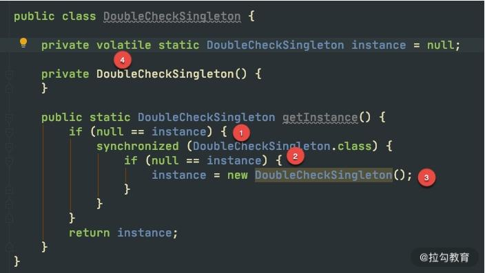
如上图，是 double check 的关键代码，我们介绍一下四个关键点：
- 第一次检查，当 instance 为 null 的时候，进入对象实例化逻辑，否则直接返回。
- 加同步锁，这里是类锁。
- 第二次检查才是关键。如果不加这次判空动作，可能会有多个线程进入同步代码块，进而生成多个实例。
- 最后一个关键点是 volatile 关键字。在一些低版本的 Java 里，由于指令重排的缘故，可能会导致单例被 new 出来后，还没来得及执行构造函数，就被其他线程使用。 这个关键字，可以阻止字节码指令的重排序，在写 double check 代码时，习惯性会加上 volatile。
可以看到，double check 的写法繁杂，注意点很多，它现在其实是一种反模式，已经不推荐使用了，我也不推荐你用在自己的代码里。但它能够考察面试者对并发的理解，所以这个问题经常被问到。
推荐使用 enum 实现懒加载的单例，代码片段如下：
《Effective Java》这本书也同样推荐了该方式。
public class EnumSingleton {
private EnumSingleton() {
}
public static EnumSingleton getInstance() {
return Holder.HOLDER.instance;
}
private enum Holder {
HOLDER;
private final EnumSingleton instance;
Holder() {
instance = new EnumSingleton();
}
}
}
享元模式
享元模式（Flyweight）是难得的，专门针对性能优化的设计模式，它通过共享技术，最大限度地复用对象。享元模式一般会使用唯一的标识码进行判断，然后返回对应的对象，使用 HashMap 一类的集合存储非常合适。
上面的描述，我们非常熟悉，因为在过去的一些课时中，我们就能看到很多享元模式的身影，比如《09 | 案例分析：池化对象的应用场景》里的池化对象和《10 | 案例分析：大对象复用的目标和注意点》里的对象复用等。
设计模式对这我们平常的编码进行了抽象，从不同的角度去解释设计模式，都会找到设计思想的一些共通点。比如，单例模式就是享元模式的一种特殊情况，它通过共享单个实例，达到对象的复用。
值得一提的是，同样的代码，不同的解释，会产生不同的效果。比如下面这段代码：
Map<String,Strategy> strategys = new HashMap<>();
strategys.put("a",new AStrategy());
strategys.put("b",new BStrategy());
如果我们从对象复用的角度来说，它就是享元模式；如果我们从对象的功能角度来说，那它就是策略模式。所以大家在讨论设计模式的时候，一定要注意上下文语境的这些差别。
原型模式
原型模式（Prototype）比较类似于复制粘贴的思想，它可以首先创建一个实例，然后通过这个实例进行新对象的创建。在 Java 中，最典型的就是 Object 类的 clone 方法。
但编码中这个方法很少用，我们上面在代理模式提到的 prototype，并不是通过 clone 实现的，而是使用了更复杂的反射技术。
一个比较重要的原因就是 clone 如果只拷贝当前层次的对象，实现的只是浅拷贝。在现实情况下，对象往往会非常复杂，想要实现深拷贝的话，需要在 clone 方法里做大量的编码，远远不如调用 new 方法方便。
实现深拷贝，还有序列化等手段，比如实现 Serializable 接口，或者把对象转化成 JSON。
所以，在现实情况下，原型模式变成了一种思想，而不是加快对象创建速度的工具。
小结
本课时，我们主要看了几个与性能相关的设计模式，包括一些高频的考点。我们了解到了 Java 实现动态代理的两种方式，以及他们的区别，在现版本的 JVM 中，性能差异并不大；我们还了解到单例模式的三种创建方式，并看了一个 double check 的反例，平常编码中，推荐使用枚举去实现单例；最后，我们学习了享元模式和原型模式，它们概念性更强一些，并没有固定的编码模式。
我们还顺便学习了 arthas 使用 trace 命令，寻找耗时代码块的方法，最终将问题定位到 Spring 的 AOP 功能模块里，而这种场景在复杂项目中经常发生，需要你特别注意。
此外，在设计模式中，对性能帮助最大的是生产者消费者模式，比如异步消息、reactor 模型等，而这一部分内容，我们将在之后的《15 | 案例分析：从 BIO 到 NIO，再到 AIO》中详细讲解。
不过，想要了解这方面的内容，需要首先了解一些多线程编程的知识，所以下一课时，我将讲解并行计算的一些知识点，记得按时来听课。
12 案例分析：并行计算让代码“飞”起来
现在的电脑，往往都有多颗核，即使是一部手机，也往往配备了并行处理器，通过多进程和多线程的手段，就可以让多个 CPU 核同时工作，加快任务的执行。
Java 提供了非常丰富的 API，来支持多线程开发。对我们 Java 程序员来说，多线程是面试和工作中必备的技能。但它如何应用到业务场景中？又有哪些注意事项？本课时将从一个并行获取数据的例子开始，逐步讲解这个面试中最频繁的知识点。
并行获取数据
考虑到下面一种场景。有一个用户数据接口，要求在 50ms 内返回数据。它的调用逻辑非常复杂，打交道的接口也非常多，需要从 20 多个接口汇总数据。这些接口，最小的耗时也要 20ms，哪怕全部都是最优状态，算下来也需要 20*20 = 400ms。
如下图，解决的方式只有并行，通过多线程同时去获取计算结果，最后进行结果拼接。
但这种编程模型太复杂了，如果使用原始的线程 API，或者使用 wait、notify 等函数，代码的复杂度可以想象有多大。但幸运的是，现在 Java 中的大多数并发编程场景，都可以使用 concurrent 包的一些工具类来实现。
在这种场景中，我们就可以使用 CountDownLatch 完成操作。CountDownLatch 本质上是一个计数器，我们把它初始化为与执行任务相同的数量。当一个任务执行完时，就将计数器的值减 1，直到计数器值达到 0 时，表示完成了所有的任务，在 await 上等待的线程就可以继续执行下去。
下面这段代码，是我专门为这个场景封装的一个工具类。它传入了两个参数：一个是要计算的 job 数量，另外一个是整个大任务超时的毫秒数。
public class ParallelFetcher {
final long timeout;
final CountDownLatch latch;
final ThreadPoolExecutor executor = new ThreadPoolExecutor(100, 200, 1,
TimeUnit.HOURS, new ArrayBlockingQueue<>(100));
public ParallelFetcher(int jobSize, long timeoutMill) {
latch = new CountDownLatch(jobSize);
timeout = timeoutMill;
}
public void submitJob(Runnable runnable) {
executor.execute(() -> {
runnable.run();
latch.countDown();
});
}
public void await() {
try {
this.latch.await(timeout, TimeUnit.MILLISECONDS);
} catch (InterruptedException e) {
throw new IllegalStateException();
}
}
public void dispose() {
this.executor.shutdown();
}
}
当我们的 job 运行时间，超过了任务的时间上限，就会被直接终止，这就是 await 函数的功能。
下面是使用这段代码的一个示例。SlowInterfaceMock 是一个测试类，用来模拟远程服务的超时动作，会等待 0~60 毫秒，程序运行后，会输出执行结果到 map 集合中。
public static void main(String[] args) {
final String userid = "123";
final SlowInterfaceMock mock = new SlowInterfaceMock();
ParallelFetcher fetcher = new ParallelFetcher(20, 50);
final Map<String, String> result = new HashMap<>();
fetcher.submitJob(() -> result.put("method0", mock.method0(userid)));
fetcher.submitJob(() -> result.put("method1", mock.method1(userid)));
fetcher.submitJob(() -> result.put("method2", mock.method2(userid)));
fetcher.submitJob(() -> result.put("method3", mock.method3(userid)));
fetcher.submitJob(() -> result.put("method4", mock.method4(userid)));
fetcher.submitJob(() -> result.put("method5", mock.method5(userid)));
fetcher.submitJob(() -> result.put("method6", mock.method6(userid)));
fetcher.submitJob(() -> result.put("method7", mock.method7(userid)));
fetcher.submitJob(() -> result.put("method8", mock.method8(userid)));
fetcher.submitJob(() -> result.put("method9", mock.method9(userid)));
fetcher.submitJob(() -> result.put("method10", mock.method10(userid)));
fetcher.submitJob(() -> result.put("method11", mock.method11(userid)));
fetcher.submitJob(() -> result.put("method12", mock.method12(userid)));
fetcher.submitJob(() -> result.put("method13", mock.method13(userid)));
fetcher.submitJob(() -> result.put("method14", mock.method14(userid)));
fetcher.submitJob(() -> result.put("method15", mock.method15(userid)));
fetcher.submitJob(() -> result.put("method16", mock.method16(userid)));
fetcher.submitJob(() -> result.put("method17", mock.method17(userid)));
fetcher.submitJob(() -> result.put("method18", mock.method18(userid)));
fetcher.submitJob(() -> result.put("method19", mock.method19(userid)));
fetcher.await();
System.out.println(fetcher.latch);
System.out.println(result.size());
System.out.println(result);
fetcher.dispose();
}
使用这种方式，我们的接口就可以在固定的时间内返回了。concurrent 包里面提供了非常多的类似 CountDownLatch 的工具，在享受便捷性的同时，我们来看一下这段代码需要注意的事情。
首先，latch 的数量加上 map 的 size，总数应该是 20，但运行之后，大概率不是，我们丢失了部分数据。原因就是，main 方法里使用了 HashMap 类，它并不是线程安全的，在并发执行时发生了错乱，造成了错误的结果，将 HashMap 换成 ConcurrentHashMap 即可解决问题。
从这个小问题我们就可以看出：并发编程并不是那么友好，一不小心就会踏进陷阱。如果你对集合的使用场景并不是特别在行，直接使用线程安全的类，出错的概率会更少一点。
我们再来看一下线程池的设置，里面有非常多的参数，最大池数量达到了 200 个。那线程数到底设置多少合适呢？按照我们的需求，每次请求需要执行 20 个线程，200 个线程就可以支持 10 个并发量，按照最悲观的 50ms 来算的话，这个接口支持的最小 QPS 就是：1000/50*10=200。这就是说，如果访问量增加，这个线程数还可以调大。
在我们的平常的业务中，有计算密集型任务和 I/O 密集型任务之分。
- I/O 密集型任务
对于我们常见的互联网服务来说，大多数是属于 I/O 密集型的，比如等待数据库的 I/O，等待网络 I/O 等。在这种情况下，当线程数量等于 I/O 任务的数量时，效果是最好的。虽然线程上下文切换会有一定的性能损耗，但相对于缓慢的 I/O 来说，这点损失是可以接受的。
我们上面说的这种情况，是针对同步 I/O 来说的，基本上是一个任务对应一个线程。异步 NIO 会加速这个过程，《15 | 案例分析：从 BIO 到 NIO，再到 AIO》将对其进行详细讲解。
- 计算密集型任务
计算密集型的任务却正好相反，比如一些耗时的算法逻辑。CPU 要想达到最高的利用率，提高吞吐量，最好的方式就是：让它尽量少地在任务之间切换，此时，线程数等于 CPU 数量，是效率最高的。
了解了任务的这些特点，就可以通过调整线程数量增加服务性能。比如，高性能的网络工具包 Netty，EventLoop 默认的线程数量，就是处理器的 2 倍。如果我们的业务 I/O 比较耗时，此时就容易造成任务的阻塞，解决方式有两种：一是提高 worker 线程池的大小，另外一种方式是让耗时的操作在另外的线程池里运行。
从池化对象原理看线程池
线程的资源也是比较昂贵的，频繁地创建和销毁同样会影响系统性能。结合《09 | 案例分析：池化对象的应用场景》中对池化对象的描述，线程资源是非常适合进行池化的。
线程池与其他对象池的设计思路差不多，但它有一些细微的差别，下面我们来看一下线程池参数最全的构造方法：
public ThreadPoolExecutor(int corePoolSize,
int maximumPoolSize,
long keepAliveTime,
TimeUnit unit,
BlockingQueue<Runnable> workQueue,
ThreadFactory threadFactory,
RejectedExecutionHandler handler)
前几个参数没有什么好说的，相对于普通对象池而言，由于线程资源总是有效，它甚至少了非常多的 Idle 配置参数（与对象池比较），我们主要来看一下 workQueue 和 handler。
关于任务的创建过程，可以说是多线程每次必问的问题了。如下图所示，任务被提交后，首先判断它是否达到了最小线程数（coreSize），如果达到了，就将任务缓存在任务队列里。如果队列也满了，会判断线程数量是否达到了最大线程数（maximumPoolSize），如果也达到了，就会进入任务的拒绝策略（handler）。

我们来看一下 Executors 工厂类中默认的几个快捷线程池代码。
1.固定大小线程池
public static ExecutorService newFixedThreadPool(int nThreads) {
return new ThreadPoolExecutor(nThreads, nThreads,
0L, TimeUnit.MILLISECONDS,
new LinkedBlockingQueue<Runnable>());
}
FixedThreadPool 的最大最小线程数是相等的，其实设置成不等的也不会起什么作用。主要原因就是它所采用的任务队列 LinkedBlockingQueue 是无界的，代码走不到判断最大线程池的逻辑。keepAliveTime 参数的设置，也没有意义，因为线程池回收的是corePoolSize和maximumPoolSize 之间的线程。 这个线程池的问题是，由于队列是无界的，在任务较多的情况下，会造成内存使用不可控，同时任务也会在队列里长时间等待。
2.无限大小线程池
public static ExecutorService newCachedThreadPool() {
return new ThreadPoolExecutor(0, Integer.MAX_VALUE,
60L, TimeUnit.SECONDS,
new SynchronousQueue<Runnable>());
}
CachedThreadPool 是另外一个极端，它的最小线程数是 0，线程空闲 1 分钟的都会被回收。在提交任务时，使用了 SynchronousQueue，不缓存任何任务，直接创建新的线程。这种方式同样会有问题，因为它同样无法控制资源的使用，很容易造成内存溢出和过量的线程创建。 一般在线上，这两种方式都不推荐，我们需要根据具体的需求，使用 ThreadPoolExecutor 自行构建线程池，这也是阿里开发规范中推荐的方式。
- 如果任务可以接受一定时间的延迟，那么使用 LinkedBlockingQueue 指定一个队列的上限，缓存一部分任务是合理的；
- 如果任务对实时性要求很高，比如 RPC 服务，就可以使用 SynchronousQueue 队列对任务进行传递，而不是缓存它们。
3.拒绝策略
默认的拒绝策略，就是抛出异常的 AbortPolicy，与之类似的是 DiscardPolicy，它什么都不做，连异常都不抛出，这个非常不推荐。
还有一个叫作 CallerRunsPolicy，当线程池饱和时，它会使用用户的线程执行任务。比如，在Controller 里的线程池满了，会阻塞在 Tomcat 的线程池里对任务进行执行，这很容易会将用户线程占满，造成用户业务长时间等待。具体用不用这种策略，还是要看客户对等待时间的忍受程度。
最后一个策略叫作 DiscardOldestPolicy，它在遇到线程饱和时，会先弹出队列里最旧的任务，然后把当前的任务添加到队列中。
在 SpringBoot 中如何使用异步？
SpringBoot 中可以非常容易地实现异步任务。
首先，我们需要在启动类上加上 @EnableAsync 注解，然后在需要异步执行的方法上加上 @Async 注解。一般情况下，我们的任务直接在后台运行就可以，但有些任务需要返回一些数据，这个时候，就可以使用 Future 返回一个代理，供其他的代码使用。
关键代码如下：

默认情况下，Spring 将启动一个默认的线程池供异步任务使用。这个线程池也是无限大的，资源使用不可控，所以强烈建议你使用代码设置一个适合自己的。
@Bean
public ThreadPoolTaskExecutor getThreadPoolTaskExecutor() {
ThreadPoolTaskExecutor taskExecutor = new ThreadPoolTaskExecutor();
taskExecutor.setCorePoolSize(100);
taskExecutor.setMaxPoolSize(200);
taskExecutor.setQueueCapacity(100);
taskExecutor.setKeepAliveSeconds(60);
taskExecutor.setThreadNamePrefix("test-");
taskExecutor.initialize();
return taskExecutor;
}
多线程资源盘点
1.线程安全的类
我们在上面谈到了 HashMap 和 ConcurrentHashMap，后者相对于前者，是线程安全的。多线程的细节非常多，下面我们就来盘点一下，一些常见的线程安全的类。
注意，下面的每一个对比，都是面试中的知识点，想要更加深入地理解，你需要阅读 JDK 的源码。
- StringBuilder 对应着 StringBuffer。后者主要是通过 synchronized 关键字实现了线程的同步。值得注意的是，在单个方法区域里，这两者是没有区别的，JIT 的编译优化会去掉 synchronized 关键字的影响。
- HashMap 对应着 ConcurrentHashMap。ConcurrentHashMap 的话题很大，这里提醒一下 JDK1.7 和 1.8 之间的实现已经不一样了。1.8 已经去掉了分段锁的概念（锁分离技术），并且使用 synchronized 来代替了 ReentrantLock。
- ArrayList 对应着 CopyOnWriteList。后者是写时复制的概念，适合读多写少的场景。
- LinkedList 对应着 ArrayBlockingQueue。ArrayBlockingQueue 对默认是不公平锁，可以修改构造参数，将其改成公平阻塞队列，它在 concurrent 包里使用得非常频繁。
- HashSet 对应着 CopyOnWriteArraySet。
下面以一个经常发生问题的案例，来说一下线程安全的重要性。
SimpleDateFormat 是我们经常用到的日期处理类，但它本身不是线程安全的，在多线程运行环境下，会产生很多问题，在以往的工作中，通过 sonar 扫描，我发现这种误用的情况特别的多。在面试中，我也会专门问到 SimpleDateFormat，用来判断面试者是否具有基本的多线程编程意识。

执行上图的代码，可以看到，时间已经错乱了。
Thu May 01 08:56:40 CST 618104
Thu May 01 08:56:40 CST 618104
Mon Jul 26 08:00:04 CST 1
Tue Jun 30 08:56:00 CST 2020
Thu Oct 01 14:45:20 CST 16
Sun Jul 13 01:55:40 CST 20220200
Wed Dec 25 08:56:40 CST 2019
Sun Jul 13 01:55:40 CST 20220200
解决方式就是使用 ThreadLocal 局部变量，代码如下图所示，可以有效地解决线程安全问题。
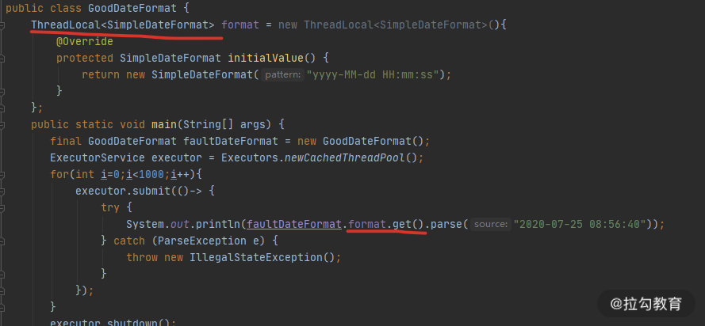
2.线程的同步方式
Java 中实现线程同步的方式有很多，大体可以分为以下 8 类。
- 使用 Object 类中的 wait、notify、notifyAll 等函数。由于这种编程模型非常复杂，现在已经很少用了。这里有一个关键点，那就是对于这些函数的调用，必须放在同步代码块里才能正常运行。
- 使用 ThreadLocal 线程局部变量的方式，每个线程一个变量，本课时会详细讲解。
- 使用 synchronized 关键字修饰方法或者代码块。这是 Java 中最常见的方式，有锁升级的概念。
- 使用 Concurrent 包里的可重入锁 ReentrantLock。使用 CAS 方式实现的可重入锁。
- 使用 volatile 关键字控制变量的可见性，这个关键字保证了变量的可见性，但不能保证它的原子性。
- 使用线程安全的阻塞队列完成线程同步。比如，使用 LinkedBlockingQueue 实现一个简单的生产者消费者。
- 使用原子变量。Atomic* 系列方法，也是使用 CAS 实现的，关于 CAS，我们将在下一课时介绍。
- 使用 Thread 类的 join 方法，可以让多线程按照指定的顺序执行。
下面的截图，是使用 LinkedBlockingQueue 实现的一个简单生产者和消费者实例，在很多互联网的笔试环节，这个题目会经常出现。 可以看到，我们还使用了一个 volatile 修饰的变量，来决定程序是否继续运行，这也是 volatile 变量的常用场景。

FastThreadLocal
在我们平常的编程中，使用最多的就是 ThreadLocal 类了。拿最常用的 Spring 来说，它事务管理的传播机制，就是使用 ThreadLocal 实现的。因为 ThreadLocal 是线程私有的，所以 Spring 的事务传播机制是不能够跨线程的。在问到 Spring 事务管理是否包含子线程时，要能够想到面试官的真实意图。
/**
* Holder to support the {@code currentTransactionStatus()} method,
* and to support communication between different cooperating advices
* (e.g. before and after advice) if the aspect involves more than a
* single method (as will be the case for around advice).
*/
private static final ThreadLocal<TransactionInfo> transactionInfoHolder =
new NamedThreadLocal<>("Current aspect-driven transaction");
既然 Java 中有了 ThreadLocal 类了，为什么 Netty 还自己创建了一个叫作 FastThreadLocal 的结构？ 我们首先来看一下 ThreadLocal 的实现。
Thread 类中，有一个成员变量 ThreadLocals，存放了与本线程相关的所有自定义信息。对这个变量的定义在 Thread 类，而操作却在 ThreadLocal 类中。
public T get() {
Thread t = Thread.currentThread();
ThreadLocalMap map = getMap(t);
...
}
ThreadLocalMap getMap(Thread t) {
return t.threadLocals;
}
问题就出在 ThreadLocalMap 类上，它虽然叫 Map，但却没有实现 Map 的接口。如下图，ThreadLocalMap 在 rehash 的时候，并没有采用类似 HashMap 的数组+链表+红黑树的做法，它只使用了一个数组，使用开放寻址（遇到冲突，依次查找，直到空闲位置）的方法，这种方式是非常低效的。
由于 Netty 对 ThreadLocal 的使用非常频繁，Netty 对它进行了专项的优化。它之所以快，是因为在底层数据结构上做了文章，使用常量下标对元素进行定位，而不是使用JDK 默认的探测性算法。
还记得《03 | 深入剖析：哪些资源，容易成为瓶颈？》提到的伪共享问题吗？底层的 InternalThreadLocalMap对cacheline 也做了相应的优化。
你在多线程使用中都遇到过哪些问题？
通过上面的知识总结，可以看到多线程相关的编程，是属于比较高阶的技能。面试中，面试官会经常问你在多线程使用中遇到的一些问题，以此来判断你实际的应用情况。
我们先总结一下文中已经给出的示例：
- 线程池的不正确使用，造成了资源分配的不可控；
- I/O 密集型场景下，线程池开得过小，造成了请求的频繁失败；
- 线程池使用了 CallerRunsPolicy 饱和策略，造成了业务线程的阻塞；
- SimpleDateFormat 造成的时间错乱。
另外，我想要着重提到的一点是，在处理循环的任务时，一定不要忘了捕捉异常。尤其需要说明的是，像 NPE 这样的异常，由于是非捕获型的，IDE 的代码提示往往不起作用。我见过很多案例，就是由于忘了处理异常，造成了任务中断，这种问题发生的机率小，是比较难定位的，一定要保持良好的编码习惯。
while（！isInterrupted（））{
try{
……
}catch(Exception ex){
……
}
}
多线程环境中，异常日志是非常重要的，但线程池的默认行为并不是特别切合实际。参见如下代码，任务执行时，抛出了一个异常，但我们的终端什么都没输出，异常信息丢失了，这对问题排查非常不友好。
ExecutorService executor = Executors.newCachedThreadPool();
executor.submit( ()-> {
String s = null; s.substring(0);
});
executor.shutdown();
我们跟踪任务的执行，在 ThreadPoolExecutor 类中可以找到任务发生异常时的方法，它是抛给了 afterExecute 方法进行处理。
可惜的是，ThreadPoolExecutor 中的 afterExecute 方法是没有任何实现的，它是个空方法。
protected void afterExecute(Runnable r, Throwable t) { }
如果你通过重写 afterExecute 来改变这个默认行为，但这代价点大。其实，使用 submit 方法提交的任务，会返回一个 Future 对象，只有调用了它的 get 方法，这个异常才会打印。使用 submit 方法提交的任务，代码永远不会走到上图标红的一行，获取异常的方式有且只有这一种。
只有使用 execute 方法提交的任务才会走到这行异常处理代码。如果你想要默认打印异常，推荐使用 execute 方法提交任务，它和 submit 方法的区别，也不仅仅是返回值不一样那么简单。
关于异步
曾经有同事问我：“异步，并没有减少任务的执行步骤，也没有算法上的改进，那么为什么说异步的速度更快呢？”
其实这是部分同学对“异步作用”的错误理解。异步是一种编程模型，它通过将耗时的操作转移到后台线程运行，从而减少对主业务的堵塞，所以我们说异步让速度变快了。但如果你的系统资源使用已经到了极限，异步就不能产生任何效果了，它主要优化的是那些阻塞性的等待。
在我们前面的课程里，缓冲、缓存、池化等优化方法，都是用到了异步。它能够起到转移冲突，优化请求响应的作用。由于合理地利用了资源，我们的系统响应确实变快了， 之后的《15 | 案例分析：从 BIO 到 NIO，再到 AIO》会对此有更多讲解。
异步还能够对业务进行解耦，如下图所示，它比较像是生产者消费者模型。主线程负责生产任务，并将它存放在待执行列表中；消费线程池负责任务的消费，进行真正的业务逻辑处理。
小结
多线程的话题很大，本课时的内容稍微多，我们简单总结一下课时重点。
本课时默认你已经有了多线程的基础知识（否则看起来会比较吃力），所以我们从 CountDownLatch 的一个实际应用场景说起，谈到了线程池的两个重点：阻塞队列和拒绝策略。
接下来，我们学习了如何在常见的框架 SpringBoot 中配置任务异步执行。我们还对多线程的一些重要知识点进行了盘点，尤其看了一些线程安全的工具，以及线程的同步方式。最后，我们对最常用的 ThreadLocal 进行了介绍，并了解了 Netty 对这个工具类的优化。
本课时的所有问题，都是面试高频考点。 多线程编程的难点除了 API 繁多复杂外，还在于异步编程的模式很难调试。
我们也对比较难回答的使用经验问题，进行了专题讨论，例如“你在多线程使用中遇到的一些问题以及解决方法”，这种问题被问到的概率还是很高的。
13 案例分析：多线程锁的优化
我们在上一课时，了解到可以使用 ThreadLocal，来避免 SimpleDateFormat 在并发环境下引起的时间错乱问题。其实还有一种解决方式，就是通过对parse 方法进行加锁，也能保证日期处理类的正确运行，代码如下图（可见仓库）：
其实锁对性能的影响，是非常大的。因为对资源加锁以后，资源就被加锁的线程独占，其他的线程就只能排队等待这个锁，此时程序由并行执行，变相地成了顺序执行，执行速度自然就降低了。
下面是开启了 50 个线程，使用 ThreadLocal 和同步锁方式性能的一个对比。
Benchmark Mode Cnt Score Error Units
SynchronizedNormalBenchmark.sync thrpt 10 2554.628 ± 5098.059 ops/ms
SynchronizedNormalBenchmark.threadLocal thrpt 10 3750.902 ± 103.528 ops/ms
========去掉业务影响========
Benchmark Mode Cnt Score Error Units
SynchronizedNormalBenchmark.sync thrpt 10 26905.514 ± 1688.600 ops/ms
SynchronizedNormalBenchmark.threadLocal thrpt 10 7041876.244 ± 355598.686 ops/ms
可以看到，使用同步锁的方式，性能是比较低的。如果去掉业务本身逻辑的影响（删掉执行逻辑），这个差异会更大。代码执行的次数越多，锁的累加影响越大，对锁本身的速度优化，是非常重要的。
我们都知道，Java 中有两种加锁的方式：一种就是常见的synchronized 关键字，另外一种，就是使用 concurrent 包里面的 Lock。针对这两种锁，JDK 自身做了很多的优化，它们的实现方式也是不同的。本课时将从这两种锁讲起，看一下对锁的一些优化方式。
synchronied
synchronized 关键字给代码或者方法上锁时，都有显示或者隐藏的上锁对象。当一个线程试图访问同步代码块时，它首先必须得到锁，而退出或抛出异常时必须释放锁。
- 给普通方法加锁时，上锁的对象是 this；
- 给静态方法加锁时，锁的是 class 对象；
- 给代码块加锁，可以指定一个具体的对象作为锁。
1.monitor 原理
在面试中，面试官很可能会问你：synchronized 在字节码中，是怎么体现的呢？ 参照下面的代码，在命令行执行 javac，然后再执行 javap -v -p，就可以看到它具体的字节码。
可以看到，在字节码的体现上，它只给方法加了一个 flag：ACC_SYNCHRONIZED。
synchronized void syncMethod() {
System.out.println("syncMethod");
}
======字节码=====
synchronized void syncMethod();
descriptor: ()V
flags: ACC_SYNCHRONIZED
Code:
stack=2, locals=1, args_size=1
0: getstatic #4
3: ldc #5
5: invokevirtual #6
8: return
我们再来看下同步代码块的字节码。可以看到，字节码是通过 monitorenter 和monitorexit 两个指令进行控制的。
void syncBlock(){
synchronized (Test.class){
}
}
======字节码======
void syncBlock();
descriptor: ()V
flags:
Code:
stack=2, locals=3, args_size=1
0: ldc #2
2: dup
3: astore_1
4: monitorenter
5: aload_1
6: monitorexit
7: goto 15
10: astore_2
11: aload_1
12: monitorexit
13: aload_2
14: athrow
15: return
Exception table:
from to target type
5 7 10 any
10 13 10 any
这两者虽然显示效果不同，但他们都是通过 monitor 来实现同步的。我们可以通过下面这张图，来看一下 monitor 的原理。
注意了，下面是面试题目高发地。比如，你能描述一下 monitor 锁的实现原理吗？

如上图所示，我们可以把运行时的对象锁抽象地分成三部分。其中，EntrySet 和 WaitSet 是两个队列，中间虚线部分是当前持有锁的线程，我们可以想象一下线程的执行过程。
当第一个线程到来时，发现并没有线程持有对象锁，它会直接成为活动线程，进入 RUNNING 状态。
接着又来了三个线程，要争抢对象锁。此时，这三个线程发现锁已经被占用了，就先进入 EntrySet 缓存起来，进入 BLOCKED 状态。此时，从 jstack 命令，可以看到他们展示的信息都是 waiting for monitor entry。
"http-nio-8084-exec-120" #143 daemon prio=5 os_prio=31 cpu=122.86ms elapsed=317.88s tid=0x00007fedd8381000 nid=0x1af03 waiting for monitor entry [0x00007000150e1000]
java.lang.Thread.State: BLOCKED (on object monitor)
at java.io.BufferedInputStream.read(java.base@13.0.1/BufferedInputStream.java:263)
- waiting to lock <0x0000000782e1b590> (a java.io.BufferedInputStream)
at org.apache.commons.httpclient.HttpParser.readRawLine(HttpParser.java:78)
at org.apache.commons.httpclient.HttpParser.readLine(HttpParser.java:106)
at org.apache.commons.httpclient.HttpConnection.readLine(HttpConnection.java:1116)
at org.apache.commons.httpclient.HttpMethodBase.readStatusLine(HttpMethodBase.java:1973)
at org.apache.commons.httpclient.HttpMethodBase.readResponse(HttpMethodBase.java:1735)
处于活动状态的线程，执行完毕退出了；或者由于某种原因执行了 wait 方法，释放了对象锁，进入了 WaitSet 队列，这就是在调用 wait 之前，需要先获得对象锁的原因。
就像下面的代码：
synchronized (lock){
try {
lock.wait();
} catch (InterruptedException e) {
e.printStackTrace();
}
}
此时，jstack 显示的线程状态是 WAITING 状态，而原因是 in Object.wait()。
"wait-demo" #12 prio=5 os_prio=31 cpu=0.14ms elapsed=12.58s tid=0x00007fb66609e000 nid=0x6103 in Object.wait() [0x000070000f2bd000]
java.lang.Thread.State: WAITING (on object monitor)
at java.lang.Object.wait(java.base@13.0.1/Native Method)
- waiting on <0x0000000787b48300> (a java.lang.Object)
at java.lang.Object.wait(java.base@13.0.1/Object.java:326)
at WaitDemo.lambda$main$0(WaitDemo.java:7)
- locked <0x0000000787b48300> (a java.lang.Object)
at WaitDemo$$Lambda$14/0x0000000800b44840.run(Unknown Source)
at java.lang.Thread.run(java.base@13.0.1/Thread.java:830)
发生了这两种情况，都会造成对象锁的释放，进而导致 EntrySet 里的线程重新争抢对象锁，成功抢到锁的线程成为活动线程，这是一个循环的过程。
那 WaitSet 中的线程是如何再次被激活的呢？接下来，在某个地方，执行了锁的 notify 或者 notifyAll 命令，会造成 WaitSet 中的线程，转移到 EntrySet 中，重新进行锁的争夺。
如此周而复始，线程就可按顺序排队执行。
2.分级锁
在 JDK 1.8 中，synchronized 的速度已经有了显著的提升，它都做了哪些优化呢？答案就是分级锁。JVM 会根据使用情况，对 synchronized 的锁，进行升级，它大体可以按照下面的路径进行升级：偏向锁 — 轻量级锁 — 重量级锁。
锁只能升级，不能降级，所以一旦升级为重量级锁，就只能依靠操作系统进行调度。
要想了解锁升级的过程，需要先看一下对象在内存里的结构。
如上图所示，对象分为 MarkWord、Class Pointer、Instance Data、Padding 四个部分。
和锁升级关系最大的就是 MarkWord，它的长度是 24 位，我们着重介绍一下。它包含Thread ID（23bit）、Age（6bit）、Biased（1bit）、Tag（2bit） 四个部分，锁升级就是靠判断 Thread Id、Biased、Tag 等三个变量值来进行的。
- 偏向锁
在只有一个线程使用了锁的情况下，偏向锁能够保证更高的效率。
具体过程是这样的：当第一个线程第一次访问同步块时，会先检测对象头 Mark Word 中的标志位 Tag 是否为 01，以此判断此时对象锁是否处于无锁状态或者偏向锁状态（匿名偏向锁）。
01 也是锁默认的状态，线程一旦获取了这把锁，就会把自己的线程 ID 写到 MarkWord 中，在其他线程来获取这把锁之前，锁都处于偏向锁状态。
当下一个线程参与到偏向锁竞争时，会先判断 MarkWord 中保存的线程 ID 是否与这个线程 ID 相等，如果不相等，会立即撤销偏向锁，升级为轻量级锁。
- 轻量级锁
轻量级锁的获取是怎么进行的呢？它们使用的是自旋方式。
参与竞争的每个线程，会在自己的线程栈中生成一个 LockRecord ( LR )，然后每个线程通过 CAS（自旋）的方式，将锁对象头中的 MarkWord 设置为指向自己的 LR 的指针，哪个线程设置成功，就意味着哪个线程获得锁。
当锁处于轻量级锁的状态时，就不能够再通过简单地对比 Tag 的值进行判断，每次对锁的获取，都需要通过自旋。
当然，自旋也是面向不存在锁竞争的场景，比如一个线程运行完了，另外一个线程去获取这把锁；但如果自旋失败达到一定的次数，锁就会膨胀为重量级锁。
- 重量级锁
重量级锁，即我们对 synchronized 的直观认识，这种情况下，线程会挂起，进入到操作系统内核态，等待操作系统的调度，然后再映射回用户态。系统调用是昂贵的，所以重量级锁的名称由此而来。
如果系统的共享变量竞争非常激烈，锁会迅速膨胀到重量级锁，这些优化就名存实亡。如果并发非常严重，可以通过参数 -XX:-UseBiasedLocking 禁用偏向锁，理论上会有一些性能提升，但实际上并不确定。
Lock
在 concurrent 包里，我们能够发现 ReentrantLock 和 ReentrantReadWriteLock 两个类。Reentrant 就是可重入的意思，它们和 synchronized 关键字一样，都是可重入锁。
这里有必要解释一下**“可重入”这个概念，这是一个面试高频考点**。它的意思是，一个线程运行时，可以多次获取同一个对象锁，这是因为 Java 的锁是基于线程的，而不是基于调用的。
比如下面这段代码，由于方法 a、b、c 锁的都是当前的 this，线程在调用 a 方法的时候，就不需要多次获取对象锁。
public synchronized void a(){
b();
}
public synchronized void b(){
c();
}
public synchronized void c(){
}
1.主要方法
Lock 是基于 AQS（AbstractQueuedSynchronizer）实现的，而 AQS 是基于 volitale 和 CAS 实现的（关于CAS，我们将在下一课时讲解）。
Lock 与 synchronized 的使用方法不同，它需要手动加锁，然后在 finally 中解锁。Lock 接口比 synchronized 灵活性要高，我们来看一下几个关键方法。
- Lock： Lock 方法和 synchronized 没什么区别，如果获取不到锁，都会被阻塞；
- tryLock： 此方法会尝试获取锁，不管能不能获取到锁，都会立即返回，不会阻塞，它是有返回值的，获取到锁就会返回 true；
- tryLock(long time, TimeUnit unit)： 与 tryLock 类似，但它在拿不到锁的情况下，会等待一段时间，直到超时；
- LockInterruptibly： 与 Lock 类似，但是可以锁等待，可以被中断，中断后返回 InterruptedException；
一般情况下，使用 Lock 方法就可以；但如果业务请求要求响应及时，那使用带超时时间的tryLock是更好的选择：我们的业务可以直接返回失败，而不用进行阻塞等待。tryLock 这种优化手段，采用降低请求成功率的方式，来保证服务的可用性，在高并发场景下常被高频采用。
2.读写锁
但对于有些业务来说，使用 Lock 这种粗粒度的锁还是太慢了。比如，对于一个HashMap 来说，某个业务是读多写少的场景，这个时候，如果给读操作，也加上和写操作一样的锁的话，效率就会很慢。
ReentrantReadWriteLock 是一种读写分离的锁，它允许多个读线程同时进行，但读和写、写和写是互斥的。
使用方法如下所示，分别获取读写锁，对写操作加写锁，对读操作加读锁，并在 finally 里释放锁即可。
ReentrantReadWriteLock lock = new ReentrantReadWriteLock();
Lock readLock = lock.readLock();
Lock writeLock = lock.writeLock();
public void put(K k, V v) {
writeLock.lock();
try {
map.put(k, v);
} finally {
writeLock.unlock();
}
}
...
这里留一个课后作业：除了 ReadWriteLock，我们能有更快的读写分离模式吗？JDK 1.8 加入了哪个 API？（欢迎你在留言区作答，我将与你们一一交流）
3.公平锁与非公平锁
- 非公平锁
我们平常用到的锁，都是非公平锁，可以回过头来看一下 monitor 的原理。当持有锁的线程释放锁的时候，EntrySet 里的线程就会争抢这把锁，这个争抢过程，是随机的，也就是说你并不知道哪个线程会获取对象锁，谁抢到了就算谁的。
这就有一定的概率会发生，某个线程总是抢不到锁的情况。比如，某个线程通过 setPriority 设置得比较低的优先级，这个抢不到锁的线程，就一直处于饥饿状态，这就是线程饥饿的概念。
- 公平锁
而公平锁通过把随机变成有序，可以解决这个问题，synchronized 没有这个功能，在Lock 中可以通过构造参数设置成公平锁，代码如下：
public ReentrantReadWriteLock(boolean fair) {
sync = fair ? new FairSync() : new NonfairSync();
readerLock = new ReadLock(this);
writerLock = new WriteLock(this);
}
由于所有的线程都需要排队，需要在多核的场景下维护一个同步队列，在多个线程争抢锁的时候，吞吐量就很低。
下面是 20 个并发之下，锁的 JMH 测试结果，可以看到，非公平锁比公平锁的性能高出两个数量级。
Benchmark Mode Cnt Score Error Units
FairVSNoFairBenchmark.fair thrpt 10 186.144 ± 27.462 ops/ms
FairVSNoFairBenchmark.nofair thrpt 10 35195.649 ± 6503.375 ops/ms
锁的优化技巧
1.死锁
我们可以先看一下锁冲突最严重的一种情况：死锁。下面这段示例代码，两个线程分别持有对方所需要的锁，并进入了相互等待的状态，那么它们就进入了死锁。
在面试中，经常会要求被面试者手写下面这段代码：
public class DeadLockDemo {
public static void main(String[] args) {
Object object1 = new Object();
Object object2 = new Object();
Thread t1 = new Thread(() -> {
synchronized (object1) {
try {
Thread.sleep(200);
} catch (InterruptedException e) {
e.printStackTrace();
}
synchronized (object2) {
}
}
}, "deadlock-demo-1");
t1.start();
Thread t2 = new Thread(() -> {
synchronized (object2) {
try {
Thread.sleep(200);
} catch (InterruptedException e) {
e.printStackTrace();
}
synchronized (object1) {
}
}
}, "deadlock-demo-2");
t2.start();
}
}
代码创建了两把对象锁，线程1 首先拿到了 object1 的对象锁，200ms 后尝试获取 object2 的对象锁。但这个时候，object2 的对象锁已经被线程2 获取了。这两个线程进入了相互等待的状态，产生了死锁。
使用我们上面提到的，带超时时间的 tryLock 方法，有一方超时让步，可以一定程度上避免死锁。
2.优化技巧
锁的优化理论其实很简单，那就是减少锁的冲突。无论是锁的读写分离，还是分段锁，本质上都是为了避免多个线程同时获取同一把锁。
所以我们可以总结一下优化的一般思路：减少锁的粒度、减少锁持有的时间、锁分级、锁分离 、锁消除、乐观锁、无锁等。

- 减少锁粒度
通过减小锁的粒度，可以将冲突分散，减少冲突的可能，从而提高并发量。简单来说，就是把资源进行抽象，针对每类资源使用单独的锁进行保护。
比如下面的代码，由于 list 1 和 list 2 属于两类资源，就没必要使用同一个对象锁进行处理。
public class LockLessDemo {
List<String> list1 = new ArrayList<>();
List<String> list2 = new ArrayList<>();
public synchronized void addList1(String v){
this.list1.add(v);
}
public synchronized void addList2(String v){
this.list2.add(v);
}
}
可以创建两个不同的锁，改善情况如下：
public class LockLessDemo {
List<String> list1 = new ArrayList<>();
List<String> list2 = new ArrayList<>();
final Object lock1 = new Object();
final Object lock2 = new Object();
public void addList1(String v) {
synchronized (lock1) {
this.list1.add(v);
}
}
public void addList2(String v) {
synchronized (lock2) {
this.list2.add(v);
}
}
}
- 减少锁持有时间
通过让锁资源尽快地释放，减少锁持有的时间，其他线程可更迅速地获取锁资源，进行其他业务的处理。
考虑到下面的代码，由于 slowMethod 不在锁的范围内，占用的时间又比较长，可以把它移动到 Synchronized 代码块外面，加速锁的释放。
public class LockTimeDemo {
List<String> list = new ArrayList<>();
final Object lock = new Object();
public void addList(String v) {
synchronized (lock) {
slowMethod();
this.list.add(v);
}
}
public void slowMethod(){
}
}
- 锁分级
锁分级，指的是我们文章开始讲解的 Synchronied 锁的锁升级，属于 JVM 的内部优化，它从偏向锁开始，逐渐升级为轻量级锁、重量级锁，这个过程是不可逆的。
- 锁分离
我们在上面提到的读写锁，就是锁分离技术。这是因为，读操作一般是不会对资源产生影响的，可以并发执行；写操作和其他操作是互斥的，只能排队执行。所以读写锁适合读多写少的场景。
- 锁消除
通过 JIT 编译器，JVM 可以消除某些对象的加锁操作。举个例子，大家都知道StringBuffer 和 StringBuilder 都是做字符串拼接的，而且前者是线程安全的。
但其实，如果这两个字符串拼接对象用在函数内，JVM 通过逃逸分析这个对象的作用范围就是在本函数中，就会把锁的影响给消除掉。
比如下面这段代码，它和 StringBuilder 的效果是一样的。
String m1(){
StringBuffer sb = new StringBuffer();
sb.append("");
return sb.toString();
}
当然，对于读多写少的互联网场景，最有效的做法，是使用乐观锁，甚至无锁，这部分我们会在下一课时《14 | 案例分析：乐观锁和无锁》中介绍。
小结
Java 中有两种加锁方式：一种是使用 Synchronized 关键字，另外一种是 concurrent 包下面的 Lock。
本课时，我们详细地了解了它们的一些特性，包括实现原理，其对比如下：
| 类别 | Synchronized | Lock |
|---|---|---|
| 实现方式 | monitor | AQS |
| 底层细节 | JVM优化 | Java API |
| 分级锁 | 是 | 否 |
| 功能特性 | 单一 | 丰富 |
| 锁分离 | 无 | 读写锁 |
| 锁超时 | 无 | 带超时时间的 tryLock |
| 可中断 | 否 | lockInterruptibly |
Lock 的功能是比 Synchronized 多的，能够对线程行为进行更细粒度的控制。
但如果只是用最简单的锁互斥功能，建议直接使用 Synchronized，有两个原因：
- Synchronized 的编程模型更加简单，更易于使用
- Synchronized 引入了偏向锁，轻量级锁等功能，能够从 JVM 层进行优化，同时JIT 编译器也会对它执行一些锁消除动作。
我们还了解了公平锁与非公平锁，以及可重入锁的概念，以及一些通用的优化技巧。有冲突，才会有优化空间，那么无锁队列是怎么回事呢？它又是怎么实现的呢？下一课时《14 | 案例分析：乐观锁和无锁》，我们会来解答这些问题。
14 案例分析：乐观锁和无锁
上一课时，我们提到了 concurrent 下面的 Lock，了解到它可以在 API 级别，对共享资源进行更细粒度的控制。Lock 是基于 AQS（AbstractQueuedSynchronizer）实现的，AQS 是用来构建 Lock 或其他同步组件的基础，它使用了一个 int 成员变量来表示state（同步状态），通过内置的 FIFO 队列，来完成资源获取线程的排队。
synchronized的方式加锁，会让线程在 BLOCKED 状态和 RUNNABLE 状态之间切换，在操作系统上，就会造成用户态和内核态的频繁切换，效率就比较低。
与 synchronized 的实现方式不同，AQS中很多数据结构的变化，都是依赖 CAS 进行操作的，而CAS 就是乐观锁的一种实现。
CAS
CAS 是 Compare And Swap 的缩写，意思是比较并替换。
如下图，CAS 机制当中使用了 3 个基本操作数：内存地址V、期望值E、要修改的新值N。更新一个变量的时候，只有当变量的预期值E 和内存地址V 的真正值相同时，才会将内存地址V 对应的值修改为 N。

如果本次修改不成功，怎么办？很多情况下，它将一直重试，直到修改为期望的值。
拿 AtomicInteger 类来说，相关的代码如下：
public final boolean compareAndSet(int expectedValue, int newValue) {
return U.compareAndSetInt(this, VALUE, expectedValue, newValue);
}
比较和替换是两个动作，CAS 是如何保证这两个操作的原子性呢？
我们继续向下追踪，发现是 jdk.internal.misc.Unsafe 类实现的，循环重试就是在这里发生的：
@HotSpotIntrinsicCandidate
public final int getAndAddInt(Object o, long offset, int delta) {
int v;
do {
v = getIntVolatile(o, offset);
} while (!weakCompareAndSetInt(o, offset, v, v + delta));
return v;
}
追踪到 JVM 内部，在 linux 机器上参照 os_cpu/linux_x86/atomic_linux_x86.hpp。可以看到，最底层的调用，是汇编语言，而最重要的，就是cmpxchgl指令。到这里没法再往下找代码了，因为 CAS 的原子性实际上是硬件 CPU 直接保证的。
template<>
template<typename T>
inline T Atomic::PlatformCmpxchg<4>::operator()(T exchange_value,
T volatile* dest,
T compare_value,
atomic_memory_order /* order */) const {
STATIC_ASSERT(4 == sizeof(T));
__asm__ volatile ("lock cmpxchgl %1,(%3)"
: "=a" (exchange_value)
: "r" (exchange_value), "a" (compare_value), "r" (dest)
: "cc", "memory");
return exchange_value;
}
那 CAS 实现的原子类，性能能提升多少呢？我们开启了 20 个线程，对共享变量进行自增操作。
从测试结果得知，针对频繁的写操作，原子类的性能是 synchronized 方式的 3 倍。

CAS 原理，在近几年面试中的考察率越来越高，主要是由于乐观锁在读多写少的互联网场景中，使用频率愈发频繁。
你可能发现有一些乐观锁的变种，但最基础的思想是一样的，都是基于比较替换并替换的基本操作。
关于 Atomic 类，还有一个小细节，那就是它的主要变量，使用了 volatile 关键字进行修饰。代码如下，你知道它是用来干什么的吗？
private volatile int value;
答案：使用了 volatile 关键字的变量，每当变量的值有变动的时候，都会将更改立即同步到主内存中；而如果某个线程想要使用这个变量，就先要从主存中刷新到工作内存，这样就确保了变量的可见性。有了这个关键字的修饰，就能保证每次比较的时候，拿到的值总是最新的。
乐观锁
从上面的描述可以看出，乐观锁严格来说，并不是一种锁，它提供了一种检测冲突的机制，并在有冲突的时候，采取重试的方法完成某项操作。假如没有重试操作，乐观锁就仅仅是一个判断逻辑而已。
从这里可以看出乐观锁与悲观锁的一些区别。悲观锁每次操作数据的时候，都会认为别人会修改，所以每次在操作数据的时候，都会加锁，除非别人释放掉锁。
乐观锁在检测到冲突的时候，会有多次重试操作，所以之前我们说，乐观锁适合用在读多写少的场景；而在资源冲突比较严重的场景，乐观锁会出现多次失败的情况，造成 CPU 的空转，所以悲观锁在这种场景下，会有更好的性能。
为什么读多写少的情况，就适合使用乐观锁呢？悲观锁在读多写少的情况下，不也是有很少的冲突吗？
其实，问题不在于冲突的频繁性，而在于加锁这个动作上。
- 悲观锁需要遵循下面三种模式：一锁、二读、三更新，即使在没有冲突的情况下，执行也会非常慢；
- 如之前所说，乐观锁本质上不是锁，它只是一个判断逻辑，资源冲突少的情况下，它不会产生任何开销。
我们上面谈的 CAS 操作，就是一种典型的乐观锁实现方式，我们顺便看一下 CAS 的缺点，也就是乐观锁的一些缺点。
- 在并发量比较高的情况下，有些线程可能会一直尝试修改某个资源，但由于冲突比较严重，一直更新不成功，这时候，就会给 CPU 带来很大的压力。JDK 1.8 中新增的 LongAdder，通过把原值进行拆分，最后再以 sum 的方式，减少 CAS 操作冲突的概率，性能要比 AtomicLong 高出 10 倍左右。
- CAS 操作的对象，只能是单个资源，如果想要保证多个资源的原子性，最好使用synchronized 等经典加锁方式
- ABA 问题，意思是指在 CAS 操作时，有其他的线程现将变量的值由 A 变成了 B，然后又改成了 A，当前线程在操作时，发现值仍然是 A，于是进行了交换操作。这种情况在某些场景下可不用过度关注，比如 AtomicInteger，因为没什么影响；但在一些其他操作，比如链表中，会出现问题，必须要避免。可以使用 AtomicStampedReference 给引用标记上一个整型的版本戳，来保证原子性。
乐观锁实现余额更新
对余额的操作，是交易系统里最常见的操作了。先读出余额的值，进行一番修改之后，再写回这个值。
对余额的任何更新，都需要进行加锁。因为读取和写入操作并不是原子性的，如果同一时刻发生了多次与余额的操作，就会产生不一致的情况。
举一个比较明显的例子。你同时发起了一笔消费 80 元和 5 元的请求，经过操作之后，两个支付都成功了，但最后余额却只减了 5 元。相当于花了 5 块钱买了 85 元的东西。请看下面的时序：
请求A：读取余额100
请求B：读取余额100
请求A：花掉5元，临时余额是95
请求B：花掉80元，临时余额是20
请求B：写入余额20成功
请求A：写入余额95成功
我曾经在线上遇到过一个 P0 级别的 BUG，用户通过构造请求，频繁发起 100 元的提现和 1 分钱的提现，造成了比较严重的后果，你可以自行分析一下这个过程。
所以，对余额操作加锁，是必须的。 这个过程和多线程的操作是类似的，不过多线程是单机的，而余额的场景是分布式的。
对于数据库来说，就可以通过加行锁进行解决，拿 MySQL 来说，MyISAM 是不支持行锁的，我们只能使用 InnoDB，典型的 SQL 语句如下：
select * from user where userid={id} for update
使用 select for update 这么一句简单的 SQL，其实在底层就加了三把锁，非常昂贵。
默认对主键索引加锁，不过这里直接忽略； 二级索引 userid={id} 的 next key lock（记录+间隙锁）； 二级索引 userid={id} 的下一条记录的间隙锁。
所以，在现实场景中，这种悲观锁都已经不再采用，第一是因为它不够通用，第二是因为它非常昂贵。
一种比较好的办法，就是使用乐观锁。根据上面我们对于乐观锁的定义，就可以抽象两个概念：
- 检测冲突的机制：先查出本次操作的余额E，在更新时判断是否与当前数据库的值相同，如果相同则执行更新动作
- 重试策略：有冲突直接失败，或者重试5次后失败
伪代码如下，可以看到这其实就是 CAS。
# old_balance获取
select balance from user where userid={id}
# 更新动作
update user set balance = balance - 20
where userid={id}
and balance >= 20
and balance = $old_balance
还有一种 CAS 的变种，就是使用版本号机制。通过在表中加一个额外的字段 version，来代替对余额的判断。这种方式不用去关注具体的业务逻辑，可控制多个变量的更新，可扩展性更强，典型的伪代码如下：
version,balance = dao.getBalance(userid)
balance = balance - cost
dao.exec("
update user
set balance = balance - 20
version = version + 1
where userid=id
and balance >= 20
and version = $old_version
")
Redis 分布式锁
Redis 的分布式锁，是互联网行业经常使用的方案。很多同学知道是使用 setnx 或者带参数的 set 方法来实现的，但 Redis 的分布式锁其实有很多坑。
在“08 | 案例分析：Redis 如何助力秒杀业务”中，我们演示了一个使用 lua 脚本来实现秒杀场景。但在现实情况中，秒杀业务通常不会这么简单，它需要在查询和用户扣减操作之间，执行一些其他业务。
比如，进行一些商品校验、订单生成等，这个时候，使用分布式锁，可以实现更灵活地控制，它主要依赖 SETNX 指令或者带参数的 SET 指令。
- 锁创建：SETNX [KEY] [VALUE] 原子操作，意思是在指定的 KEY 不存在的时候，创建一个并返回 1，否则返回 0。我们通常使用参数更全的 set key value [EX seconds] [PX milliseconds] [NX|XX] 命令，同时对 KEY 设置一个超时时间。
- 锁查询：GET KEY，通过简单地判断 KEY 是否存在即可
- 锁删除：DEL KEY，删掉相应的 KEY 即可
根据原生的语义，我们有下面简单的 lock 和 unlock 方法，lock 方法通过不断的重试，来获取到分布式锁，然后通过删除命令销毁分布式锁。
public void lock(String key, int timeOutSecond) {
for (; ; ) {
boolean exist = redisTemplate.opsForValue().setIfAbsent(key, "", timeOutSecond, TimeUnit.SECONDS);
if (exist) {
break;
}
}
}
public void unlock(String key) {
redisTemplate.delete(key);
}
这段代码中的问题很多，我们只指出其中一个最严重的问题。在多线程中，执行 unlock方法的，只能是当前的线程，但在上面的实现中，由于超时存在的原因，锁被提前释放了。考虑下面 3 个请求的时序：
- 请求A： 获取了资源 x 的锁，锁的超时时间为 5 秒
- 请求A： 由于业务执行时间比较长，业务阻塞等待，超过 5 秒
- 请求B： 第 6 秒发起请求，结果发现锁 x 已经失效，于是顺利获得锁
- 请求A： 第 7 秒，请求 A 执行完毕，然后执行锁释放动作
- 请求C： 请求 C 在锁刚释放的时候发起了请求，结果顺利拿到了锁资源
此时，请求 B 和请求 C 都成功地获取了锁 x，我们的分布式锁失效了，在执行业务逻辑的时候，就容易发生问题。
所以，在删除锁的时候，需要判断它的请求方是否正确。首先，获取锁中的当前标识，然后，在删除的时候，判断这个标识是否和解锁请求中的相同。
可以看到，读取和判断是两个不同的操作，在这两个操作之间同样会有间隙，高并发下会出现执行错乱问题，而稳妥的方案，是使用 lua 脚本把它们封装成原子操作。
改造后的代码如下：
public String lock(String key, int timeOutSecond) {
for (; ; ) {
String stamp = String.valueOf(System.nanoTime());
boolean exist = redisTemplate.opsForValue().setIfAbsent(key, stamp, timeOutSecond, TimeUnit.SECONDS);
if (exist) {
return stamp;
}
}
}
public void unlock(String key, String stamp) {
redisTemplate.execute(script, Arrays.asList(key), stamp);
}
相应的 lua 脚本如下：
local stamp = ARGV[1]
local key = KEYS[1]
local current = redis.call("GET",key)
if stamp == current then
redis.call("DEL",key)
return "OK"
end
可以看到，reids 实现分布式锁，还是有一定难度的。推荐使用 redlock 的 Java 客户端实现 redisson，它是根据 Redis 官方提出的分布式锁管理方法实现的。
这个锁的算法，处理了分布式锁在多 redis 实例场景下，以及一些异常情况的问题，有更高的容错性。比如，我们前面提到的锁超时问题，在 redisson 会通过看门狗机制对锁进行无限续期，来保证业务的正常运行。
我们可以看下 redisson 分布式锁的典型使用代码。
String resourceKey = "goodgirl";
RLock lock = redisson.getLock(resourceKey);
try {
lock.lock(5, TimeUnit.SECONDS);
//真正的业务
Thread.sleep(100);
} catch (Exception ex) {
ex.printStackTrace();
} finally {
if (lock.isLocked()) {
lock.unlock();
}
}
使用 redis 的 monitor 命令，可以看到具体的执行步骤，这个过程还是比较复杂的。
无锁
无锁（Lock-Free），指的是在多线程环境下，在访问共享资源的时候，不会阻塞其他线程的执行。
在 Java 中，最典型的无锁队列实现，就是 ConcurrentLinkedQueue，但它是无界的，不能够指定它的大小。ConcurrentLinkedQueue 使用 CAS 来处理对数据的并发访问，这是无锁算法得以实现的基础。
CAS 指令不会引起上下文切换和线程调度，是非常轻量级的多线程同步机制。它还把入队、出队等对 head 和 tail 节点的一些原子操作，拆分出更细的步骤，进一步缩小了 CAS 控制的范围。
ConcurrentLinkedQueue 是一个非阻塞队列，性能很高，但不是很常用。千万不要和阻塞队列 LinkedBlockingQueue（内部基于锁）搞混了。
Disruptor 是一个无锁、有界的队列框架，它的性能非常高。它使用 RingBuffer、无锁和缓存行填充等技术，追求性能的极致，在极高并发的场景，可以使用它替换传统的 BlockingQueue。
在一些中间件中经常被使用，比如日志、消息等（Storm 使用它实现进程内部通信机制），但它在业务系统上很少用，除非是类似秒杀的场景。因为它的编程模型比较复杂，而且业务的主要瓶颈主要在于缓慢的 I/O 上，而不是慢在队列上。
小结
本课时，我们从 CAS 出发，逐步了解了乐观锁的一些概念和使用场景。
乐观锁严格来说，并不是一种锁。它提供了一种检测冲突的机制，并在有冲突的时候，采取重试的方法完成某项操作。假如没有重试操作，乐观锁就仅仅是一个判断逻辑而已。
悲观锁每次操作数据的时候，都会认为别人会修改，所以每次在操作数据的时候，都会加锁，除非别人释放掉锁。
乐观锁在读多写少的情况下，之所以比悲观锁快，是因为悲观锁需要进行很多额外的操作，并且乐观锁在没有冲突的情况下，也根本不耗费资源。但乐观锁在冲突比较严重的情况下，由于不断地重试，其性能在大多数情况下，是不如悲观锁的。
由于乐观锁的这个特性，乐观锁在读多写少的互联网环境中被广泛应用。
本课时，我们主要看了在数据库层面的一个乐观锁实现，以及Redis 分布式锁的实现，后者在实现的时候，还是有很多细节需要注意的，建议使用 redisson 的 RLock。
当然，乐观锁有它的使用场景。当冲突非常严重的情况下，会进行大量的无效计算；它也只能保护单一的资源，处理多个资源的情况下就捉襟见肘；它还会有 ABA 问题，使用带版本号的乐观锁变种可以解决这个问题。
这些经验，我们都可以从 CAS 中进行借鉴。多线程环境和分布式环境有很多相似之处，对于乐观锁来说，我们找到一种检测冲突的机制，就基本上实现了。
下面留一个问题，请你分析解答：
一个接口的写操作，大约会花费 5 分钟左右的时间。它在开始写时，会把数据库里的一个字段值更新为 start，写入完成后，更新为 done。有另外一个用户也想写入一些数据，但需要等待状态为 done。
于是，开发人员在 WEB 端，使用轮询，每隔 5 秒，查询字段值是否为 done，当查询到正确的值，即可开始进行数据写入。
开发人员的这个方法，属于乐观锁吗？有哪些潜在问题？应该如何避免？欢迎你在下方留言区作答，我将一一解答，与你讨论。
15 案例分析：从 BIO 到 NIO，再到 AIO
Netty 的高性能架构，是基于一个网络编程设计模式 Reactor 进行设计的。现在，大多数与 I/O 相关的组件，都会使用 Reactor 模型，比如 Tomcat、Redis、Nginx 等，可见 Reactor 应用的广泛性。
Reactor 是 NIO 的基础。为什么 NIO 的性能就能够比传统的阻塞 I/O 性能高呢？我们首先来看一下传统阻塞式 I/O 的一些特点。
阻塞 I/O 模型
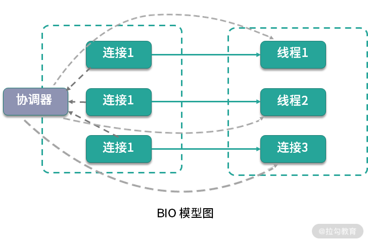
如上图，是典型的BIO 模型，每当有一个连接到来，经过协调器的处理，就开启一个对应的线程进行接管。如果连接有 1000 条，那就需要 1000 个线程。
线程资源是非常昂贵的，除了占用大量的内存，还会占用非常多的 CPU 调度时间，所以 BIO 在连接非常多的情况下，效率会变得非常低。
下面的代码是使用 ServerSocket 实现的一个简单 Socket 服务器，监听在 8888 端口。
public class BIO {
static boolean stop = false;
public static void main(String[] args) throws Exception {
int connectionNum = 0;
int port = 8888;
ExecutorService service = Executors.newCachedThreadPool();
ServerSocket serverSocket = new ServerSocket(port);
while (!stop) {
if (10 == connectionNum) {
stop = true;
}
Socket socket = serverSocket.accept();
service.execute(() -> {
try {
Scanner scanner = new Scanner(socket.getInputStream());
PrintStream printStream = new PrintStream(socket.getOutputStream());
while (!stop) {
String s = scanner.next().trim();
printStream.println("PONG:" + s);
}
} catch (Exception ex) {
ex.printStackTrace();
}
});
connectionNum++;
}
service.shutdown();
serverSocket.close();
}
}
启动之后，使用 nc 命令进行连接测试，结果如下。
$ nc -v localhost 8888
Connection to localhost port 8888 [tcp/ddi-tcp-1] succeeded!
hello
PONG:hello
nice
PONG:nice
使用 “04 | 工具实践：如何获取代码性能数据？”提到的 JMC 工具，在录制期间发起多个连接，能够发现有多个线程在运行，和连接数是一一对应的。
可以看到，BIO 的读写操作是阻塞的，线程的整个生命周期和连接的生命周期是一样的，而且不能够被复用。
就单个阻塞 I/O 来说，它的效率并不比 NIO 慢。但是当服务的连接增多，考虑到整个服务器的资源调度和资源利用率等因素，NIO 就有了显著的效果，NIO 非常适合高并发场景。
非阻塞 I/O 模型
其实，在处理 I/O 动作时，有大部分时间是在等待。比如，socket 连接要花费很长时间进行连接操作，在完成连接的这段时间内，它并没有占用额外的系统资源，但它只能阻塞等待在线程中。这种情况下，系统资源并不能被合理利用。
Java 的 NIO，在 Linux 上底层是使用 epoll 实现的。epoll 是一个高性能的多路复用 I/O 工具，改进了 select 和 poll 等工具的一些功能。在网络编程中，对 epoll 概念的一些理解，几乎是面试中必问的问题。
epoll 的数据结构是直接在内核上进行支持的，通过 epoll_create 和 epoll_ctl 等函数的操作，可以构造描述符（fd）相关的事件组合（event）。
这里有两个比较重要的概念：
- fd 每条连接、每个文件，都对应着一个描述符，比如端口号。内核在定位到这些连接的时候，就是通过 fd 进行寻址的。
- event 当 fd 对应的资源，有状态或者数据变动，就会更新 epoll_item 结构。在没有事件变更的时候，epoll 就阻塞等待，也不会占用系统资源；一旦有新的事件到来，epoll 就会被激活，将事件通知到应用方。
关于 epoll 还会有一个面试题，相对于 select，epoll 有哪些改进？
你可以这样回答：
- epoll 不再需要像 select 一样对 fd 集合进行轮询，也不需要在调用时将 fd 集合在用户态和内核态进行交换；
- 应用程序获得就绪 fd 的事件复杂度，epoll 是 O(1)，select 是 O(n)；
- select 最大支持约 1024 个 fd，epoll 支持 65535个；
- select 使用轮询模式检测就绪事件，epoll 采用通知方式，更加高效。
我们还是以 Java 中的 NIO 代码为例，来看一下 NIO 的具体概念。
public class NIO {
static boolean stop = false;
public static void main(String[] args) throws Exception {
int connectionNum = 0;
int port = 8888;
ExecutorService service = Executors.newCachedThreadPool();
ServerSocketChannel ssc = ServerSocketChannel.open();
ssc.configureBlocking(false);
ssc.socket().bind(new InetSocketAddress("localhost", port));
Selector selector = Selector.open();
ssc.register(selector, ssc.validOps());
while (!stop) {
if (10 == connectionNum) {
stop = true;
}
int num = selector.select();
if (num == 0) {
continue;
}
Iterator<SelectionKey> events = selector.selectedKeys().iterator();
while (events.hasNext()) {
SelectionKey event = events.next();
if (event.isAcceptable()) {
SocketChannel sc = ssc.accept();
sc.configureBlocking(false);
sc.register(selector, SelectionKey.OP_READ);
connectionNum++;
} else if (event.isReadable()) {
try {
SocketChannel sc = (SocketChannel) event.channel();
ByteBuffer buf = ByteBuffer.allocate(1024);
int size = sc.read(buf);
if(-1==size){
sc.close();
}
String result = new String(buf.array()).trim();
ByteBuffer wrap = ByteBuffer.wrap(("PONG:" + result).getBytes());
sc.write(wrap);
} catch (Exception ex) {
ex.printStackTrace();
}
} else if (event.isWritable()) {
SocketChannel sc = (SocketChannel) event.channel();
}
events.remove();
}
}
service.shutdown();
ssc.close();
}
}
上面这段代码比较长，是使用 NIO 实现的和 BIO 相同的功能。从它的 API 设计上，我们就能够看到 epoll 的一些影子。
首先，我们创建了一个服务端 ssc，并开启一个新的事件选择器，监听它的 OP_ACCEPT 事件。
ServerSocketChannel ssc = ServerSocketChannel.open();
Selector selector = Selector.open();
ssc.register(selector, ssc.validOps());
共有 4 种事件类型，分别是：
- 新连接事件（OP_ACCEPT）；
- 连接就绪事件（OP_CONNECT）；
- 读就绪事件（OP_READ）；
- 写就绪事件（OP_WRITE）。
任何网络和文件操作，都可以抽象成这四个事件。

接下来，在 while 循环里，使用 select 函数，阻塞在主线程里。所谓阻塞，就是操作系统不再分配 CPU 时间片到当前线程中，所以 select 函数是几乎不占用任何系统资源的。
int num = selector.select();
一旦有新的事件到达，比如有新的连接到来，主线程就能够被调度到，程序就能够向下执行。这时候，就能够根据订阅的事件通知，持续获取订阅的事件。 由于注册到 selector 的连接和事件可能会有多个，所以这些事件也会有多个。我们使用安全的迭代器循环进行处理，在处理完毕之后，将它删除。
这里留一个思考题：如果事件不删除的话，或者漏掉了某个事件的处理，会有什么后果？
Iterator<SelectionKey> events = selector.selectedKeys().iterator();
while (events.hasNext()) {
SelectionKey event = events.next();
...
events.remove();
}
}
有新的连接到达时，我们订阅了更多的事件。对于我们的数据读取来说，对应的事件就是 OP_READ。和 BIO 编程面向流的方式不同，NIO 操作的对象是抽象的概念 Channel，通过缓冲区进行数据交换。
SocketChannel sc = ssc.accept();
sc.configureBlocking(false);
sc.register(selector, SelectionKey.OP_READ);
值得注意的是：服务端和客户端的实现方式，可以是不同的。比如，服务端是 NIO，客户端可以是 BIO，它们并没有什么强制要求。
另外一个面试时候经常问到的事件就是 OP_WRITE。我们上面提到过，这个事件是表示写就绪的，当底层的缓冲区有空闲，这个事件就会一直发生，浪费占用 CPU 资源。所以，我们一般是不注册 OP_WRITE 的。
这里还有一个细节，在读取数据的时候，并没有像 BIO 的方式一样使用循环来获取数据。
如下面的代码，我们创建了一个 1024 字节的缓冲区，用于数据的读取。如果连接中的数据，大于 1024 字节怎么办？
SocketChannel sc = (SocketChannel) event.channel();
ByteBuffer buf = ByteBuffer.allocate(1024);
int size = sc.read(buf);
这涉及两种事件的通知机制：
- 水平触发(level-triggered) 称作 LT 模式。只要缓冲区有数据，事件就会一直发生
- 边缘触发(edge-triggered) 称作 ET 模式。缓冲区有数据，仅会触发一次。事件想要再次触发，必须先将 fd 中的数据读完才行
可以看到，Java 的 NIO 采用的就是水平触发的方式。LT 模式频繁环唤醒线程，效率相比较ET模式低，所以 Netty 使用 JNI 的方式，实现了 ET 模式，效率上更高一些。
Reactor 模式
了解了 BIO 和 NIO 的一些使用方式，Reactor 模式就呼之欲出了。
NIO 是基于事件机制的，有一个叫作 Selector 的选择器，阻塞获取关注的事件列表。获取到事件列表后，可以通过分发器，进行真正的数据操作。

该图来自 Doug Lea 的《Scalable IO in Java》，该图指明了最简单的 Reactor 模型的基本元素。
你可以回看下我在上文举例的 “Java 中的 NIO 代码”，对比分析一下，你会发现 Reactor
模型 里面有四个主要元素：
- Acceptor处理 client 的连接，并绑定具体的事件处理器；
- Event具体发生的事件，比如图中s的read、send等；
- Handler执行具体事件的处理者，比如处理读写事件的具体逻辑；
- Reactor将具体的事件分配（dispatch）给 Handler。
我们可以对上面的模型进行进一步细化，如下图所示，将 Reactor 分为 mainReactor 和 subReactor 两部分。
该图来自 Doug Lea 的 《Scalable IO in Java》
- mainReactor负责监听处理新的连接，然后将后续的事件处理交给 subReactor；
- subReactor对事件处理的方式，也由阻塞模式变成了多线程处理，引入了任务队列的模式。
熟悉 Netty 的同学可以看到，这个 Reactor 模型就是 Netty 设计的基础。在 Netty 中，Boss 线程对应着对连接的处理和分派，相当于 mainReactor；Worker 线程对应着 subReactor，使用多线程负责读写事件的分发和处理。
这种模式将每个组件的职责分得更细，耦合度也更低，能有效解决 C10k 问题。
AIO
关于 NIO 的概念，误解还是比较多的。
面试官可能会问你：为什么我在使用 NIO 时，使用 Channel 进行读写，socket 的操作依然是阻塞的？NIO 的作用主要体现在哪里？
//这行代码是阻塞的
int size = sc.read(buf);
这时你可以回答：NIO 只负责对发生在 fd 描述符上的事件进行通知。事件的获取和通知部分是非阻塞的，但收到通知之后的操作，却是阻塞的，即使使用多线程去处理这些事件，它依然是阻塞的。
AIO 更近一步，将这些对事件的操作也变成非阻塞的。下面是一段典型的 AIO 代码，它通过注册 CompletionHandler 回调函数进行事件处理。这里的事件是隐藏的，比如 read 函数，它不仅仅代表 Channel 可读了，而且会把数据自动的读取到 ByteBuffer 中。等完成了读取，就会通过回调函数通知你，进行后续的操作。
public class AIO {
public static void main(String[] args) throws Exception {
int port = 8888;
AsynchronousServerSocketChannel ssc = AsynchronousServerSocketChannel.open();
ssc.bind(new InetSocketAddress("localhost", port));
ssc.accept(null, new CompletionHandler<AsynchronousSocketChannel, Object>() {
void job(final AsynchronousSocketChannel sc) {
ByteBuffer buffer = ByteBuffer.allocate(1024);
sc.read(buffer, buffer, new CompletionHandler<Integer, ByteBuffer>() {
@Override
public void completed(Integer result, ByteBuffer attachment) {
String str = new String(attachment.array()).trim();
ByteBuffer wrap = ByteBuffer.wrap(("PONG:" + str).getBytes());
sc.write(wrap, null, new CompletionHandler<Integer, Object>() {
@Override
public void completed(Integer result, Object attachment) {
job(sc);
}
@Override
public void failed(Throwable exc, Object attachment) {
System.out.println("error");
}
});
}
@Override
public void failed(Throwable exc, ByteBuffer attachment) {
System.out.println("error");
}
});
}
@Override
public void completed(AsynchronousSocketChannel sc, Object attachment) {
ssc.accept(null, this);
job(sc);
}
@Override
public void failed(Throwable exc, Object attachment) {
exc.printStackTrace();
System.out.println("error");
}
});
Thread.sleep(Integer.MAX_VALUE);
}
}
AIO 是 Java 1.7 加入的，理论上性能会有提升，但实际测试并不理想。这是因为，AIO主要处理对数据的自动读写操作。这些操作的具体逻辑，假如不放在框架中，也要放在内核中，并没有节省操作步骤，对性能的影响有限。而 Netty 的 NIO 模型加上多线程处理，在这方面已经做得很好，编程模式也比AIO简单。
所以，市面上对 AIO 的实践并不多，在采用技术选型的时候，一定要谨慎。
响应式编程
你可能听说过 Spring 5.0 的 WebFlux，WebFlux 是可以替代 Spring MVC 的一套解决方案，可以编写响应式的应用，两者之间的关系如下图所示：

Spring WebFlux 的底层使用的是 Netty，所以操作是异步非阻塞的，类似的组件还有 vert.x、akka、rxjava 等。
WebFlux 是运行在 project reactor 之上的一个封装，其根本特性是后者提供的，至于再底层的非阻塞模型，就是由 Netty 保证的了。
非阻塞的特性我们可以理解，那响应式又是什么概念呢？
响应式编程是一种面向数据流和变化传播的编程范式。这意味着可以在编程语言中很方便地表达静态或动态的数据流，而相关的计算模型会自动将变化的值，通过数据流进行传播。
这段话很晦涩，在编程方面，它表达的意思就是：把生产者消费者模式，使用简单的API 表示出来，并自动处理背压（Backpressure）问题。
背压，指的是生产者与消费者之间的流量控制，通过将操作全面异步化，来减少无效的等待和资源消耗。
Java 的 Lambda 表达式可以让编程模型变得非常简单，Java 9 更是引入了响应式流（Reactive Stream），方便了我们的操作。
比如，下面是 Spring Cloud GateWay 的 Fluent API 写法，响应式编程的 API 都是类似的。
public RouteLocator customerRouteLocator(RouteLocatorBuilder builder) {
return builder.routes()
.route(r -> r.path("/market/**")
.filters(f -> f.filter(new RequestTimeFilter())
.addResponseHeader("X-Response-Default-Foo", "Default-Bar"))
.uri("http://localhost:8080/market/list")
.order(0)
.id("customer_filter_router")
)
.build();
}
从传统的开发模式过渡到 Reactor 的开发模式，是有一定成本的，不过它确实能够提高我们应用程序的性能，至于是否采用，这取决于你在编程难度和性能之间的取舍。
小结
本课时，我们系统地学习了 BIO、NIO、AIO 等概念和基本的编程模型 Reactor，我们了解到：
- BIO 的线程模型是一个连接对应一个线程的，非常浪费资源；
- NIO通过对关键事件的监听，通过主动通知的方式完成非阻塞操作，但它对事件本身的处理依然是非阻塞的；
- AIO 完全是异步非阻塞的，但现实中使用很少。
使用 Netty 的多 Acceptor 模式和多线程模式，我们能够方便地完成类似 AIO 这样的操作。Netty 的事件触发机制使用了高效的 ET 模式，使得支持的连接更多，性能更高。
使用 Netty，能够构建响应式编程的基础，加上类似 Lambda 表达式这样的书写风格，能够完成类似 WebFlux 这样的响应式框架。响应式编程是一个趋势，现在有越来越多的框架和底层的数据库支持响应式编程，我们的应用响应也会更加迅速。
16 案例分析：常见 Java 代码优化法则
回顾一下 06 课时到 15 课时，我们分别了解缓冲、缓存、池化对象、大对象复用、并行计算、锁优化、NIO 等优化方法，它们对性能的提升往往是质的飞跃。
但语言本身对性能也是有影响的，比如就有很多公司就因为语言的特性由 Java 切换到 Golang。对于 Java 语言来说，也有它的一套优化法则，这些细微的性能差异，经过多次调用和迭代，会产生越来越大的影响。
本课时将集中讲解一些常用的代码优化法则，从而在编码中保持好的习惯，让代码保持最优状态。
代码优化法则
1.使用局部变量可避免在堆上分配
由于堆资源是多线程共享的，是垃圾回收器工作的主要区域，过多的对象会造成 GC 压力。可以通过局部变量的方式，将变量在栈上分配。这种方式变量会随着方法执行的完毕而销毁，能够减轻 GC 的压力。
2.减少变量的作用范围
注意变量的作用范围，尽量减少对象的创建。如下面的代码，变量 a 每次进入方法都会创建，可以将它移动到 if 语句内部。
public void test1(String str) {
final int a = 100;
if (!StringUtils.isEmpty(str)) {
int b = a * a;
}
}
3.访问静态变量直接使用类名
有的同学习惯使用对象访问静态变量，这种方式多了一步寻址操作，需要先找到变量对应的类，再找到类对应的变量，如下面的代码：
public class StaticCall {
public static final int A = 1;
void test() {
System.out.println(this.A);
System.out.println(StaticCall.A);
}
}
对应的字节码为：
void test();
descriptor: ()V
flags:
Code:
stack=2, locals=1, args_size=1
0: getstatic #2 // Field java/lang/System.out:Ljava/io/PrintStream;
3: aload_0
4: pop
5: iconst_1
6: invokevirtual #3 // Method java/io/PrintStream.println:(I)V
9: getstatic #2 // Field java/lang/System.out:Ljava/io/PrintStream;
12: iconst_1
13: invokevirtual #3 // Method java/io/PrintStream.println:(I)V
16: return
LineNumberTable:
line 5: 0
line 6: 9
line 7: 16
可以看到使用 this 的方式多了一个步骤。
4.字符串拼接使用 StringBuilder
字符串拼接，使用 StringBuilder 或者 StringBuffer，不要使用 + 号。比如下面这段代码，在循环中拼接了字符串。
public String test() {
String str = "-1";
for (int i = 0; i < 10; i++) {
str += i;
}
return str;
}
从下面对应的字节码内容可以看出，它在每个循环里都创建了一个 StringBuilder 对象。所以，我们在平常的编码中，显式地创建一次即可。
5: iload_2
6: bipush 10
8: if_icmpge 36
11: new #3 // class java/lang/StringBuilder
14: dup
15: invokespecial #4 // Method java/lang/StringBuilder."<init>":()V
18: aload_1
19: invokevirtual #5 // Method java/lang/StringBuilder.append:(Ljava/lang/String;)Ljava/lang/StringBuilder;
22: iload_2
23: invokevirtual #6 // Method java/lang/StringBuilder.append:(I)Ljava/lang/StringBuilder;
26: invokevirtual #7 // Method java/lang/StringBuilder.toString:()Ljava/lang/String;
29: astore_1
30: iinc 2, 1
33: goto 5
5.重写对象的 HashCode，不要简单地返回固定值
在代码 review 的时候，我发现有开发重写 HashCode 和 Equals 方法时，会把 HashCode 的值返回固定的 0，而这样做是不恰当的。
当这些对象存入 HashMap 时，性能就会非常低，因为 HashMap 是通过 HashCode 定位到 Hash 槽，有冲突的时候，才会使用链表或者红黑树组织节点。固定地返回 0，相当于把 Hash 寻址功能给废除了。
6.HashMap 等集合初始化的时候，指定初始值大小
这个原则参见 “10 | 案例分析：大对象复用的目标和注意点”，这样的对象有很多，比如 ArrayList，StringBuilder 等，通过指定初始值大小可减少扩容造成的性能损耗。
7.遍历 Map 的时候，使用 EntrySet 方法
使用 EntrySet 方法，可以直接返回 set 对象，直接拿来用即可；而使用 KeySet 方法，获得的是key 的集合，需要再进行一次 get 操作，多了一个操作步骤。所以更推荐使用 EntrySet 方式遍历 Map。
8.不要在多线程下使用同一个 Random
Random 类的 seed 会在并发访问的情况下发生竞争，造成性能降低，建议在多线程环境下使用 ThreadLocalRandom 类。
在 Linux 上，通过加入 JVM 配置 -Djava.security.egd=file:/dev/./urandom，使用 urandom 随机生成器，在进行随机数获取时，速度会更快。
9.自增推荐使用 LongAddr
自增运算可以通过 synchronized 和 volatile 的组合，或者也可以使用原子类（比如 AtomicLong）。
后者的速度比前者要高一些，AtomicLong 使用 CAS 进行比较替换，在线程多的情况下会造成过多无效自旋，所以可以使用 LongAdder 替换 AtomicLong 进行进一步的性能提升。
10.不要使用异常控制程序流程
异常，是用来了解并解决程序中遇到的各种不正常的情况，它的实现方式比较昂贵，比平常的条件判断语句效率要低很多。
这是因为异常在字节码层面，需要生成一个如下所示的异常表（Exception table），多了很多判断步骤。
Exception table:
from to target type
7 17 20 any
20 23 20 any
所以，尽量不要使用异常控制程序流程。
11.不要在循环中使用 try catch
道理与上面类似，很多文章介绍，不要把异常处理放在循环里，而应该把它放在最外层，但实际测试情况表明这两种方式性能相差并不大。
既然性能没什么差别，那么就推荐根据业务的需求进行编码。比如，循环遇到异常时，不允许中断，也就是允许在发生异常的时候能够继续运行下去，那么异常就只能在 for 循环里进行处理。
12.不要捕捉 RuntimeException
Java 异常分为两种，一种是可以通过预检查机制避免的 RuntimeException；另外一种就是普通异常。
其中，RuntimeException 不应该通过 catch 语句去捕捉，而应该使用编码手段进行规避。
如下面的代码，list 可能会出现数组越界异常。是否越界是可以通过代码提前判断的，而不是等到发生异常时去捕捉。提前判断这种方式，代码会更优雅，效率也更高。
//BAD
public String test1(List<String> list, int index) {
try {
return list.get(index);
} catch (IndexOutOfBoundsException ex) {
return null;
}
}
//GOOD
public String test2(List<String> list, int index) {
if (index >= list.size() || index < 0) {
return null;
}
return list.get(index);
}
13.合理使用 PreparedStatement
PreparedStatement 使用预编译对 SQL 的执行进行提速，大多数数据库都会努力对这些能够复用的查询语句进行预编译优化，并能够将这些编译结果缓存起来。
这样等到下次用到的时候，就可以很快进行执行，也就少了一步对 SQL 的解析动作。
PreparedStatement 还能提高程序的安全性，能够有效防止 SQL 注入。
但如果你的程序每次 SQL 都会变化，不得不手工拼接一些数据，那么 PreparedStatement 就失去了它的作用，反而使用普通的 Statement 速度会更快一些。
14.日志打印的注意事项
我们在“06 | 案例分析：缓冲区如何让代码加速”中了解了 logback 的异步日志，日志打印还有一些其他要注意的事情。
我们平常会使用 debug 输出一些调试信息，然后在线上关掉它。如下代码：
logger.debug("xjjdog:"+ topic + " is awesome" );
程序每次运行到这里，都会构造一个字符串，不管你是否把日志级别调试到 INFO 还是 WARN，这样效率就会很低。
可以在每次打印之前都使用 isDebugEnabled 方法判断一下日志级别，代码如下：
if(logger.isDebugEnabled()) {
logger.debug("xjjdog:"+ topic + " is awesome" );
}
使用占位符的方式，也可以达到相同的效果，就不用手动添加 isDebugEnabled 方法了，代码也优雅得多。
logger.debug("xjjdog:{} is awesome" ,topic);
对于业务系统来说，日志对系统的性能影响非常大，不需要的日志，尽量不要打印，避免占用 I/O 资源。
15.减少事务的作用范围
如果的程序使用了事务，那一定要注意事务的作用范围，尽量以最快的速度完成事务操作。这是因为，事务的隔离性是使用锁实现的，可以类比使用 “13 | 案例分析：多线程锁的优化” 中的多线程锁进行优化。
@Transactional
public void test(String id){
String value = rpc.getValue(id); //高耗时
testDao.update(sql,value);
}
如上面的代码，由于 rpc 服务耗时高且不稳定，就应该把它移出到事务之外，改造如下：
public void test(String id){
String value = rpc.getValue(id); //高耗时
testDao(value);
}
@Transactional
public void testDao(String value){
testDao.update(value);
}
这里有一点需要注意的地方，由于 SpringAOP 的原因，@Transactional 注解只能用到 public 方法上，如果用到 private 方法上，将会被忽略，这也是面试经常问的考点之一。
16.使用位移操作替代乘除法
计算机是使用二进制表示的，位移操作会极大地提高性能。
- << 左移相当于乘以 2；
- >> 右移相当于除以 2；
- >>> 无符号右移相当于除以 2，但它会忽略符号位，空位都以 0 补齐。
int a = 2;
int b = (a++) << (++a) + (++a);
System.out.println(b);
注意：位移操作的优先级非常低，所以上面的代码，输出是 1024。
17.不要打印大集合或者使用大集合的 toString 方法
有的开发喜欢将集合作为字符串输出到日志文件中，这个习惯是非常不好的。
拿 ArrayList 来说，它需要遍历所有的元素来迭代生成字符串。在集合中元素非常多的情况下，这不仅会占用大量的内存空间，执行效率也非常慢。我曾经就遇到过这种批量打印方式造成系统性能直线下降的实际案例。
下面这段代码，就是 ArrayList 的 toString 方法。它需要生成一个迭代器，然后把所有的元素内容拼接成一个字符串，非常浪费空间。
public String toString() {
Iterator<E> it = iterator();
if (! it.hasNext())
return "[]";
StringBuilder sb = new StringBuilder();
sb.append('[');
for (;;) {
E e = it.next();
sb.append(e == this ? "(this Collection)" : e);
if (! it.hasNext())
return sb.append(']').toString();
sb.append(',').append(' ');
}
}
18.程序中少用反射
反射的功能很强大，但它是通过解析字节码实现的，性能就不是很理想。
现实中有很多对反射的优化方法，比如把反射执行的过程（比如 Method）缓存起来，使用复用来加快反射速度。
Java 7.0 之后，加入了新的包 java.lang.invoke，同时加入了新的 JVM 字节码指令 invokedynamic，用来支持从 JVM 层面，直接通过字符串对目标方法进行调用。
如果你对性能有非常苛刻的要求，则使用 invoke 包下的 MethodHandle 对代码进行着重优化,但它的编程不如反射方便，在平常的编码中，反射依然是首选。
下面是一个使用 MethodHandle 编写的代码实现类。它可以完成一些动态语言的特性，通过方法名称和传入的对象主体，进行不同的调用，而 Bike 和 Man 类，可以是没有任何关系的。
import java.lang.invoke.MethodHandle;
import java.lang.invoke.MethodHandles;
import java.lang.invoke.MethodType;
public class MethodHandleDemo {
static class Bike {
String sound() {
return "ding ding";
}
}
static class Animal {
String sound() {
return "wow wow";
}
}
static class Man extends Animal {
@Override
String sound() {
return "hou hou";
}
}
String sound(Object o) throws Throwable {
MethodHandles.Lookup lookup = MethodHandles.lookup();
MethodType methodType = MethodType.methodType(String.class);
MethodHandle methodHandle = lookup.findVirtual(o.getClass(), "sound", methodType);
String obj = (String) methodHandle.invoke(o);
return obj;
}
public static void main(String[] args) throws Throwable {
String str = new MethodHandleDemo().sound(new Bike());
System.out.println(str);
str = new MethodHandleDemo().sound(new Animal());
System.out.println(str);
str = new MethodHandleDemo().sound(new Man());
System.out.println(str);
}
}
19.正则表达式可以预先编译，加快速度
Java 的正则表达式需要先编译再使用。
典型代码如下：
Pattern pattern = Pattern.compile({pattern});
Matcher pattern = pattern.matcher({content});
Pattern 编译非常耗时，它的 Matcher 方法是线程安全的，每次调用方法这个方法都会生成一个新的 Matcher 对象。所以，一般 Pattern 初始化一次即可，可以作为类的静态成员变量。
案例分析
案例 1：正则表达式和状态机
正则表达式的执行效率是非常慢的，尤其是贪婪模式。
下面介绍一个我在实际工作中对正则的一个优化，使用状态机完成字符串匹配。
考虑到下面的一个 SQL 语句，它的语法类似于 NamedParameterJdbcTemplate，但我们对它做了增强。SQL 接收两个参数：smallId 和 firstName，当 firstName 为空的时候，处在 ##{} 之间的语句将被抹去。
select * from USERS
where id>:smallId
##{
and FIRST_NAME like concat('%',:firstName,'%') }
可以看到，使用正则表达式可以很容易地实现这个功能。
#\{(.*?:([a-zA-Z0-9_]+).*?)\}
通过定义上面这样一个正则匹配，使用 Pattern 的 group 功能便能提取到相应的字符串。我们把匹配到的字符串保存下来，最后使用 replace 函数，将它替换成空字符串即可。
结果在实际使用的时候，发现正则的解析速度特别慢，尤其是在 SQL 非常大的时候，这种情况下，可以使用状态机去优化。我这里选用的是 ragel，你也可以使用类似 javacc 或者 antlr 之类的工具。它通过语法解析和简单的正则表达式，最终可以生成 Java 语法的代码。
生成的代码一般是不可读的，我们只关注定义文件即可。如下定义文件代码所示，通过定义一批描述符和处理程序，使用一些中间数据结构对结果进行缓存，只需要对 SQL 扫描一遍，即可获取相应的结果。
pairStart = '#{';
pairEnd = '}';
namedQueryStringFull = ( ':'alnum+)
>buffer
%namedQueryStringFull
;
pairBlock =
(pairStart
any*
namedQueryStringFull
any*
pairEnd)
>pairBlockBegin %pairBlockEnd
;
main := any* pairBlock any*;
把文件定义好之后，即可通过 ragel 命令生成 Java 语法的最终文件。
ragel -G2 -J -o P.java P.rl
完整的代码有点复杂，我已经放到了仓库中，你可以实际分析一下。
我们来看一下它的性能。从测试结果可以看到，ragel 模式的性能是 regex 模式的 3 倍还多，SQL 越长，效果越明显。
Benchmark Mode Cnt Score Error Units
RegexVsRagelBenchmark.ragel thrpt 10 691.224 ± 446.217 ops/ms
RegexVsRagelBenchmark.regex thrpt 10 201.322 ± 47.056 ops/ms
案例 2：HikariCP 的字节码修改
在 “09 | 案例分析：池化对象的应用场景” 中，我们提到了 HikariCP 对字节码的修改，这个职责是由 JavassistProxyFactory 类来管理的。Javassist 是一个字节码类库，HikariCP 就是用它对字节码进行修改。
如下图所示，这是工厂类的主要方法。
它通过 generateProxyClass 生成代理类，主要是针对 Connection、Statement、ResultSet、DatabaseMetaData 等 jdbc 的核心接口。
右键运行这个类，可以看到代码生成了一堆 Class 文件。
Generating com.zaxxer.hikari.pool.HikariProxyConnection
Generating com.zaxxer.hikari.pool.HikariProxyStatement
Generating com.zaxxer.hikari.pool.HikariProxyResultSet
Generating com.zaxxer.hikari.pool.HikariProxyDatabaseMetaData
Generating com.zaxxer.hikari.pool.HikariProxyPreparedStatement
Generating com.zaxxer.hikari.pool.HikariProxyCallableStatement
Generating method bodies for com.zaxxer.hikari.proxy.ProxyFactory
对于这一部分的代码组织，使用了设计模式中的委托模式。我们发现 HikariCP 源码中的代理类，比如 ProxyConnection，都是 abstract 的，它的具体实例就是使用 javassist 生成的 class 文件。反编译这些生成的 class 文件，可以看到它实际上是通过调用父类中的委托对象进行处理的。

这么做有两个好处：
- 第一，在代码中只需要实现需要修改的 JDBC 接口方法，其他的交给代理类自动生成的代码，极大地减少了编码数量。
- 第二，出现问题时，可以通过 checkException 函数对错误进行统一处理。
另外，我们注意到 ProxyFactory 类中的方法，都是静态方法，而不是通过单例实现的。为什么这么做呢？这就涉及 JVM 底层的两个字节码指令：invokestatic 和 invokevirtual。
下面是两种不同类型调用的字节码。
- invokevirtual
public final java.sql.PreparedStatement prepareStatement(java.lang.String, java.lang.String[]) throws java.sql.SQLException;
flags: ACC_PRIVATE, ACC_FINAL
Code:
stack=5, locals=3, args_size=3
0: getstatic #59 // Field PROXY_FACTORY:Lcom/zaxxer/hikari/proxy/ProxyFactory;
3: aload_0
4: aload_0
5: getfield #3 // Field delegate:Ljava/sql/Connection;
8: aload_1
9: aload_2
10: invokeinterface #74, 3 // InterfaceMethod java/sql/Connection.prepareStatement:(Ljava/lang/String;[Ljava/lang/String;)Ljava/sql/PreparedStatement;
15: invokevirtual #69 // Method com/zaxxer/hikari/proxy/ProxyFactory.getProxyPreparedStatement:(Lcom/zaxxer/hikari/proxy/ConnectionProxy;Ljava/sql/PreparedStatement;)Ljava/sql/PreparedStatement;
18: return
- invokestatic
private final java.sql.PreparedStatement prepareStatement(java.lang.String, java.lang.String[]) throws java.sql.SQLException;
flags: ACC_PRIVATE, ACC_FINAL
Code:
stack=4, locals=3, args_size=3
0: aload_0
1: aload_0
2: getfield #3 // Field delegate:Ljava/sql/Connection;
5: aload_1
6: aload_2
7: invokeinterface #72, 3 // InterfaceMethod java/sql/Connection.prepareStatement:(Ljava/lang/String;[Ljava/lang/String;)Ljava/sql/PreparedStatement;
12: invokestatic #67 // Method com/zaxxer/hikari/proxy/ProxyFactory.getProxyPreparedStatement:(Lcom/zaxxer/hikari/proxy/ConnectionProxy;Ljava/sql/PreparedStatement;)Ljava/sql/PreparedStatement;
15: areturn
大多数普通方法调用，使用的是invokevirtual指令，属于虚方法调用。
很多时候，JVM 需要根据调用者的动态类型，来确定调用的目标方法，这就是动态绑定的过程；相对比，invokestatic指令，就属于静态绑定过程，能够直接识别目标方法，效率会高那么一点点。
虽然 HikariCP 的这些优化有点吹毛求疵，但我们能够从中看到 HikariCP 这些追求性能极致的编码技巧。
小结
此外，学习 Java 规范，你还可以细读《阿里巴巴 Java 开发规范》，里面也有很多有意义的建议。
其实语言层面的性能优化，都是在各个资源之间的权衡（比如开发时间、代码复杂度、扩展性等）。这些法则也不是一成不变的教条，这就要求我们在编码中选择合适的工具，根据实际的工作场景进行灵活变动。
接下来，我们将进入“模块四：JVM 优化”，下一课时我将讲解 “17 | 高级进阶：JVM 如何完成垃圾回收？” ，带你向高级进阶。
17 高级进阶：JVM 如何完成垃圾回收？
从本课时开始，我们将集中讲解一下 JVM（Java Virtual Machine）的基本知识点。Java 中的一些代码优化技巧，和JVM的关系非常的大，比如逃逸分析对非捕获型 Lambda 表达式的优化。
在进行这些优化之前，你需要对 JVM 的一些运行原理有较深刻的认识，在优化时才会有针对性的方向。
另外，本课时的知识点，全部是面试的高频题目，这也从侧面看出 JVM 理论知识的重要性。
JVM 内存区域划分
学习 JVM，内存区域划分是绕不过去的知识点，这几乎是面试必考的题目。如下图所示，内存区域划分主要包括堆、Java 虚拟机栈、程序计数器、本地方法栈、元空间和直接内存这五部分，我将逐一介绍。
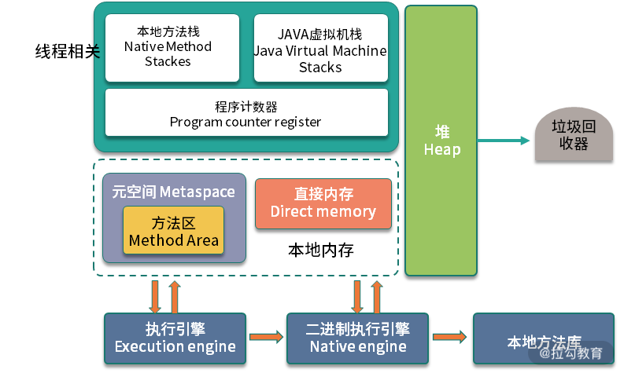
JVM 内存区域划分图
1.堆
如 JVM 内存区域划分图所示，JVM 中占用内存最大的区域，就是堆（Heap），我们平常编码创建的对象，大多数是在这上面分配的，也是垃圾回收器回收的主要目标区域。
2.Java 虚拟机栈
JVM 的解释过程是基于栈的，程序的执行过程也就是入栈出栈的过程，这也是 Java 虚拟机栈这个名称的由来。
Java 虚拟机栈是和线程相关的。当你启动一个新的线程，Java 就会为它分配一个虚拟机栈，之后所有这个线程的运行，都会在栈里进行。
Java 虚拟机栈，从方法入栈到具体的字节码执行，其实是一个双层的栈结构，也就是栈里面还包含栈。

Java 虚拟机栈图
如上图，Java 虚拟机栈里的每一个元素，叫作栈帧。每一个栈帧，包含四个区域： 局部变量表 、操作数栈、动态连接和返回地址。
其中，操作数栈就是具体的字节码指令所操作的栈区域，考虑到下面这段代码：
public void test(){
int a = 1;
a++;
}
JVM 将会为 test 方法生成一个栈帧，然后入栈，等 test 方法执行完毕，就会将对应的栈帧弹出。在对变量 a 进行加一操作的时候，就会对栈帧中的操作数栈运用相关的字节码指令。
3.程序计数器
既然是线程，就要接受操作系统的调度，但总有时候，某些线程是获取不到 CPU 时间片的，那么当这个线程恢复执行的时候，它是如何确保找到切换之前执行的位置呢？这就是程序计数器的功能。
和 Java 虚拟机栈一样，它也是线程私有的。程序计数器只需要记录一个执行位置就可以，所以不需要太大的空间。事实上，程序计数器是 JVM 规范中唯一没有规定 OutOfMemoryError 情况的区域。
4.本地方法栈
与 Java 虚拟机栈类似，本地方法栈，是针对 native 方法的。我们常用的 HotSpot，将 Java 虚拟机栈和本地方法栈合二为一，其实就是一个本地方法栈，大家注意规范里的这些差别就可以了。
5.元空间
元空间是一个容易引起混淆的区域，原因就在于它经历了多次迭代才成为现在的模样。关于这部分区域，我们来讲解两个面试题，大家就明白了。
- 元空间是在堆上吗？
答案：元空间并不是在堆上分配的，而是在堆外空间进行分配的，它的大小默认没有上限，我们常说的方法区，就在元空间中。
- 字符串常量池在那个区域中？
答案：这个要看 JDK 版本。
在 JDK 1.8 之前，是没有元空间这个概念的，当时的方法区是放在一个叫作永久代的空间中。
而在 JDK 1.7 之前，字符串常量池也放在这个叫作永久带的空间中。但在 JDK 1.7 版本，已经将字符串常量池从永久带移动到了堆上。
所以，从 1.7 版本开始，字符串常量池就一直存在于堆上。
6.直接内存
直接内存，指的是使用了 Java 的直接内存 API，进行操作的内存。这部分内存可以受到 JVM 的管控，比如 ByteBuffer 类所申请的内存，就可以使用具体的参数进行控制。
需要注意的是直接内存和本地内存不是一个概念。
- 直接内存比较专一，有具体的 API（这里指的是ByteBuffer），也可以使用 -XX:MaxDirectMemorySize 参数控制它的大小；
- 本地内存是一个统称，比如使用 native 函数操作的内存就是本地内存，本地内存的使用 JVM 是限制不住的，使用的时候一定要小心。
GC Roots
对象主要是在堆上分配的，我们可以把它想象成一个池子，对象不停地创建，后台的垃圾回收进程不断地清理不再使用的对象。当内存回收的速度，赶不上对象创建的速度，这个对象池子就会产生溢出，也就是我们常说的 OOM。
把不再使用的对象及时地从堆空间清理出去，是避免 OOM 有效的方法。那 JVM 是如何判断哪些对象应该被清理，哪些对象需要被继续使用呢？
这里首先强调一个概念，这对理解垃圾回收的过程非常有帮助，面试时也能很好地展示自己。
垃圾回收，并不是找到不再使用的对象，然后将这些对象清除掉。它的过程正好相反，JVM 会找到正在使用的对象，对这些使用的对象进行标记和追溯，然后一股脑地把剩下的对象判定为垃圾，进行清理。
了解了这个概念，我们就可以看下一些基本的衍生分析：
- GC 的速度，和堆内存活对象的多少有关，与堆内所有对象的数量无关；
- GC 的速度与堆的大小无关，32GB 的堆和 4GB 的堆，只要存活对象是一样的，垃圾回收速度也会差不多；
- 垃圾回收不必每次都把垃圾清理得干干净净，最重要的是不要把正在使用的对象判定为垃圾。
那么，如何找到这些存活对象，也就是哪些对象是正在被使用的，就成了问题的核心。
大家可以想一下写代码的时候，如果想要保证一个 HashMap 能够被持续使用，可以把它声明成静态变量，这样就不会被垃圾回收器回收掉。我们把这些正在使用的引用的入口，叫作GC Roots。
这种使用 tracing 方式寻找存活对象的方法，还有一个好听的名字，叫作可达性分析法。
概括来讲，GC Roots 包括：
- Java 线程中，当前所有正在被调用的方法的引用类型参数、局部变量、临时值等。也就是与我们栈帧相关的各种引用；
- 所有当前被加载的 Java 类；
- Java 类的引用类型静态变量；
- 运行时常量池里的引用类型常量（String 或 Class 类型）；
- JVM 内部数据结构的一些引用，比如 sun.jvm.hotspot.memory.Universe 类；
- 用于同步的监控对象，比如调用了对象的 wait() 方法；
- JNI handles，包括 global handles 和 local handles。
对于这个知识点，不要死记硬背，可以对比着 JVM 内存区域划分那张图去看，入口大约有三个：线程、静态变量和 JNI 引用。
强、软、弱、虚引用
那么，通过 GC Roots 能够追溯到的对象，就一定不会被垃圾回收吗？这要看情况。
Java 对象与对象之间的引用，存在着四种不同的引用级别，强度从高到低依次是：强引用、软引用、弱引用、虚引用。
- 强应用 默认的对象关系是强引用，也就是我们默认的对象创建方式。这种引用属于最普通最强硬的一种存在，只有在和 GC Roots 断绝关系时，才会被消灭掉。
- 软引用 用于维护一些可有可无的对象。在内存足够的时候，软引用对象不会被回收；只有在内存不足时，系统则会回收软引用对象；如果回收了软引用对象之后，仍然没有足够的内存，才会抛出内存溢出异常。
- 弱引用 级别就更低一些，当 JVM 进行垃圾回收时，无论内存是否充足，都会回收被弱引用关联的对象。软引用和弱引用在堆内缓存系统中使用非常频繁，可以在内存紧张时优先被回收掉。（我们在 “07 | 案例分析：无处不在的缓存，高并发系统的法宝” 就介绍过 Guava Cache 的这个特性。）
- 虚引用 是一种形同虚设的引用，在现实场景中用得不是很多。这里有一个冷门的知识点：Java 9.0 以后新加入了 Cleaner 类，用来替代 Object 类的 finalizer 方法，这就是虚引用的一种应用场景。
分代垃圾回收
上面我们提到，垃圾回收的速度，是和存活的对象数量有关系的，如果这些对象太多，JVM 再做标记和追溯的时候，就会很慢。
一般情况下，JVM 在做这些事情的时候，都会停止业务线程的所有工作，进入 SafePoint 状态，这也就是我们通常说的 Stop the World。所以，现在的垃圾回收器，有一个主要目标，就是减少 STW 的时间。
其中一种有效的方式，就是采用分代垃圾回收，减少单次回收区域的大小。这是因为，大部分对象，可以分为两类：
- 大部分对象的生命周期都很短
- 其他对象则很可能会存活很长时间
这个假设我们称之为弱代假设（weak generational hypothesis）。
如下图，分代垃圾回收器会在逻辑上，把堆空间分为两部分：年轻代（Young generation）和老年代（Old generation）。

堆空间划分图：年轻代和老年代
1.年轻代
年轻代中又分为一个伊甸园空间（Eden），两个幸存者空间（Survivor）。对象会首先在年轻代中的 Eden 区进行分配，当 Eden 区分配满的时候，就会触发年轻代的 GC。
此时，存活的对象会被移动到其中一个 Survivor 分区（以下简称 from）；年轻代再次发生垃圾回收，存活对象，包括 from 区中的存活对象，会被移动到 to 区。所以，from 和 to 两个区域，总有一个是空的。
Eden、from、to 的默认比例是 8:1:1，所以只会造成 10% 的空间浪费。这个比例，是由参数 -XX:SurvivorRatio 进行配置的（默认为 8）。
2.老年代
对垃圾回收的优化，就是要让对象尽快在年轻代就回收掉，减少到老年代的对象。那么对象是如何进入老年代的呢？它主要有以下四种方式。
- 正常提升（Promotion）
上面提到了年轻代的垃圾回收，如果对象能够熬过年轻代垃圾回收，它的年龄（age）就会加一，当对象的年龄达到一定阈值，就会被移动到老年代中。
- 分配担保
如果年轻代的空间不足，又有新的对象需要分配空间，就需要依赖其他内存（这里是老年代）进行分配担保，对象将直接在老年代创建。
- 大对象直接在老年代分配
超出某个阈值大小的对象，将直接在老年代分配，可以通过 -XX:PretenureSizeThreshold 配置这个阈值。
- 动态对象年龄判定
有的垃圾回收算法，并不要求 age 必须达到 15 才能晋升到老年代，它会使用一些动态的计算方法。比如 G1，通过 TargetSurvivorRatio 这个参数，动态更改对象提升的阈值。
老年代的空间一般比较大，回收的时间更长，当老年代的空间被占满了，将发生老年代垃圾回收。
目前，被广泛使用的是 G1 垃圾回收器。G1 的目标是用来干掉 CMS 的，它同样有年轻代和老年代的概念。不过，G1 把整个堆切成了很多份，把每一份当作一个小目标，部分上目标很容易达成。
如上图，G1 也是有 Eden 区和 Survivor 区的概念的，只不过它们在内存上不是连续的，而是由一小份一小份组成的。G1 在进行垃圾回收的时候，将会根据最大停顿时间（MaxGCPauseMillis）设置的值，动态地选取部分小堆区进行垃圾回收。
G1 的配置非常简单，我们只需要配置三个参数，一般就可以获取优异的性能：
① MaxGCPauseMillis 设置最大停顿的预定目标，G1 垃圾回收器会自动调整，选取特定的小堆区；
② G1HeapRegionSize 设置小堆区的大小；
③ InitiatingHeapOccupancyPercent 当整个堆内存使用达到一定比例（默认是45%），并发标记阶段就会被启动。
小结
本课时，我们主要介绍了 JVM 的内存区域划分，面试的时候，经常有同学把这个概念和 Java 的内存模型（JMM）搞混，这需要你特别注意。
JMM 指的是与多线程协作相关的主存与工作内存方面的内容，一定要和面试官确认好要问的问题。
这一课时我们主要介绍了堆、Java 虚拟机栈、程序计数器、本地方法栈、元空间、直接内存这六个概念。
接下来，我们看了 GC Roots 的概念，它是使用 tracing 方式的可达性分析法来实现的；在对象的引用关系上，还会有强、软、弱、虚的差别，而堆内缓存多是采用软引用或者弱引用。
最后我们看了分代垃圾回收的概念，了解了年轻代和老年代的一些回收策略。
JVM 的垃圾回收器更新很快，也有非常多的 JVM 版本，比如 Zing VM、Dalvik，目前被广泛应用的是 Hotspot，提供了海量的配置参数来支持我们的性能微调。
正如我刚刚所言，垃圾回收器的主要目标是保证回收效果的同时，提高吞吐量，减少 STW 的时间。
从 CMS 垃圾回收器，到 G1 垃圾回收器，再到现在支持 16TB 大小的 ZGC，垃圾回收器的演变越来越智能，配置参数也越来越少，能够达到开箱即用的效果。但无论使用哪种垃圾回收器，我们的编码方式还是会影响垃圾回收的效果，减少对象的创建，及时切断与不再使用对象的联系，是我们平常编码中一定要注意的。
最后留一个思考题：我们常说的对象，除了基本数据类型，一定是在堆上分配的吗？欢迎你在留言区与大家分享探讨，我将一一点评解答。
18 高级进阶：JIT 如何影响 JVM 的性能？
我们在上一课时，我们了解到 Java 虚拟机栈，其实是一个双层的栈，如下图所示，第一层就是针对 method 的栈帧，第二层是针对字节码指令的操作数栈。
Java 虚拟机栈图
栈帧的创建是需要耗费资源的，尤其是对于 Java 中常见的 getter、setter 方法来说，这些代码通常只有一行，每次都创建栈帧的话就太浪费了。
另外，Java 虚拟机栈对代码的执行，采用的是字节码解释的方式，考虑到下面这段代码，变量 a 声明之后，就再也不被使用，要是按照字节码指令解释执行的话，就要做很多无用功。
public class A{
int attr = 0;
public void test(){
int a = attr;
System.out.println("ok");
}
}
下面是这段代码的字节码指令，我们能够看到 aload_0，getfield ，istore_1 这三个无用的字节码指令操作。
public void test();
descriptor: ()V
flags: ACC_PUBLIC
Code:
stack=2, locals=2, args_size=1
0: aload_0
1: getfield #2 // Field attr:I
4: istore_1
5: getstatic #3 // Field java/lang/System.out:Ljava/io/PrintStream;
8: ldc #4 // String ok
10: invokevirtual #5 // Method java/io/PrintStream.println:(Ljava/lang/String;)V
13: return
LineNumberTable:
line 4: 0
line 5: 5
line 6: 13
另外，我们了解到垃圾回收器回收的目标区域主要是堆，堆上创建的对象越多，GC 的压力就越大。要是能把一些变量，直接在栈上分配，那 GC 的压力就会小一些。
其实，我们说的这几个优化的可能性，JVM 已经通过 JIT 编译器（Just In Time Compiler）去做了，JIT 最主要的目标是把解释执行变成编译执行。
为了提高热点代码的执行效率，在运行时，虚拟机将会把这些代码编译成与本地平台相关的机器码，并进行各种层次的优化，这就是 JIT 编译器的功能。
如上图，JVM 会将调用次数很高，或者在 for 循环里频繁被使用的代码，编译成机器码，然后缓存在 CodeCache 区域里，下次调用相同方法的时候，就可以直接使用。
那 JIT 编译都有哪些手段呢？接下来我们详细介绍。
方法内联
在 “05 | 工具实践：基准测试 JMH，精确测量方法性能” 提到 JMH 的时候，我们就了解到 CompilerControl 注解可以控制 JIT 编译器的一些行为。
其中，有一个模式叫作inline，就是内联的意思，它会把一些短小的方法体，直接纳入目标方法的作用范围之内，就像是直接在代码块中追加代码。这样，就少了一次方法调用，执行速度就能够得到提升，这就是方法内联的概念。
可以使用 -XX:-Inline 参数来禁用方法内联，如果想要更细粒度的控制，可以使用 CompileCommand 参数，例如：
-XX:CompileCommand=exclude,java/lang/String.indexOf
JMH 就是使用这个参数来实现的自定义编译特性。 在 JDK 的源码里，也有很多被 @ForceInline注解的方法，这些方法，会在执行的时候被强制进行内联；而被**@DontInline**注解的方法，则始终不会被内联。
我们从 “05 | 工具实践：基准测试 JMH，精确测量方法性能” 获取第 16 个代码示例，来看一下 JIT 这些优化的效果，主要代码块如下：
public void target_blank() {
// this method was intentionally left blank
}
@CompilerControl(CompilerControl.Mode.DONT_INLINE)
public void target_dontInline() {
// this method was intentionally left blank
}
@CompilerControl(CompilerControl.Mode.INLINE)
public void target_inline() {
// this method was intentionally left blank
}
@CompilerControl(CompilerControl.Mode.EXCLUDE)
public void target_exclude() {
// this method was intentionally left blank
}
执行结果如下，可以看到不使用 JIT 编译和使用了 JIT 编译的性能差距达到了 100 多倍，使用了内联比不使用内联，速度快了 5 倍。
Benchmark Mode Cnt Score Error Units
JMHSample_16_CompilerControl.baseline avgt 3 0.485 ± 1.492 ns/op
JMHSample_16_CompilerControl.blank avgt 3 0.483 ± 1.518 ns/op
JMHSample_16_CompilerControl.dontinline avgt 3 1.934 ± 3.112 ns/op
JMHSample_16_CompilerControl.exclude avgt 3 57.603 ± 4.435 ns/op
JMHSample_16_CompilerControl.inline avgt 3 0.483 ± 1.520 ns/op
JIT 编译之后的二进制代码，是放在 Code Cache 区域里的。这个区域的大小是固定的，而且一旦启动无法扩容。如果 Code Cache 满了，JVM 并不会报错，但会停止编译。所以编译执行就会退化为解释执行，性能就会降低。不仅如此，JIT 编译器会一直尝试去优化你的代码，造成 CPU 占用上升。
通过参数 -XX:ReservedCodeCacheSize 可以指定 Code Cache 区域的大小，如果你通过监控发现空间达到了上限，就要适当的增加它的大小。
编译层次
HotSpot 虚拟机包含多个即时编译器，有 C1，C2 和 Graal，JDK8 以后采用的是分层编译的模式。使用 jstack 命令获得的线程信息，经常能看到它们的身影。
"C2 CompilerThread0" #6 daemon prio=9 os_prio=31 cpu=830.41ms elapsed=4252.14s tid=0x00007ffaed023000 nid=0x5a03 waiting on condition [0x0000000000000000]
java.lang.Thread.State: RUNNABLE
No compile task
"C1 CompilerThread0" #8 daemon prio=9 os_prio=31 cpu=549.91ms elapsed=4252.14s tid=0x00007ffaed831800 nid=0x5c03 waiting on condition [0x0000000000000000]
java.lang.Thread.State: RUNNABLE
No compile task
使用额外线程进行即时编译，可以不用阻塞解释执行的逻辑。JIT 通常会在触发之后就在后台运行，编译完成之后就将相应的字节码替换为编译后的代码。 JIT 编译方式有两种：一种是编译方法，另一种是编译循环。
分层编译将 Java 虚拟机的执行状态分为了五个层次。
- 字节码的解释执行;
- 执行不带 profiling 的 C1 代码;
- 执行仅带方法调用次数以及循环执行次数 profiling 的 C1 代码;
- 执行带所有 profiling 的 C1 代码;
- 执行 C2 代码。
其中，Profiling 指的是运行时的程序的执行状态数据，比如循环调用的次数、方法调用的次数、分支跳转次数、类型转换次数等。比如 JDK 中的 hprof 工具，就是一种 profiler，说白了就是一些中间的统计数据。
在不启用分层编译的情况下，当方法的调用次数和循环回边的次数的总和，超过由参数 -XX:CompileThreshold 指定的阈值时，便会触发即时编译；但当启用分层编译时，这个参数将会失效，会采用一套动态调整进行调整。
逃逸分析
下面着重讲解一下逃逸分析，这个知识点在面试的时候经常会被问到。
我们先回顾一下上一课时留下的问题：我们常说的对象，除了基本数据类型，一定是在堆上分配的吗？
答案是否定的，通过逃逸分析，JVM 能够分析出一个新的对象的使用范围，从而决定是否要将这个对象分配到堆上。逃逸分析现在是 JVM 的默认行为，可以通过参数 -XX:-DoEscapeAnalysis 关掉它。
那什么样的对象算是逃逸的呢？可以看一下下面的两种典型情况。
如代码所示，对象被赋值给成员变量或者静态变量，可能被外部使用，变量就发生了逃逸。
public class EscapeAttr {
Object attr;
public void test() {
attr = new Object();
}
}
再看下面这段代码，对象通过 return 语句返回。由于程序并不能确定这个对象后续会不会被使用，外部的线程能够访问到这个结果，对象也发生了逃逸。
public class EscapeReturn {
Object attr;
public Object test() {
Object obj = new Object();
return obj;
}
}
那逃逸分析有什么好处呢？ 1. 栈上分配
如果一个对象在子程序中被分配，指向该对象的指针永远不会逃逸，对象有可能会被优化为栈分配。栈分配可以快速地在栈帧上创建和销毁对象，不用再分配到堆空间，可以有效地减少 GC 的压力。
2. 分离对象或标量替换
但对象结构通常都比较复杂，如何将对象保存在栈上呢？
JIT 可以将对象打散，全部替换为一个个小的局部变量，这个打散的过程，就叫作标量替换（标量就是不能被进一步分割的变量，比如 int、long 等基本类型）。也就是说，标量替换后的对象，全部变成了局部变量，可以方便地进行栈上分配，而无须改动其他的代码。
从上面的描述我们可以看到，并不是所有的对象或者数组，都会在堆上分配。由于JIT的存在，如果发现某些对象没有逃逸出方法，那么就有可能被优化成栈分配。
3.同步消除
如果一个对象被发现只能从一个线程被访问到，那么对于这个对象的操作可以不考虑同步。
注意这是针对 synchronized 来说的，JUC 中的 Lock 并不能被消除。
要开启同步消除，需要加上 -XX:+EliminateLocks 参数。由于这个参数依赖逃逸分析，所以同时要打开 -XX:+DoEscapeAnalysis 选项。
比如下面这段代码，JIT 判断对象锁只能被一个线程访问，就可以去掉这个同步的影响。
public class SyncEliminate {
public void test() {
synchronized (new Object()) {
}
}
}
仓库中也有一个 StringBuffer 和 StringBuilder 的 JMH 测试对比，可以看到在开启了锁消除的情况下，它们的效率相差并不大。
Benchmark Mode Cnt Score Error Units
BuilderVsBufferBenchmark.buffer thrpt 10 90085.927 ± 95174.289 ops/ms
BuilderVsBufferBenchmark.builder thrpt 10 103280.200 ± 76172.538 ops/ms
JITWatch
可以使用 jitwatch 工具来观测 JIT 的一些行为。
https://github.com/AdoptOpenJDK/jitwatch
在代码的启动参数里加入 LogCompilation 等参数开启记录，将生成一个 jitdemo.log 文件。
-XX:+UnlockDiagnosticVMOptions -XX:+TraceClassLoading -XX:+PrintAssembly -XX:+LogCompilation -XX:LogFile=jitdemo.log
使用 jitwatch 工具，可打开这个文件，看到详细的编译结果。
下面是一段测试代码：
public class SimpleInliningTest {
public SimpleInliningTest() {
int sum = 0;
// 1_000_000 is F4240 in hex
for (int i = 0; i < 1_000_000; i++) {
sum = this.add(sum, 99);
// 63 hex
}
System.out.println("Sum:" + sum);
}
public int add(int a, int b) {
return a + b;
}
public static void main(String[] args) {
new SimpleInliningTest();
}
}
从执行后的结果可以看到，热点 for 循环已经使用 JIT 进行了编译，而里面应用的 add 方法，也已经被内联。
小结
JIT 是现代 JVM 主要的优化点，能够显著地提升程序的执行效率。从解释执行到最高层次的 C2，一个数量级的性能提升也是有可能的。但即时编译的过程是非常缓慢的，既耗时间也费空间，所以这些优化操作会和解释执行同时进行。
值得注意的是，JIT 在某些情况下还会出现逆优化。比如一些热部署方式触发的 redefineClass，就会造成 JIT 编译结果的失效，相关的内联代码也需要重新生成。
JIT 优化并不见得每次都有用，比如下面这段代码，编译后执行，会发生死循环。但如果你在启动的时候，加上 -Djava.compiler=NONE 参数，禁用 JIT，它就能够执行下去。
public class Demo {
static final class TestThread extends Thread {
boolean stop = false;
public boolean isStop() {
return stop;
}
@Override
public void run() {
try {
Thread.sleep(100);
} catch (Exception ex) {
ex.printStackTrace();
}
stop = true;
System.out.println("END");
}
}
public static void main(String[] args) {
int i = 0;
TestThread test = new TestThread();
test.start();
while(!test.isStop()){
System.out.println("--");
i++;
}
}
}
我们主要看了方法内联、逃逸分析等概念，了解到一些方法在被优化后，对象并不一定是在堆上分配的，它可能在被标量替换后，直接在栈上分配。这几个知识点也是在面试中经常被问到的。
JIT 的这些优化一般都是在后台进程默默地去做了，我们不需要关注太多。Code Cache 的容量达到上限，会影响程序执行的效率，但除非你有特别多的代码，默认的 240M 一般来说，足够用了。
19 高级进阶：JVM 常见优化参数
现在大家用得最多的 Java 版本是 Java 8，如果你的公司比较保守，那么使用较多的垃圾回收器就是 CMS 。但 CMS 已经在 Java 14 中被正式废除，随着 ZGC 的诞生和 G1 的稳定，CMS 终将成为过去式。
Java 9 之后，Java 版本已经进入了快速发布阶段，大约是每半年发布一次，Java 8 和 Java 11 是目前支持的 LTS 版本。
由于 JVM 一直处在变化之中，所以一些参数的配置并不总是有效的。有时候你加入一个参数，“感觉上”运行速度加快了，但通过 -XX:+PrintFlagsFinal 来查看，却发现这个参数默认就是这样了。
所以，在不同的 JVM 版本上，不同的垃圾回收器上，要先看一下这个参数默认是什么，不要轻信别人的建议，命令行示例如下：
java -XX:+PrintFlagsFinal -XX:+UseG1GC 2>&1 | grep UseAdaptiveSizePolicy
还有一个与之类似的参数叫作 PrintCommandLineFlags，通过它，你能够查看当前所使用的垃圾回收器和一些默认的值。
可以看到下面的 JVM 默认使用的就是并行收集器：
# java -XX:+PrintCommandLineFlags -version
-XX:InitialHeapSize=127905216 -XX:MaxHeapSize=2046483456 -XX:+PrintCommandLineFlags -XX:+UseCompressedClassPointers -XX:+UseCompressedOops -XX:+UseParallelGC
openjdk version "1.8.0_41"
OpenJDK Runtime Environment (build 1.8.0_41-b04)
OpenJDK 64-Bit Server VM (build 25.40-b25, mixed mode)
JVM 的参数配置繁多，但大多数不需要我们去关心。 下面，我们通过对 ES 服务的 JVM 参数分析，来看一下常见的优化点。
ElasticSearch（简称 ES）是一个高性能的开源分布式搜索引擎。ES 是基于 Java 语言开发的，在它的 conf 目录下，有一个叫作jvm.options的文件，JVM 的配置就放在这里。
堆空间的配置
下面是 ES 对于堆空间大小的配置。
-Xms1g
-Xmx1g
我们在 “17 | 高级进阶：JVM 如何完成垃圾回收？” 就聊到过，JVM 中空间最大的一块就是堆，垃圾回收也主要是针对这块区域。通过 Xmx 可指定堆的最大值，通过 Xms 可指定堆的初始大小。我们通常把这两个参数，设置成一样大小的，可避免堆空间在动态扩容时的时间开销。
在配置文件中还有 AlwaysPreTouch 这个参数。
-XX:+AlwaysPreTouch
其实，通过 Xmx 指定了的堆内存，只有在 JVM 真正使用的时候，才会进行分配。这个参数，在 JVM 启动的时候，就把它所有的内存在操作系统分配了。在堆比较大的时候，会加大启动时间，但它能够减少内存动态分配的性能损耗，提高运行时的速度。
如下图，JVM 的内存，分为堆和堆外内存，其中堆的大小可以通过 Xmx 和 Xms 来配置。
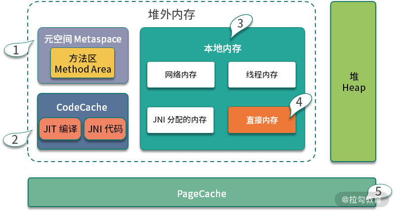
但我们在配置 ES 的堆内存时，通常把堆的初始化大小，设置成物理内存的一半。这是因为 ES 是存储类型的服务，我们需要预留一半的内存给文件缓存（理论参见 “07 | 案例分析：无处不在的缓存，高并发系统的法宝”），等下次用到相同的文件时，就不用与磁盘进行频繁的交互。这一块区域一般叫作 PageCache，占用的空间很大。
对于计算型节点来说，比如我们普通的 Web 服务，通常会把堆内存设置为物理内存的 2/3，剩下的 1/3 就是给堆外内存使用的。
我们这张图，对堆外内存进行了非常细致的划分，解释如下：
- 元空间 参数 -XX:MaxMetaspaceSize 和 -XX:MetaspaceSize，分别指定了元空间的最大内存和初始化内存。因为元空间默认是没有上限的，所以极端情况下，元空间会一直挤占操作系统剩余内存。
- JIT 编译后代码存放 -XX:ReservedCodeCacheSize。JIT 是 JVM 一个非常重要的特性，CodeCahe 存放的，就是即时编译器所生成的二进制代码。另外，JNI 的代码也是放在这里的。
- 本地内存 本地内存是一些其他 attch 在 JVM 进程上的内存区域的统称。比如网络连接占用的内存、线程创建占用的内存等。在高并发应用下，由于连接和线程都比较多，这部分内存累加起来还是比较可观的。
- 直接内存 这里要着重提一下直接内存，因为它是本地内存中唯一可以使用参数来限制大小的区域。使用参数 -XX:MaxDirectMemorySize，即可设定 ByteBuffer 类所申请的内存上限。
- JNI 内存 上面谈到 CodeCache 存放的 JNI 代码，JNI 内存就是指的这部分代码所 malloc 的具体内存。很可惜的是，这部分内存的使用 JVM 是无法控制的，它依赖于具体的 JNI 代码实现。
日志参数配置
下面是 ES 的日志参数配置，由于 Java 8 和 Java 9 的参数配置已经完全不一样了，ES 在这里也分了两份。
8:-XX:+PrintGCDetails
8:-XX:+PrintGCDateStamps
8:-XX:+PrintTenuringDistribution
8:-XX:+PrintGCApplicationStoppedTime
8:-Xloggc:logs/gc.log
8:-XX:+UseGCLogFileRotation
8:-XX:NumberOfGCLogFiles=32
8:-XX:GCLogFileSize=64m
9-:-Xlog:gc*,gc+age=trace,safepoint:file=logs/gc.log:utctime,pid,tags:filecount=32,filesize=64m
下面解释一下这些参数的意义，以 Java 8 为例。
- PrintGCDetails 打印详细 GC 日志。
- PrintGCDateStamps 打印当前系统时间，更加可读；与之对应的是PrintGCDateStamps 打印的是JVM启动后的相对时间，可读性较差。
- PrintTenuringDistribution 打印对象年龄分布，对调优 MaxTenuringThreshold 参数帮助很大。
- PrintGCApplicationStoppedTime 打印 STW 时间
- 下面几个日志参数是配置了类似于 Logback 的滚动日志，比较简单，不再详细介绍
从 Java 9 开始，JVM 移除了 40 多个 GC 日志相关的参数，具体参见 JEP 158。所以这部分的日志配置有很大的变化，GC 日志的打印方式，已经完全不一样了，比以前的日志参数规整了许多。
参数如下所示：
9-:-Xlog:gc*,gc+age=trace,safepoint:file=logs/gc.log:utctime,pid,tags:filecount=32,filesize=64m
再来看下 ES 在异常情况下的配置参数：
-XX:+HeapDumpOnOutOfMemoryError
-XX:HeapDumpPath=data
-XX:ErrorFile=logs/hs_err_pid%p.log
HeapDumpOnOutOfMemoryError、HeapDumpPath、ErrorFile 是每个 Java 应用都应该配置的参数。正常情况下，我们通过 jmap 获取应用程序的堆信息；异常情况下，比如发生了 OOM，通过这三个配置参数，即可在发生OOM的时候，自动 dump 一份堆信息到指定的目录中。
拿到了这份 dump 信息，我们就可以使用 MAT 等工具详细分析，找到具体的 OOM 原因。
垃圾回收器配置
ES 默认使用 CMS 垃圾回收器，它有以下三行主要的配置。
-XX:+UseConcMarkSweepGC
-XX:CMSInitiatingOccupancyFraction=75
-XX:+UseCMSInitiatingOccupancyOnly
下面介绍一下这两个参数：
- UseConcMarkSweepGC，表示年轻代使用 ParNew，老年代的用 CMS 垃圾回收器
- -XX:CMSInitiatingOccupancyFraction 由于 CMS 在执行过程中，用户线程还需要运行，那就需要保证有充足的内存空间供用户使用。如果等到老年代空间快满了，再开启这个回收过程，用户线程可能会产生“Concurrent Mode Failure”的错误，这时会临时启用 Serial Old 收集器来重新进行老年代的垃圾收集，这样停顿时间就很长了（STW）。
这部分空间预留，一般在 30% 左右即可，那么能用的大概只有 70%。参数 -XX:CMSInitiatingOccupancyFraction 用来配置这个比例，但它首先必须配置 -XX:+UseCMSInitiatingOccupancyOnly 参数。
另外，对于 CMS 垃圾回收器，常用的还有下面的配置参数：
- -XX:ExplicitGCInvokesConcurrent 当代码里显示的调用了 System.gc()，实际上是想让回收器进行FullGC，如果发生这种情况，则使用这个参数开始并行 FullGC。建议加上。
- -XX:CMSFullGCsBeforeCompaction 默认为 0，就是每次FullGC都对老年代进行碎片整理压缩，建议保持默认。
- -XX:CMSScavengeBeforeRemark 开启或关闭在 CMS 重新标记阶段之前的清除（YGC）尝试。可以降低 remark 时间，建议加上。
- -XX:+ParallelRefProcEnabled 可以用来并行处理 Reference，以加快处理速度，缩短耗时。
CMS 垃圾回收器，已经在 Java14 中被移除，由于它的 GC 时间不可控，有条件应该尽量避免使用。
针对 Java10（普通 Java 应用在 Java 8 中即可开启 G1），ES 可采用 G1 垃圾回收器。我们在 “17 | 高级进阶：JVM 如何完成垃圾回收？” 介绍过 G1，它可以通过配置参数 MaxGCPauseMillis，指定一个期望的停顿时间，使用相对比较简单。
下面是主要的配置参数：
- -XX:MaxGCPauseMillis 设置目标停顿时间，G1 会尽力达成。
- -XX:G1HeapRegionSize 设置小堆区大小。这个值为 2 的次幂，不要太大，也不要太小。如果是在不知道如何设置，保持默认。
- -XX:InitiatingHeapOccupancyPercent 当整个堆内存使用达到一定比例（默认是45%），并发标记阶段就会被启动。
- -XX:ConcGCThreads 并发垃圾收集器使用的线程数量。默认值随 JVM 运行的平台不同而不同。不建议修改。
JVM 支持非常多的垃圾回收器，下面是最常用的几个，以及配置参数：
- -XX:+UseSerialGC 年轻代和老年代都用串行收集器
- -XX:+UseParallelGC 年轻代使用 ParallerGC，老年代使用 Serial Old
- -XX:+UseParallelOldGC 新生代和老年代都使用并行收集器
- -XX:+UseG1GC 使用 G1 垃圾回收器
- -XX:+UseZGC 使用 ZGC 垃圾回收器
额外配置
我们再来看下几个额外的配置。
-Xss1m
-Xss设置每个 Java 虚拟机栈的容量为 1MB。这个参数和 -XX:ThreadStackSize 是一样的，默认就是 1MB。
-XX:-OmitStackTraceInFastThrow
把 - 换成 +，可以减少异常栈的输出，进行合并。虽然会对调试有一定的困扰，但能在发生异常时显著增加性能。随之而来的就是异常信息不好排查，ES 为了找问题方便，就把错误合并给关掉了。
-Djava.awt.headless=true
Headless 模式是系统的一种配置模式，在该模式下，系统缺少了显示设备、键盘或鼠标。在服务器上一般是没这些设备的，这个参数是告诉虚拟机使用软件去模拟这些设备。
9-:-Djava.locale.providers=COMPAT
-Dfile.encoding=UTF-8
-Des.networkaddress.cache.ttl=60
-Des.networkaddress.cache.negative.ttl=10
-Dio.netty.noUnsafe=true
-Dio.netty.noKeySetOptimization=true
-Dio.netty.recycler.maxCapacityPerThread=0
-Dlog4j.shutdownHookEnabled=false
-Dlog4j2.disable.jmx=true
-Djava.io.tmpdir=${ES_TMPDIR}
-Djna.nosys=true
上面这些参数，通过 -D 参数，在启动一个 Java 程序时，设置系统属性值，也就是在 System 类中通过 getProperties() 得到的一串系统属性。
这部分自定义性比较强，不做过多介绍。
其他调优
以上就是 ES 默认的 JVM 参数配置，大多数还是比较基础的。在平常的应用服务中，我们希望得到更细粒度的控制，其中比较常用的就是调整各个分代之间的比例。
- -Xmn 年轻代大小，默认年轻代占堆大小的 1/3。高并发快消亡场景可适当加大这个区域，对半或者更多都是可以的。但是在 G1 下，就不用再设置这个值了，它会自动调整；
- -XX:SurvivorRatio 默认值为 8，表示伊甸区和幸存区的比例；
- -XX:MaxTenuringThreshold 这个值在 CMS 下默认为 6，G1 下默认为 15。这个值和我们前面提到的对象提升有关，改动效果会比较明显。对象的年龄分布可以使用 -XX:+PrintTenuringDistribution 打印，如果后面几代的大小总是差不多，证明过了某个年龄后的对象总能晋升到老年代，就可以把晋升阈值设的小一些；
- PretenureSizeThreshold 超过一定大小的对象，将直接在老年代分配，不过这个参数用得不是很多。
练习：cassandra 的参数配置
了解了我们上面说的配置参数，大家可以拿 cassandra 的配置文件分析一下，cassandra 是一个高速的列存数据库，使用 gossip 进行集群维护，它的 JVM 参数配置同样在 jvm.options 中。
为了方便大家分析，我把 ES 和 cassandra 的这两个配置文件也上传到了仓库中，你可以实际练习一下，如果你有什么疑问，欢迎在下方留言区讨论。
20 SpringBoot 服务性能优化
在开始对 SpringBoot 服务进行性能优化之前，你需要做一些准备，把 SpringBoot 服务的一些数据暴露出来。比如，你的服务用到了缓存，就需要把缓存命中率这些数据进行收集；用到了数据库连接池，就需要把连接池的参数给暴露出来。
我们这里采用的监控工具是 Prometheus，它是一个是时序数据库，能够存储我们的指标。SpringBoot 可以非常方便地接入到 Prometheus 中。
SpringBoot 如何开启监控？
创建一个 SpringBoot 项目后，首先加入 maven 依赖。
<dependency>
<groupId>org.springframework.boot</groupId>
<artifactId>spring-boot-starter-actuator</artifactId>
</dependency>
<dependency>
<groupId>io.micrometer</groupId>
<artifactId>micrometer-registry-prometheus</artifactId>
</dependency>
<dependency>
<groupId>io.micrometer</groupId>
<artifactId>micrometer-core</artifactId>
</dependency>
然后，我们需要在 application.properties 配置文件中，开放相关的监控接口。
management.endpoint.metrics.enabled=true
management.endpoints.web.exposure.include=*
management.endpoint.prometheus.enabled=true
management.metrics.export.prometheus.enabled=true
启动之后，我们就可以通过访问监控接口来获取监控数据。
想要监控业务数据也是比较简单的，你只需要注入一个 MeterRegistry 实例即可，下面是一段示例代码：
@Autowired
MeterRegistry registry;
@GetMapping("/test")
@ResponseBody
public String test() {
registry.counter("test",
"from", "127.0.0.1",
"method", "test"
).increment();
return "ok";
}
从监控连接中，我们可以找到刚刚添加的监控信息。
test_total{from="127.0.0.1",method="test",} 5.0
这里简单介绍一下流行的Prometheus 监控体系，Prometheus 使用拉的方式获取监控数据，这个暴露数据的过程可以交给功能更加齐全的 telegraf 组件。
如上图，我们通常使用 Grafana 进行监控数据的展示，使用 AlertManager 组件进行提前预警。这一部分的搭建工作不是我们的重点，感兴趣的同学可自行研究。
下图便是一张典型的监控图，可以看到 Redis 的缓存命中率等情况。

Java 生成火焰图
火焰图是用来分析程序运行瓶颈的工具。
火焰图也可以用来分析 Java 应用。可以从 github 上下载 async-profiler 的压缩包进行相关操作。比如，我们把它解压到 /root/ 目录，然后以 javaagent 的方式来启动 Java 应用，命令行如下：
java -agentpath:/root/build/libasyncProfiler.so=start,svg,file=profile.svg -jar spring-petclinic-2.3.1.BUILD-SNAPSHOT.jar
运行一段时间后，停止进程，可以看到在当前目录下，生成了 profile.svg 文件，这个文件是可以用浏览器打开的。 如下图所示，纵向，表示的是调用栈的深度；横向，表明的是消耗的时间。所以格子的宽度越大，越说明它可能是一个瓶颈。一层层向下浏览，即可找到需要优化的目标。

优化思路
对一个普通的 Web 服务来说，我们来看一下，要访问到具体的数据，都要经历哪些主要的环节？
如下图，在浏览器中输入相应的域名，需要通过 DNS 解析到具体的 IP 地址上，为了保证高可用，我们的服务一般都会部署多份，然后使用 Nginx 做反向代理和负载均衡。

Nginx 根据资源的特性，会承担一部分动静分离的功能。其中，动态功能部分，会进入我们的SpringBoot 服务。
SpringBoot 默认使用内嵌的 tomcat 作为 Web 容器，使用典型的 MVC 模式，最终访问到我们的数据。
HTTP 优化
下面我们举例来看一下，哪些动作能够加快网页的获取。为了描述方便，我们仅讨论 HTTP1.1 协议的。
1.使用 CDN 加速文件获取
比较大的文件，尽量使用 CDN（Content Delivery Network）分发，甚至是一些常用的前端脚本、样式、图片等，都可以放到 CDN 上。CDN 通常能够加快这些文件的获取，网页加载也更加迅速。
2.合理设置 Cache-Control 值
浏览器会判断 HTTP 头 Cache-Control 的内容，用来决定是否使用浏览器缓存，这在管理一些静态文件的时候，非常有用，相同作用的头信息还有 Expires。Cache-Control 表示多久之后过期；Expires 则表示什么时候过期。
这个参数可以在 Nginx 的配置文件中进行设置。
location ~* ^.+\.(ico|gif|jpg|jpeg|png)$ {
# 缓存1年
add_header Cache-Control: no-cache, max-age=31536000;
}
3.减少单页面请求域名的数量
减少每个页面请求的域名数量，尽量保证在 4 个之内。这是因为，浏览器每次访问后端的资源，都需要先查询一次 DNS，然后找到 DNS 对应的 IP 地址，再进行真正的调用。
DNS 有多层缓存，比如浏览器会缓存一份、本地主机会缓存、ISP 服务商缓存等。从 DNS 到 IP 地址的转变，通常会花费 20-120ms 的时间。减少域名的数量，可加快资源的获取。
4.开启 gzip
开启 gzip，可以先把内容压缩后，浏览器再进行解压。由于减少了传输的大小，会减少带宽的使用，提高传输效率。
在 nginx 中可以很容易地开启，配置如下：
gzip on;
gzip_min_length 1k;
gzip_buffers 4 16k;
gzip_comp_level 6;
gzip_http_version 1.1;
gzip_types text/plain application/javascript text/css;
5.对资源进行压缩
对 JavaScript 和 CSS，甚至是 HTML 进行压缩。道理类似，现在流行的前后端分离模式，一般都是对这些资源进行压缩的。
6.使用 keepalive
由于连接的创建和关闭，都需要耗费资源。用户访问我们的服务后，后续也会有更多的互动，所以保持长连接可以显著减少网络交互，提高性能。
nginx 默认开启了对客户端的 keep avlide 支持，你可以通过下面两个参数来调整它的行为。
http {
keepalive_timeout 120s 120s;
keepalive_requests 10000;
}
nginx 与后端 upstream 的长连接，需要手工开启，参考配置如下：
location ~ /{
proxy_pass http://backend;
proxy_http_version 1.1;
proxy_set_header Connection "";
}
自定义 Web 容器
如果你的项目并发量比较高，想要修改最大线程数、最大连接数等配置信息，可以通过自定义Web 容器的方式，代码如下所示。
@SpringBootApplication(proxyBeanMethods = false)
public class App implements WebServerFactoryCustomizer<ConfigurableServletWebServerFactory> {
public static void main(String[] args) {
SpringApplication.run(PetClinicApplication.class, args);
}
@Override
public void customize(ConfigurableServletWebServerFactory factory) {
TomcatServletWebServerFactory f = (TomcatServletWebServerFactory) factory;
f.setProtocol("org.apache.coyote.http11.Http11Nio2Protocol");
f.addConnectorCustomizers(c -> {
Http11NioProtocol protocol = (Http11NioProtocol) c.getProtocolHandler();
protocol.setMaxConnections(200);
protocol.setMaxThreads(200);
protocol.setSelectorTimeout(3000);
protocol.setSessionTimeout(3000);
protocol.setConnectionTimeout(3000);
});
}
}
注意上面的代码，我们设置了它的协议为 org.apache.coyote.http11.Http11Nio2Protocol，意思就是开启了 Nio2。这个参数在 Tomcat 8.0之后才有，开启之后会增加一部分性能。 对比如下（测试项目代码见 spring-petclinic-main）：
默认。
[root@localhost wrk2-master]# ./wrk -t2 -c100 -d30s -R2000 http://172.16.1.57:8080/owners?lastName=
Running 30s test @ http://172.16.1.57:8080/owners?lastName=
2 threads and 100 connections
Thread calibration: mean lat.: 4588.131ms, rate sampling interval: 16277ms
Thread calibration: mean lat.: 4647.927ms, rate sampling interval: 16285ms
Thread Stats Avg Stdev Max +/- Stdev
Latency 16.49s 4.98s 27.34s 63.90%
Req/Sec 106.50 1.50 108.00 100.00%
6471 requests in 30.03s, 39.31MB read
Socket errors: connect 0, read 0, write 0, timeout 60
Requests/sec: 215.51
Transfer/sec: 1.31MB
Nio2。
[root@localhost wrk2-master]# ./wrk -t2 -c100 -d30s -R2000 http://172.16.1.57:8080/owners?lastName=
Running 30s test @ http://172.16.1.57:8080/owners?lastName=
2 threads and 100 connections
Thread calibration: mean lat.: 4358.805ms, rate sampling interval: 15835ms
Thread calibration: mean lat.: 4622.087ms, rate sampling interval: 16293ms
Thread Stats Avg Stdev Max +/- Stdev
Latency 17.47s 4.98s 26.90s 57.69%
Req/Sec 125.50 2.50 128.00 100.00%
7469 requests in 30.04s, 45.38MB read
Socket errors: connect 0, read 0, write 0, timeout 4
Requests/sec: 248.64
Transfer/sec: 1.51MB
你甚至可以将 tomcat 替换成 undertow。undertow 也是一个 Web 容器，更加轻量级一些，占用的内存更少，启动的守护进程也更少，更改方式如下：
<dependency>
<groupId>org.springframework.boot</groupId>
<artifactId>spring-boot-starter-web</artifactId>
<exclusions>
<exclusion>
<groupId>org.springframework.boot</groupId>
<artifactId>spring-boot-starter-tomcat</artifactId>
</exclusion>
</exclusions>
</dependency>
<dependency>
<groupId>org.springframework.boot</groupId>
<artifactId>spring-boot-starter-undertow</artifactId>
</dependency>
其实，对于 tomcat 优化最为有效的，还是 JVM 参数的配置，你可以参考上一课时的内容进行调整。 比如，使用下面的参数启动，QPS 由 248 上升到 308。
-XX:+UseG1GC -Xmx2048m -Xms2048m -XX:+AlwaysPreTouch
Skywalking
对于一个 web 服务来说，最缓慢的地方就在于数据库操作。所以，使用“07 | 案例分析：无处不在的缓存，高并发系统的法宝”和“08 | 案例分析：Redis 如何助力秒杀业务”提供的本地缓存和分布式缓存优化，能够获得最大的性能提升。
对于如何定位到复杂分布式环境中的问题，我这里想要分享另外一个工具：Skywalking。
Skywalking 是使用探针技术（JavaAgent）来实现的。通过在 Java 的启动参数中，加入 javaagent 的 Jar 包，即可将性能数据和调用链数据封装，并发送到 Skywalking 的服务器。
下载相应的安装包（如果使用 ES 存储，需要下载专用的安装包），配置好存储之后，即可一键启动。
将 agent 的压缩包，解压到相应的目录。
tar xvf skywalking-agent.tar.gz -C /opt/
在业务启动参数中加入 agent 的包。比如，原来的启动命令是：
java -jar /opt/test-service/spring-boot-demo.jar --spring.profiles.active=dev
改造后的启动命令是：
java -javaagent:/opt/skywalking-agent/skywalking-agent.jar -Dskywalking.agent.service_name=the-demo-name -jar /opt/test-service/spring-boot-demo.ja --spring.profiles.active=dev
访问一些服务的链接，打开 Skywalking 的 UI，即可看到下图的界面。这些指标可以类比“01 | 理论分析：性能优化，有哪些衡量指标？需要注意什么？”提到的衡量指标去理解，我们就可以从图中找到响应比较慢 QPS 又比较高的接口，进行专项优化。
各个层次的优化方向
1.Controller 层
controller 层用于接收前端的查询参数，然后构造查询结果。现在很多项目都采用前后端分离的架构，所以 controller 层的方法，一般会使用 @ResponseBody 注解，把查询的结果，解析成 JSON 数据返回（兼顾效率和可读性）。
由于 controller 只是充当了一个类似功能组合和路由的角色，所以这部分对性能的影响就主要体现在数据集的大小上。如果结果集合非常大，JSON 解析组件就要花费较多的时间进行解析，
大结果集不仅会影响解析时间，还会造成内存浪费。
假如结果集在解析成 JSON 之前，占用的内存是 10MB，那么在解析过程中，有可能会使用 20M 或者更多的内存去做这个工作。
我见过很多案例，由于返回对象的嵌套层次太深、引用了不该引用的对象（比如非常大的 byte[] 对象），造成了内存使用的飙升。
所以，对于一般的服务，保持结果集的精简，是非常有必要的，这也是 DTO（data transfer object）存在的必要。如果你的项目，返回的结果结构比较复杂，对结果集进行一次转换是非常有必要的。
2.Service 层
service 层用于处理具体的业务，大部分功能需求都是在这里完成的。service 层一般是使用单例模式（prototype），很少会保存状态，而且可以被 controller 复用。
service 层的代码组织，对代码的可读性、性能影响都比较大。我们常说的设计模式，大多数都是针对 service 层来说的。
service 层会频繁使用更底层的资源，通过组合的方式获取我们所需要的数据，大多数可以通过我们前面课时提供的优化思路进行优化。
这里要着重提到的一点，就是分布式事务。
如上图，四个操作分散在三个不同的资源中。要想达到一致性，需要三个不同的资源 MySQL、MQ、ElasticSearch 进行统一协调。它们底层的协议，以及实现方式，都是不一样的，那就无法通过 Spring 提供的 Transaction 注解来解决，需要借助外部的组件来完成。
很多人都体验过，加入了一些保证一致性的代码，一压测，性能掉的惊掉下巴。分布式事务是性能杀手，因为它要使用额外的步骤去保证一致性，常用的方法有：两阶段提交方案、TCC、本地消息表、MQ 事务消息、分布式事务中间件等。
如上图，分布式事务要在改造成本、性能、时效等方面进行综合考虑。有一个介于分布式事务和非事务之间的名词，叫作柔性事务。柔性事务的理念是将业务逻辑和互斥操作，从资源层上移至业务层面。
关于传统事务和柔性事务，我们来简单比较一下。
ACID
关系数据库, 最大的特点就是事务处理, 即满足 ACID。
- 原子性（Atomicity）：事务中的操作要么都做，要么都不做。
- 一致性（Consistency）：系统必须始终处在强一致状态下。
- 隔离性（Isolation）：一个事务的执行不能被其他事务所干扰。
- 持久性（Durability）：一个已提交的事务对数据库中数据的改变是永久性的。
BASE
BASE 方法通过牺牲一致性和孤立性来提高可用性和系统性能。
BASE 为 Basically Available、Soft-state、Eventually consistent 三者的缩写，其中 BASE 分别代表：
- 基本可用（Basically Available）：系统能够基本运行、一直提供服务。
- 软状态（Soft-state）：系统不要求一直保持强一致状态。
- 最终一致性（Eventual consistency）：系统需要在某一时刻后达到一致性要求。
互联网业务，推荐使用补偿事务，完成最终一致性。比如，通过一系列的定时任务，完成对数据的修复。
3.Dao 层
经过合理的数据缓存，我们都会尽量避免请求穿透到 Dao 层。除非你对 ORM 本身提供的缓存特性特别的熟悉；否则，都推荐你使用更加通用的方式去缓存数据。
Dao 层，主要在于对 ORM 框架的使用上。比如，在 JPA 中，如果加了一对多或者多对多的映射关系，而又没有开启懒加载，级联查询的时候就容易造成深层次的检索，造成了内存开销大、执行缓慢的后果。
在一些数据量比较大的业务中，多采用分库分表的方式。在这些分库分表组件中，很多简单的查询语句，都会被重新解析后分散到各个节点进行运算，最后进行结果合并。
举个例子，select count(*) from a 这句简单的 count 语句，就可能将请求路由到十几张表中去运算，最后在协调节点进行统计，执行效率是可想而知的。目前，分库分表中间件，比较有代表性的是驱动层的 ShardingJdbc 和代理层的 MyCat，它们都有这样的问题。这些组件提供给使用者的视图是一致的，但我们在编码的时候，一定要注意这些区别。
小结
下面我们来总结一下。
本课时，我们简单看了一下 SpringBoot 常见的优化思路，然后介绍了三个新的性能分析工具。
- 一个是监控系统 Prometheus，可以看到一些具体的指标大小；
- 一个是火焰图，可以看到具体的代码热点；
- 一个是 Skywalking，可以分析分布式环境中的调用链。
SpringBoot 自身的 Web 容器是 Tomcat，那我们就可以通过对 Tomcat 的调优来获取性能提升。当然，对于服务上层的负载均衡 Nginx，我们也提供了一系列的优化思路。
最后，我们看了在经典的 MVC 架构下，Controller、Service、Dao 的一些优化方向，并着重看了 Service 层的分布式事务问题。
SpringBoot 作为一个广泛应用的服务框架，在性能优化方面已经做了很多工作，选用了很多高速组件。比如，数据库连接池默认使用 hikaricp，Redis 缓存框架默认使用 lettuce，本地缓存提供 caffeine 等。对于一个普通的数据库交互的 Web 服务来说，缓存是最主要的优化手段。
但细节决定成败，05-19 课时的内容对性能优化都有借鉴意义。下一课时（也就是咱们专栏的最后一课时），我将从问题发现、目标制定、优化方式上进行整体性的总结。
21 性能优化的过程方法与求职面经总结
经过前面的学习，你可能会发现，即使熟悉了开发中的各项技术和优化技巧，但在真正的性能优化场景下，自己依旧很难开展优化任务。其实这是因为你脑海里的知识杂乱无章，仅能靠回忆仅能完成片面的优化。
这时我通常都会在手边准备一份详细的提纲，这样在性能优化的时候，能够为我指明方向，并以完整的思维方式进行思考。
所以，今天我想向你总结一下性能优化的过程方法，希望能够在你进行性能分析，却没有头绪时也为你提供指引。
性能优化需要多方面权衡
应用性能低，有很多方面的因素，比如业务需求层面、架构设计层面、硬件/软件层面等，我们的专栏关注的主要是软件层面，但也不要忘记性能优化还有其他手段。
先举个业务需求层面的例子。有一个报表业务，查询非常缓慢，有时候甚至会造成内存溢出。经过分析，发现是查询时间跨度范围太大造成的。
由于业务上的限制，我们将时间跨度缩小至 1 个月之内之后，查询速度就快了很多。
再举一个硬件层面的例子。有一个定时任务，可以算是 CPU 密集型的，每次都将 CPU 用得满满的。由于系统有架构上的硬伤，无法做到横向扩容。技术经过评估，如果改造成按照数据分片执行的模式，则需要耗费长达 1 个月的工时。
其实在这种情况下，我们通过增加硬件配置的方式，便能解决性能瓶颈问题，为业务改进赢得更多的时间。
举这两个例子的目的是想要说明，性能优化有很多优化途径，如果这个性能问题可以通过其他方式解决，那就尽量不要采用调整软件代码的方式，我们尽可能地在效果、工时、手段这三方面之间进行权衡。
如何找到优化目标？
通常，关注一个硬件资源（比如 CPU），我们主要关注以下基本要素。
- 利用率： 一般是瞬时值，属于采样范围，用来判断有没有峰值，比如 CPU 使用率。
- 饱和度： 一般指资源是否被合理利用，能否用分担更多的工作。比如，饱和度过高，新请求在特定 queue 里排队；再比如，内存利用率过低、CPU 利用率过高，就可以考虑空间换时间。
- 错误信息： 错误一般发生在问题严重的情况下，需要特别关注。
- 联想信息： 对引起的原因进行猜测，并用更多的工具验证猜想，猜测影响因素并不一定是准确的，只是帮助我们分析问题，比如系统响应慢很可能是大量使用了 SWAP 导致的。
首先，我们需要找到性能优化的目标，我们依然从 CPU、内存、网络、I/O 等层面看一下性能瓶颈可能存在的匿藏之处。
1.CPU
查看 CPU 使用可以使用 top 命令，尤其注意它的负载（load）和使用率，vmstat 命令也可以看到系统的一些运行状况，我们这里关注上下文切换和 swap 分区的使用情况。
2.内存
内存可以使用 free 命令查看，尤其关注剩余内存的大小（free）。对于 Linux 系统来说，启动之后由于各种缓存和缓冲区的原因，系统内存会被迅速占满，所以我们更加关注的是 JVM 的内存。
top 命令的 RES 列，显示的就是进程实际占用的物理内存，这个值通常比 jmap 命令获取的堆内存要大，因为它还包含大量的堆外内存空间。
3.网络
iotop 可以看到占用网络流量最高的进程；通过 netstat 命令或者 ss 命令，能够看到当前机器上的网络连接汇总。在一些较底层的优化中，会涉及针对 mtu 的网络优化。
4.I/O
通过 iostat 命令，可以查看磁盘 I/O 的使用情况，如果利用率过高，就需要从使用源头找原因；类似 iftop，iotop 可以查看占用 I/O 最多的进程，很容易可以找到优化目标。
5.通用
lsof 命令可以查看当前进程所关联的所有资源；sysctl 命令可以查看当前系统内核的配置参数； dmesg 命令可以显示系统级别的一些信息，比如被操作系统的 oom-killer 杀掉的进程就可以在这里找到。
整理了一幅脑图，可供你参考：

常用工具集合
为了找到系统的问题，我们会采用类似于神农尝百草的方式，用多个工具、多种手段获取系统的运行状况。
1.信息收集
nmon 是一个可以输出系统整体性能数据的命令行工具，应用较为广泛。
jvisualvm 和 jmc，都是用来获取 Java 应用性能数据的工具。由于它们是 UI 工具，应用需要开启 JMX 端口才能够被远程连接。
2.监控
像 top 这样的命令，只在问题发生的时候才会有作用。但很多时候，当发生性能问题时，我们并不在电脑旁边，这就需要有一套工具，定期抓取这些性能数据。通过监控系统，能够获取监控指标的历史时序，通过分析指标趋势，可估算性能瓶颈点，从数据上支撑我们的分析。
目前最流行的组合是 prometheus + grafana + telegraf，可以搭功能强大的监控平台。
3.压测工具
有时候，我们需要评估系统在一定并发量下面的性能，这时候就可以通过压测工具给予系统一些压力。
wrk 是一个命令行工具，可以对 HTTP 接口进行压测；jmeter 是较为专业的压测工具，可以生成压测报告。压测工具配合监控工具，可以正确评估系统当前的性能。
4.性能深挖
大多数情况下，仅通过概括性的性能指标，我们无法知晓性能瓶颈的具体细节，这就需要一些比较深入的工具进行追踪。
skywalking 可以用来分析分布式环境下的调用链问题，可以详细地看到每一步执行的耗时。但如果你没有这样的环境，就可以使用命令行工具 arthas 对方法进行 trace，最终也能够深挖找到具体的慢逻辑。
jvm-profiling-tools，可以生成火焰图，辅助我们分析问题。另外，更加底层的，针对操作系统的性能测评和调优工具，还有perf和SystemTap，感兴趣的同学可以自行研究一下。
关于工具方面的内容，你可以回顾“04 | 工具实践：如何获取代码性能数据？”和“05｜工具实践：基准测试 JMH，精确测量方法性能”进行回忆复习，我整理了一幅脑图，可供你参考。
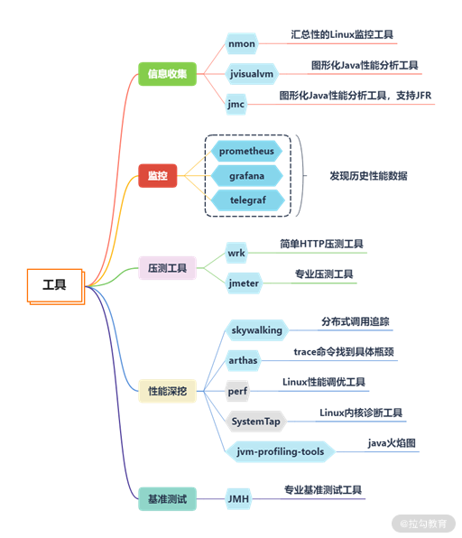
基本解决方式
找到了具体的性能瓶颈点，就可以针对性地进行优化。
1.CPU 问题
CPU 是系统的核心资源，如果 CPU 有瓶颈，很多任务和线程就获取不到时间片，便会运行缓慢。如果此时系统的内存充足，就要考虑是否可以空间换时间，通过数据冗余和更优的算法来减少 CPU 的使用。
在 Linux 系统上，通过 top-Hp 便能容易地获取占用 CPU 最高的线程，进行针对性的优化。
资源的使用要细分，才能够进行专项优化。
我曾经碰见一个棘手的性能问题，线程都阻塞在 ForkJoin 线程池上，经过仔细排查才分析出，代码在等待耗时的 I/O 时，采用了并行流（parallelStrea）处理，但是 Java 默认的方式是所有使用并行流的地方，公用了一个通用的线程池，这个线程池的并行度只有 CPU 的两倍。所以请求量一增加，任务就会排队，造成积压。
2.内存问题
内存问题通常是 OOM 问题，可以参考“19 | 高级进阶：JVM 常见优化参数”进行优化。如果内存资源很紧张，CPU 利用率低，则可以考虑时间换空间的方式。
SWAP 分区使用硬盘来扩展可用内存的大小，但它的速度非常慢。一般在高并发的应用中，会把 SWAP 关掉，因为它很容易会引起卡顿。
3.I/O 问题
我们通常开发的业务系统，磁盘 I/O 负载都比较小，但网络 I/O 都比较繁忙。
当遇到磁盘 I/O 占用高的情况，就要考虑是否是日志打印得太多导致的。通过调整日志级别，或者清理无用的日志代码，便可缓解磁盘 I/O 的压力。
业务系统还会有大量的网络 I/O 操作，比如通过 RPC 调用一个远程的服务，我们期望使用 NIO 来减少一些无效的等待，或者使用并行来加快信息的获取。
还有一种情况，是类似于 ES 这样的数据库应用，数据写入本身，就会造成繁重的磁盘 I/O。这个时候，可以增加硬件的配置，比如换成 SSD 磁盘，或者增加新的磁盘。
数据库服务本身，也会提供非常多的参数，用来调优性能。根据“06 | 案例分析：缓冲区如何让代码加速”和“07 | 案例分析：无处不在的缓存，高并发系统的法宝”的描述，这部分的配置参数，主要影响缓冲和缓存的行为。
比如 ES 的 segment 块大小，translog 的刷新速度等，都可以被微调。举个例子，大量日志写入 ES 的时候，就可以通过增大 translog 写盘的间隔，来获得较大的性能提升。
4.网络问题
数据包在网络上传输，影响的主要因素就是结果集的大小。通过去除无用的信息，启用合理的压缩，可以获得较大的性能提升。
值得注意的是，这里的网络传输值得不仅仅是针对浏览器的，在服务间调用中也有着同样的情况。
比如，在 SpringBoot 的配置文件中，通过配置下面的参数，就可以开启 gzip。
server:
compression:
enabled: true
min-response-size: 1024
mime-types: ["text/html","application/json","application/octet-stream"
但是，这个 SpringBoot 服务，通过 Feign 接口从另外一个服务获取信息，这个结果集并没有被压缩。 可以通过替换 Feign 的底层网络工具为 OkHTTP，使用 OkHTTP 的透明压缩（默认开启 gzip），即可完成服务间调用的信息压缩，但很多同学容易忘掉这一环。我曾经调优果一个项目，将返回的数据包从9MB 压缩到300KB 左右，极大地减少了网络传输，节省了大约 500ms 的时间。
网络 I/O 的另外一个问题就是频繁的网络交互，通过将结果集合并，使用批量的方式，可以显著增加性能，但这种方式的使用场景有限，比较适合异步的任务处理。
使用 netstat 命令，或者 lsof 命令，可以获取进程所关联的，TIME_WAIT 和 CLOSE_WAIT 网络状态的数量，前者可以通过调整内核参数来解决，但后者多是应用程序的 BUG。
我整理了一幅脑图，可供你参考。

有了上面的信息收集和初步优化，我想你脑海里应该对要优化的系统已经有了非常详细的了解，是时候改变一些现有代码的设计了。
可以说如果上面的基本解决方式面向的是“面”，那么代码层面的优化，面向的就是具体的“性能瓶颈点”。
代码层面
代码层面的优化是我们课程的重点，我们花了非常大的篇幅在整个“模块三：实战案例与高频面试点”部分进行这方面的讲解，在这一课时我再简单地总结一下。
1.中间层
不同资源之间相互调用的性能瓶颈，主要在于资源的速度差异上。解决方式主要是加入一个中间层，有缓冲 / 缓存，以及池化这三种形态，以牺牲信息的时效性为代价，加快信息的处理速度。
缓冲，使得资源两方，都能按照自己的节奏进行操作的同时，也可以完全地顺序衔接起来。它能够消除两方的速度差异，以批量的方式，来减少性能损耗。
你可进入“06 | 案例分析：缓冲区如何让代码加速”进行回顾复习。
缓存，在系统中的应用非常广泛，有堆内缓存和分布式缓存之分。有些对性能要求非常高的场景，甚至会有多级缓存的组合形态。我们的目标是尽量提高缓存的命中率，以便中间层得其所用。
你可进入“07 | 案例分析：无处不在的缓存，高并发系统的法宝”进行回顾复习。
另一种中间层形态，就是对资源进行集中管控，以池化的思想来减少对象的创建成本。在对象的创建成本比较大时，才能体现到池化的价值，否则只会增加代码的复杂度。
你可进入“09 | 案例分析：池化对象的应用场景”进行回顾复习。
2.资源同步
在我们的编码中，有时候对数据的一致性要求比较高，就不得不用到锁和事务，不管是线程锁还是分布式锁，甚至是适合读多写少场景的乐观锁，都有一些通用的优化法则。
- 第一，切分冲突资源的粒度，这样就可以分而治之；
- 第二，减少资源锁定的时间，尽快释放共享资源；
- 第三，将读操作与写操作区分开，进一步减少冲突发生的可能。
普通的事务可以通过 Spring 的 @Transactional 注解简单的实现，但通常业务会涉及多个异构的资源。如无必要，非常不推荐使用分布式事务去解决，而应该采用最终一致性的思想，将互斥操作从资源层上移至业务层。
3.组织优化
另外一种有效的方式是通过重构，改变我们代码的组织结构。
通过设计模式，可以让我们的代码逻辑更加清晰，在性能优化的时候，可以直接定位到要优化的代码。我曾见过很多需要性能调优的应用代码，由于对象的关系复杂和代码组织的混乱，想要加入一个中间层是相当困难的。这个时候，首要的任务是梳理、重构这些代码，否则很难进行进一步的性能优化。
另外一个对编程模式影响较大的就是异步化。
异步化多采用生产者消费者模式，来减少同步等待造成的性能损耗，但它的编程模型难度较大，需要很多额外的工作。比如我们使用 MQ 完成了异步化，就不得不考虑消息失败、重复、死信等保障性功能（产品形态上的改变，不在讨论范围之内）。
4.资源利用不足
并不是说系统的资源利用率越低，我们的代码写得就越好。作为一个编码者，我们要想方设法压榨系统的剩余价值，让所有的资源都轮转起来。尤其在高并发场景下，这种轮转就更加重要——属于在一定压力下系统的最优状态。
资源不能合理的利用，就是一种浪费。比如，业务应用多属于 I/O 密集型业务，如果让请求都阻塞在 I/O 上，就造成了 CPU 资源的浪费。这时候使用并行，就可以在同一时刻承担更多的任务，并发量就能够增加；再比如，我们监控到 JVM 的堆空闲空间，长期处于高位，那就可以考虑加大堆内缓存的容量，或者缓冲区的容量。
我整理了一幅脑图，可供你参考。

PDCA 循环方法论
性能优化是一个循环的过程，需要根据数据反馈进行实时调整。有时候，测试结果表明，有些优化的效果并不好，就需要回滚到优化前的版本，重新寻找突破点。

如上图，PDCA 循环的方法论可以支持我们管理性能优化的过程，它有 4 个步骤：
- P（Planning）计划阶段，找出存在的性能问题，收集性能指标信息，确定要改进的目标，准备达到这些目标的具体措施；
- D（do）执行阶段，按照设计，将优化措施付诸实践；
- C（check）检查阶段，及时检查优化的效果，及时发现改进过程中的经验及问题；
- A（act）处理阶段，将成功的优化经验进行推广，由点及面进行覆盖，为负面影响提供解决方案，将错误的方法形成经验。
如此周而复始，应用的性能将会逐步提高，如下图，对于性能优化来说，就可以抽象成下面的方式。

既然叫作循环，就说明这个过程是可以重复执行的。事实上，在我们的努力下，应用性能会螺旋式上升，最终达到我们的期望。
求职面经
1. 关注“性能优化”的副作用问题
性能优化的面试题，一般都是穿插在其他题目里的。你不仅需要关注“性能优化”本身，还需关注“性能优化”之后的问题，因为等你答出面试官想要的性能优化方案之后，面试官接下来便会追问“这个方案所引起的其他问题”。
比如，当你谈到你使用缓存提高了接口的性能时，面试官会接着问你一些关于缓存同步的问题。我们专栏有大部分篇幅描述了性能引起的这些副反应，这些知识更需要你去用心掌握。
2.掌握好“性能优化”基础知识
另外，从上面的总结我们就可以看出，性能优化涉及的知识点非常多，那如何在有限的面试时间里尽量多地展现自己呢？那便是打好知识基础，能够对问题进行详细准确地作答。
- 你都对JVM做了那些优化，有哪些性能提升？
- 为什么互联网场景下通常使用乐观锁？
上述两个问题比较好回答，因为它的答案相对确定，你只需要讲清楚特定的知识点就可以了，而比较麻烦的会是下来这类题目。
3.发散、综合性题目提前准备
如果上面的题是围绕“点”，那么下面的题便是围绕一个“面”。
- 你在项目中做过哪些性能优化方面的工作？
- 你是如何指导团队做性能优化的？
如果你仅针对某个知识点进行描述，那么你的答案就显得非常单薄。其实你可以从问题发现、问题解决、问题验证等方面系统性地分别进行描述，并着重谈一下在这一过程中自己认为最重要并最熟悉的知识点。
所以，我推荐你在面试前，根据自己的项目准备一下这两类问题的现实案例（如果没有实践、合情合理的推演也是合适的），这样在碰到这样的问题时，才能够快速应对，让面试官刮目相看。
小结
本课时，我们主要对前面课时的内容进行了统一的梳理和总结，最终将性能优化总结为：找到优化目标 → 使用工具获取更多性能数据 → 性能优化的基本的解决方式 → 代码层面优化→ 过程方法，以及支持这一过程的方法论—PDCA 循环，应用性能就是靠这样一轮轮的优化，逐渐累加它的效果。
最后，又向你简单介绍了“求职面经”，希望能帮助你在职业道路上越走越远。
22 结束语 实践出真知
你好，欢迎来到该专栏的最后一部分，到现在为止，咱们的这一专栏就算讲完了，在学习过程中，你会发现这个专栏的思路是非常清晰的，性能优化的诸多方法论和面试高频考点都包含在其中，非常值得你反复学习揣摩。
但实际上，写作过程并没有那么顺利，正如我在开篇词中所说，“性能优化是个系统性工程，对工程师的技术广度和深度都有要求”，所以要将“性能优化”这个既需要扎实知识基础，又需要充分实践的知识点讲明白则是非常大的考验。
在写作的过程中，我也参考了数十本性能优化专题的书籍，但都没有发现我想要的讲解方式。因为很多书籍，面向的是小白用户，它仅仅是在对知识点进行单纯的介绍，和性能优化这一实践主题是不搭边的，而这种情况在绝大多数普通的 Java 基础书籍中都存在。甚至连权威的《Java 性能优化权威指南》，也是有非常大的篇幅在讲解 JVM，其讲解的很多原理性的知识并不能在工作中真正实践起来。
我之前在拉勾教育也开过《深入浅出 Java 虚拟机》这一专栏，我一共花了 25 课时讲解 JVM，但在其中的性能优化部分中，我将其压缩到了 3 个课时，所以很多细节都是无法展开的。
综上两种情况，上述写法都不能完善全面地讲解“性能优化”，所以我决定开一门《性能优化实战 21 讲》的专栏，挑选在工作中最常用到的组件，来配合原理性的性能优化点进行讲解。
在课程中，我一直在强调思维的系统性、完整性，在性能优化中，你不应该只关注性能优化本身，而更要关注它所引入的问题，性能优化并不是“碰巧”知道某个优化点该如何做，而是需要很多准备工作和数据支撑。你可以参考“21 | 性能优化的过程方法”的脑图，它将帮助你系统性地分析性能瓶颈，选用正确的优化方法，并处理好优化所带来的副作用。
你会发现，很多遗留系统是不满足应用某些性能优化法则的，你需要在优化前重构你的代码。所以，你不妨对你的代码要求苛刻一点，超过 1 秒的请求，都分析一下有没有优化的空间，把握好每一次的实践机会。相信经过多次实践，你一定会对性能优化有更深的理解。
虽然本专栏到此就结束了，但不代表你对性能优化的学习就停止了，本专栏仅仅是打开了“性能优化”的大门，之后还需要你亲自实践，才能欣赏里面的风景。尤其是对于“性能优化”这一本身就非常具有“实践性”的主题，在平常的工作中，希望你一定多积累开拓自己的广度认知，并深耕自己的技术实力，相信你一定能取得质的飞跃。